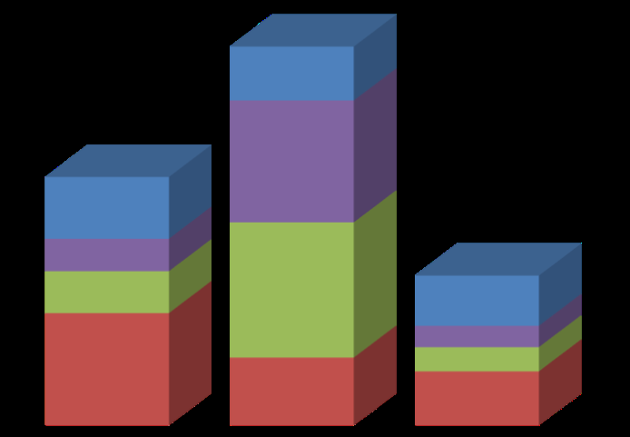
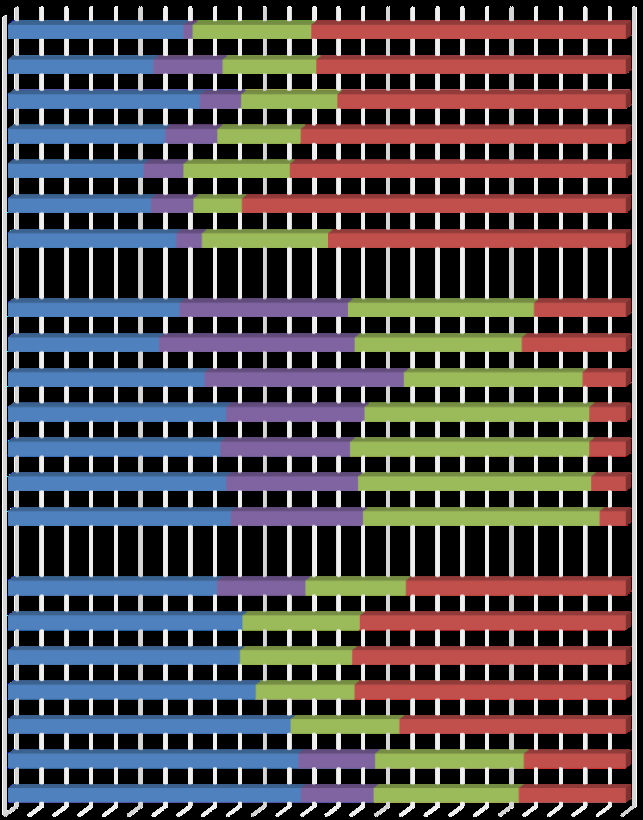
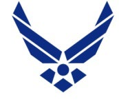

LIST OF ACRONYMS AND ABBREVIATIONS
AFC Army Futures Command AFRL Air Force Research Laboratory ARF Aerophysics Research Facility COVID-19 Coronavirus Disease 2019 DEVCOM Combat Capabilities Development Command DoD ERDC
Department of Defense Engineer Research and Development Center FLEX-4 Funding Laboratory Enhancements Across (X) Four FY Fiscal Year MILCON Military Construction MRDC Medical Research and Development Command NDAA National Defense Authorization Act NISE Naval Innovative Science and Engineering OMA Operations and Maintenance Army OPA Other Procurement Army PE Program Element PEO Program Executive Office R&D Research and Development RDT&E Research, Development, Test, and Evaluation RFC Radio Frequency Communications S&Es Scientists and Engineers S&T Science and Technology SMDCTC Space and Missile Defense Command Technical Center SOAR Squad Operations Advanced Resupply STRL Science and Technology Reinvention Laboratory U.S.C. United States Code USASMDC/ARSTRAT U.S. Army Space and Missile Defense Command/Army Forces Strategic
Command WBI Wright Brother’s Institute
This report provides an overview of U.S. Army, Navy, and Air Force Fiscal Year (FY) 2020 efforts funded under the authority of Section 2363 of Title 10, United States Code (U.S.C.). In FY 2019 the Secretary of Defense, in consultation with the Military Departments, formally titled the efforts under Section 2363 authority as the Department of Defense (DoD) Funding Laboratory Enhancements Across (X) Four Categories (FLEX-4) Program. Section 2363 authority was previously provided under Section 219 of the National Defense Authorization Act (NDAA) for FY 2009, 1 amended by Section 2801 of the NDAA for FY 2010 and further amended by 10 U.S.C. § 2363(a). Section 220 of the NDAA for FY 2018 (Public Law 115–91) formally codifies this authority in 10 U.S.C. § 2363. The authority directs the Under Secretary of Defense for Research and Engineering, in consultation with the Secretaries of the Military Departments, to establish mechanisms under which the director of a defense laboratory may use an amount of funds coming into the laboratory for any of four specific purposes: Category 1: To fund innovative basic and applied research conducted at the defense laboratory that
supports military missions Category 2: To fund development programs that support the transition of technologies developed by
the defense laboratory into operational use Category 3: To fund workforce development activities that improve the capacity of the defense
laboratory to recruit and retain personnel with necessary scientific and engineering expertise to support military missions Category 4: To fund the revitalization and recapitalization (repair or minor military construction) of
laboratory infrastructure and equipment Initially, Section 219 allowed laboratory directors to spend up to three percent of the budget available to them for the purposes described in the authority. The laboratory directors, in coordination with their science and technology (S&T) executive leadership, could determine the percentage of their lab funding to dedicate to Section 219, as well as how to allocate that funding across these four areas. The authority proved to be very popular with laboratory directors, leading Congress to make enhancements to the authority in subsequent NDAAs. 2 Based on the most recent changes to the statutory language, laboratory directors may allocate not less than two percent and not more than four percent of the funds
1 The FY 2009 NDAA states that DoD laboratories may use a percentage of funds available to them to conduct research and development and technology transition projects; fund revitalization, recapitalization, or minor military construction of laboratory infrastructure; and fund workforce development activities that enhance their capacity to recruit and retain scientists and engineers. For the purpose of this authority, “laboratory” or “laboratories” refer to a facility or group of facilities owned, leased, or otherwise used by the Military Departments for research, development, or engineering by employees of DoD. 2 Section 212 of the NDAA for FY 2017 further modified the authority by amending the amounts available to the laboratory director from “not more than three percent” to “not less than two percent and not more than four percent.” The same section also makes the authority permanent, increases the upper threshold for minor military construction projects from $4 million to $6 million, and allows laboratory directors to charge customers a fee of up to four percent of the increased cost of performance in order to raise funds for use under the laboratories’ Section 219 authority. Finally, Section 220 of the FY 2018 NDAA formally codifies Section 219 authority in 10 U.S.C. § 2363 while repealing Section 219.
available to the laboratory for this authority. The funding provided may be used at the discretion of the director of a defense laboratory in consultation with the S&T executive of the Military Department concerned. DoD is critically dependent on technological advances to respond to emerging threats and to assure U.S. military superiority. However, since neither science nor threats are static, there is sometimes a misalignment of defense planning, budget cycles, and programmatic responses to rapidly evolving threats and opportunities. Section 2363 gives DoD laboratories additional flexibility to rapidly exploit scientific breakthroughs or respond to emerging threats outside of the normal budget cycle. This authority also allows labs to jump-start longer-term initiatives to position themselves for key future advances, particularly through the funding of workforce development initiatives to build and shape the technical talent pool to address new and emerging technology areas. Additionally, laboratory revitalization and recapitalization projects can be used to orient and adapt the facilities and infrastructure footprint to support new technology missions. This flexibility increases the rate of innovation and accelerates the development and fielding of needed military capabilities to address current and future problems. With the repeal of Section 219, this report is no longer an annual congressional requirement. However, cognizant of the value of maintaining broad awareness of the use of this authority, the Laboratories and Personnel Office within the Office of the Under Secretary of Defense for Research and Engineering, in consultation with the Military Departments, will (1) collect information on achievements, best practices, lessons learned, and challenges; (2) release the information to the public in unclassified form; and (3) disseminate the information, if applicable, to appropriate civilian and military officials in properly controlled formats. This will allow the Department to maintain the drumbeat of data collection and inputs on the usage of laboratory funding for research and development (R&D) of technologies for military missions, as well as to factor this funding into longer-term budget planning and overall modernization efforts within the S&T enterprise. Since the inception of the authority, the defense laboratories have invested more than $2 billion across the four categories—investments that would not have been possible otherwise. This report covers FY 2020 implementation activities by the Military Departments’ laboratories. A comparative analysis is also included to track key trends across multiple years. The Military Department-wide funding under this authority during FY 2020 was $558.6 million, an increase of $29 million over last year’s funding. This was due to a combination of both increases in funding available to the laboratories as well as changes in the percentage charged for the purposes of this authority. The laboratories demonstrated a variance in Service-specific execution of the funds to enhance their research, transition, workforce, and infrastructure. Other categories of funding excluded from consideration for FLEX-4 include, but are not limited to, funding for the Student Loan Repayment Program, Engineer and Scientist Exchange Program, major force protection, overseas contingency operations, permanent change of station expenses, Foreign Military works, patent and/or copyright royalties, and awards. In the aggregate, DoD continues to benefit from the use of the DoD FLEX-4 funding provided by this authority.
In FY 2020, the Army, Navy, and Air Force used the DoD FLEX-4 authority of 10 U.S.C. § 2363 to fund a variety of activities addressing DoD’s scientific and engineering capabilities, S&T personnel, and
technical infrastructure critical to Warfighters’ effectiveness. The policy required each laboratory to apply the rate equitably to all funding sources and customers. A summary of the DoD FLEX-4 investment activities for the purposes of basic and applied research, technology transition, workforce incentives, and infrastructure improvement is provided in Table 1 (p. 7). Distinct trends in the Military Departments’ investment approaches are discernable:
• The Army invested a total of $163.8 million across 281 projects/programs/activities. This
represented a four percent increase compared to FY 2019. Participating Army organizations included the science and technology reinvention laboratories (STRLs) in the U.S. Army Futures Command (AFC) Combat Capabilities Development Command (known as DEVCOM) Army Research Laboratory and Medical Research and Development Command (MRDC); the Engineer Research and Development Center (ERDC); and the U.S. Army Space and Missile Defense Command/Army Forces Strategic Command (USASMDC/ARSTRAT) Technical Center . In FY 2020, the Army funded 94 innovative basic and applied research projects compared to 87 in FY 2019, 50 technology transition projects compared to 35 in FY 2019, 55 workforce development activities compared to 64 in FY 2019, and 82 infrastructure revitalization/recapitalization projects compared to 69 in FY 2019. As in previous years, the Army spent the bulk of the DoD FLEX-4 funds on improving and updating infrastructure, which accounted for $73.8 million, or 45 percent, of all DoD FLEX-4 funding. The funds were collected through the 2.81 percent (average or overall) fee from Research, Development, Test, and Evaluation (RDT&E) and S&T, Other Procurement Army (OPA), Operations and Maintenance (OMA) Army, and reimbursable customer funding resources. Funding excluded from FLEX-4 funding activities including congressional marks and reimbursable customer, OMA/OPA, Small Business Innovation Research, Small Business Technology Transfer, and RDT&E funding (6.4–6.7). • The Navy invested a total of $296.2 million across 1,680 projects/activities through the
Naval Innovative Science and Engineering (NISE) program, implementation of subject authority for the Department of the Navy across the Naval Warfare Centers and Laboratory. This represents a 3.3 percent increase compared to FY 2019. In FY 2020, the Navy funded 566 basic and applied research projects compared to 480 in FY 2019, 297 technology transition projects compared to 272 in FY 2019, 688 workforce development activities compared to 675 in FY 2019, and 129 infrastructure revitalization/recapitalization projects compared to 102 in FY 2019. The Navy applied most of their funds on workforce development, which accounted for $89.4 million, or 30 percent, of Navy’s FLEX-4 funding. • The Air Force invested a total of $98.6 million across 57 projects and initiatives. This
represented an 8.9 percent increase compared to FY 2019. In FY 2020, the Air Force funded 18 basic and applied research projects, the same number of projects that it funded in FY 2019; 5 technology transition projects compared to none in FY 2019; 23 workforce development activities compared to 25 in FY 2019; and 11 infrastructure revitalization/recapitalization projects compared to 8 in FY 2019. As in previous years, the Air Force allocated the majority of the DoD FLEX-4 resources to infrastructure and research projects, which accounted for $68.6 million, or 70 percent of all investment dollars. During this past year, the Air Force Research Laboratory (AFRL) applied DoD FLEX-4 funds for the purpose of technology transition in FY 2020. Technology transition was previously funded through other budgets to allow the DoD FLEX-4 funds to focus on research and
| Military Department | FY 2018 Funding | FY 2019 Funding | FY 2020 Funding | Description of FY 2020 Investments (Million = M) |
|---|---|---|---|---|
| Army | $124.6M | $157.1M | $163.8M | $40.8M Basic and Applied Research Programs $21.5M Technology Transition $27.7M Workforce Development $73.8M Infrastructure Revitalization |
development, workforce development, and infrastructure improvements during FY 2016–2019. As it strives to maintain a competitive advantage, the Air Force is dependent on technological advances to outpace emerging threats and implements a comprehensive planning process to identify and fund research that is expected to have the greatest benefit to the Warfighter. A percentage breakout of the efforts in each category in FY 2020 is described in Figure 1 below, followed in Table 1 with a summary of the implementation of DoD FLEX-4 authority by the Service laboratories, with a focus on the last three fiscal years. Detailed descriptions of activities conducted by the Military Departments under this authority are provided by the Army, Navy, and Air Force in Appendices A, B, and C, respectively. The Military Departments allocated a total of $558.6 million in funding for FY 2020 DoD FLEX-4 projects and initiatives. Basic and applied research constituted the largest investment at $155.8 million, or 28 percent of the overall investment for the year. Infrastructure revitalization constituted the next greatest investment at $153.5 million (27 percent), followed by workforce development at $133.1 million (24 percent) and technology transition at $116.2 million (21 percent).
Figure 1 – Breakdown Percentage of Funding in Fiscal Year 2020
28%
27%
24%
21%
BREAKDOWN % OF FUNDING IN FY 2020
Basic/Applied Research Infrastructure Workforce Technology Transition
| Navy | $250.9M | $286.6M | $296.2M | $81.8M Basic and Applied Research Programs $80.6M Technology Transition $89.4M Workforce Development $44.4M Infrastructure Revitalization |
|---|---|---|---|---|
| Air Force | $83.2M | $86.1M | $98.6M | $33.2M Basic and Applied Research Programs $14.1M Technology Transition* $16.0M Workforce Development $35.3M Infrastructure Revitalization |
| *Technology transition rejoined the DoD FLEX-4 budget in FY 2020. It had been funded via other sources during FY 2016–2019. |
Table 1 – Summary of Activities
During FY 2020, the DoD FLEX-4 authority provided laboratory directors considerable flexibility to initiate S&T projects that are prioritized at the local level and that may not be directly mapped to defined requirements. This section reviews key trends in investments using these funds from FY 2014 to FY 2020. To illuminate these trends, an analytical approach proves useful to: (1) analyze changes in investment across fiscal years (total DoD investment as well as the individual investments from the Army, Navy, and Air Force that sum to this total) and (2) analyze changes in the investment patterns employed by the Military Departments—that is, their allocation of investments among activities that advance basic and applied research, technology transition, workforce development, and infrastructure revitalization. Taking this approach imparts an understanding of how the choices made in DoD FLEX- 4 investment translate into specific improvements in performance across the Defense Laboratory Enterprise. Each Military Department has continued to use discretionary funds to fund the highest priority projects— those with substantial promise for generating and sustaining innovation throughout the Department’s laboratory enterprise. Concurrently, each Military Department also regularly reviews new investment opportunities to find ways to improve the use of the authority to fund many critical activities that would not otherwise be funded, including numerous innovative in-house research projects, activities to commercialize and transfer dual-use technologies to industry partners, investments for upskilling the Services’ civilian S&E workforce, and critical infrastructure investments to maximize the research capabilities at the laboratories. The ability to implement the authority in four discrete investment areas gives the laboratories the flexibility to make improvements based on mission needs and to tailor their programs accordingly. The following are one specific example of the Military Departments using their FLEX-4 funds in one of the four categories to support a variety of projects in FY 2020. Basic and applied research: DEVCOM Armaments Center invested $40.8 million of Army funds in an in-house Lean Six Sigma Competency Office to avoid the cost of hiring outside consultants to support process improvement, which resulted in a significant $6.1 million cost avoidance/savings for FY 2020.
Workforce development: The Navy’s investment of $89.4 million supported Meteorological Applications System Engineering. This project developed an all-purpose geometric overlap identification engine to rapidly identify where, when, and how proposed submarine allocations may overlap. The algorithms developed under this effort have been transitioned to Program Executive Office (PEO) Integrated Warfare Systems and used across all submarine planning task forces. Infrastructure revitalization and recapitalization: The Air Force utilized $35.3 million to fund the Terminal Engagement Center (TEC) Phase II project. This facilities revitalization project allowed AFRL to resolve four independent infrastructure needs with one facility solution. The TEC project enables multi-disciplinary research, directly impacting Warfighter needs.
14 15 16 17 18 19 20
Funding, in $ Millions
Fiscal Year
Section 2363 Spending (FY 2014–2020)
Army
Navy
Air Force
458.7
529.1
558.6
Figure 2 – Funding FY 2014–2020
FY 2014–2020 data reveals key trends in the use of FLEX-4 discretionary funding (Figure 2). The most apparent is that total investment has more than doubled, rising from $249 million in FY 2014 to $558.6 million in FY 2020. Total investment was relatively flat across all three Military Departments from FY 2014 to FY 2017. It spiked in FY 2018 as a result of increased funding for the Navy, and then saw an increase in funding across all three Military Departments in FY 2019 and FY 2020. The Army’s spending levels remained comparatively stable between FY 2014 and FY 2017, hovering around the $80 million mark. However, in FY 2018, the Army’s spending rose a dramatic 26 percent over the previous fiscal year, likely the result of a new Army policy, implemented in 2017, that requires laboratories to apply the burden rate to all core Army S&T funding (Budget Activities 1-3). In FY 2020, Army spending saw a 4.3 percent increase over FY 2019.

The Navy allocated the least amount of funds to discretionary projects when the authority was first granted for FY 2010, but that has since changed. The Navy’s discretionary spending under this authority reached historic highs in FY 2020, climbing 153 percent from FY 2014 levels to $296.2 million. The Air Force experienced very little fluctuation in the use of DoD FLEX-4 funding between FY 2018 and FY 2019, but it did significantly increase its funding from around $86 million in FY 2019 to $98 million in FY 2020. This past year, technology transition, which was funded via other sources during FY 2016–2019, rejoined the FLEX-4 budget. Although the Air Force has invested the smallest amount of DoD FLEX-4 funding, it continues to pursue aggressive reforms to ensure resources align with the highest priority activities. As a result, many of these projects and activities have produced best practices that focus on allocations and prioritizations in line with improvements driven by the National Defense Strategy and Air Force S&T 2030 Strategy.
Within each Military Department, the laboratories have clearly defined priorities. These priorities inform the approaches that the Military Departments take in leveraging the subject authorities to fund key investment areas.
Army Navy Air Force
73.8
44.4 35.3
27.7 89.4
16.0
21.5
80.6
14.1
40.8
81.8
33.2
FUNDING, IN $ MILLONS
Basic/Applied Research
Technology Transition
Workforce Development
Infrastructure Revitalization
Figure 3 – FY 2020 Investment Breakdown by Military Department
Figure 3 illustrates the preferences the Army, Navy, and Air Force give to investment areas when choosing how to allocate funds in (a) basic and applied research, (b) technology transition, (c) workforce development, and (d) infrastructure revitalization.
• The Army focused its discretionary spending on numerous innovative in-house research projects
to commercialize and transfer dual-use technologies to industry partners, investments for upskilling the Army’s civilian S&E workforce, and investments in critical infrastructure investments to maximize the research capabilities at the laboratories. The authority provided a mechanism for the Army to fund 82 laboratory infrastructure improvement projects, with an
annual investment of $73.8 million, to maximize the research capabilities at the laboratories. For FY 2020, the break-out of the rolled-up investments are basic and applied research ($40.8 million, 24.9 percent), technology transfer ($21.5 million, 13 percent), workforce development ($27.7 million, 17 percent), and infrastructure revitalization ($73.8 million, 45 percent). Over the past few years, DEVCOM ARL invested these funds in infrastructure master planning activities as well as in a building study for restoration and modernization. As a result of these investments, efforts will continue over the next year to facilitate the full design and execution of military construction (MILCON) restoration/revitalization planning and management of ongoing projects. • The Navy focused investments on technology gaps needed to defeat and deter future threats. The
National Defense Strategy, the Chief of Naval Operations’ Design for Maintaining Maritime Superiority and Guidance informed the priorities for project selection. Additionally, the funding resources were used to support the improvement of the health of the workforce through technical training, recruitment and retention programs; transitioning technologies; and funding basic and applied research activities that would not have been funded at the laboratories otherwise . For FY 2020, the break-out of the rolled-up investments are basic and applied research ($81.8 million, 28 percent), technology transfer ($80.6 million, 27 percent), workforce development ($89.4 million, 30 percent), and infrastructure revitalization ($44.4 million, 15 percent). • The Air Force, while making the smallest total investment, focused the majority of its spending
on infrastructure projects, devoting $37 million to identify research for the benefit of the Warfighter. Through investments in developing a skilled workforce and necessary infrastructure, the use of this authority provided a degree of flexibility to rapidly exploit scientific breakthroughs to respond to emerging threats. These funds continued to provide up to $6 million in minor MILCON projects, focusing on research facility improvement projects that support the strategic R&D objectives of AFRL and the Air Force S&T 2030 Strategy. For FY 2020, the break-out of the rolled-up investments are basic and applied research ($33.2 million, 34 percent), technology transfer ($14.1 million, 14 percent), workforce development ($16.0 million, 17 percent), and infrastructure revitalization ($35.3 million, 36 percent). The variation in preferred investment areas—across the Services as well as within a given Military Department year to year—underscores the utility of having flexible authorities in place that can be implemented based on a particular Service or laboratory need. As a whole, the Defense Laboratory Enterprise benefits by having the ability to invest in all four categories (Figure 4).

0% 20% 40% 60% 80% 100%
14 15 16 17 18 19 20
14 15 16 17 18 19 20
14 15 16 17 18 19 20
Military Department Breakdown, by FY Air Force Navy Army
Basic/Applied Research
Technology Transition
Workforce Development
Infrastructure Revitalization
Figure 4 – Percentage of Total FLEX-4 Funding Allocation
In FY 2020, the Army applied a total of $163.8 million for DoD FLEX-4 funding for 281 projects and programs. It used $73.8 million (45 percent of its total FLEX-4 funding) for infrastructure. Basic and applied research projects received $40.8 million (24.9 percent). Workforce and technology transition received $49.2 million (30 percent, in an even 15/15-percent split). The Army’s sources of investment included a combination of RDT&E, OPA and OMA funding, in addition to reimbursable customer funding sources. During FY 2020, the authority provided a mechanism to fund many critical activities that would not otherwise have been funded, including numerous innovative in-house research projects, activities to commercialize and transfer dual-use technologies to industry partners, investments for upskilling the Army’s civilian S&E workforce, and critical infrastructure investments to maximize the research capabilities at the laboratories. In FY 2020, the Navy applied a total of $296.2 million to 1,680 NISE projects and activities. The NISE program invested in research projects, technical training, and other workforce development innovations to grow the technical capabilities of Naval S&Es. Around 82 S&Es started working toward advanced degree, and 28 S&Es obtained their advanced degrees. NISE also invested in the development of the infrastructure necessary to support the rapid discovery, maturation, and transition of new science, technologies, and engineering innovations. As part of the investment strategy, many of the warfare centers and laboratories focused on closing technology gaps in order to defeat and deter future threats and adversaries. In FY 2020, the Navy successfully published 1,390 technical publications (papers,
| Challenge | Service | Details | ||||||
|---|---|---|---|---|---|---|---|---|
| Funding | All | This authority does not change the obligation period on the funds. The funding is limited by general budget regulations: a two-year obligation for RDT&E funding, a one-year obligation for operations and maintenance funding, etc. Therefore, DoD does not have the means to accumulate the funding authority for infrastructure revitalization. | ||||||
| Army | In accordance with this authority, having to explain the reasons regarding the rate passed along to the customers and activities executed can be difficult. | |||||||
| Limited funding resources to strengthen the institutional base of the humanities by enabling infrastructure development and capacity building. | ||||||||
| Approvals | All | Implementation of infrastructure revitalization projects beyond $6 million requires Service Secretary approval, which can be challenging and time consuming to acquire. |
manuscripts, reports, and presentations) generated by Navy S&Es. There were 178 patent actions registered, including 28 patent awards, 74 patents filings, and 76 patent disclosures. The Navy’s FY 2020 activities included 870 collaborative efforts conducted across DoD and 1,068 collaborative efforts with other Government organizations, industry, and academia. The Air Force’s overall FY 2020 DoD FLEX-4 funding was only 33 percent of the Navy’s funding and 60 percent of the Army’s funding. Despite this, the Air Force allocated a total of $98.6 million to 57 projects and initiatives to develop programs supporting the transition of technologies developed by the defense labs into operational use. It collected these funds through the AFRL Center for Rapid Innovation after being funded through other sources for several years. Approximately one quarter of the basic and applied research funding was used as venture funds for seedling initiatives serving as a proving ground for new concepts. Ongoing and new R&D funding represented about 34 percent of the FY 2020 DoD FLEX-4 budget. DoD FLEX-4 funds were applied to projects that enhanced recruiting, increased current and future workforce skills (including science, technology, engineering, and mathematics outreach), and supported the operational costs of AFRL Innovation Institutes. These institutes applied the majority of resources to infrastructure and research projects, resulting in investments accounting for 70 percent of total spending. The workforce and technology transition development projects executed the remaining 30 percent. Infrastructure revitalization projects, including up to $6 million in minor MILCON projects, focused on state-of-the-art research facility improvements to support the strategic R&D objectives of AFRL and the Air Force S&T 2030 Strategy.
In FY 2020 the DoD laboratories faced a number of challenges in implementing this authority. The Novel Coronavirus Disease 2019 (COVID-19) pandemic had a significant impact on laboratories’ ability to execute experiments because of restrictions imposed on movement, activities, and businesses. The travel restrictions resulted in programmatic delays caused by closed facilities, vendor/supplier delays, delayed equipment purchase requests, and other issues. Table 2 (below) provides more general challenges to fully implementing the funding:
Table 2 – Implementation Challenges
This report covers the FY 2020 DoD FLEX-4 activities of the laboratories in each of the Military Departments. The FY 2020 DoD FLEX-4 total budget identified by the Army, Navy, and Air Force was $558.6 million, representing a 5.4 percent increase over the $529.8 FY 2019 budget. This section summarizes investment approaches and highlights notable programs across the Military Departments (full reports on Military Department activities are included in Appendices A through C). Overall, the laboratories used a number of execution approaches to fund innovative basic and applied research projects, enhance their workforce development, revitalize infrastructure, and improve technology transition. All of the efforts aimed at furthering U.S. technological advancements to respond to emerging and persistent threats and maintain the Nation’s competitive advantage. Each of the Military Departments has individual implementation strategies to execute the DoD FLEX-4 authority. In FY 2020, participating Army organizations included STRLs in AFC DEVCOM and MRDC, ERDC, and the USASMDC/ARSTRAT Technical Center. The Navy funds DoD FLEX-4 as a customer fee to all reimbursable tasking under the Naval Working Capital Fund and is uniformly implemented across the Naval Warfare Centers and the Naval Research Laboratory. The funds are channeled into the Navy’s NISE program, which is described below. The Navy invests the minimum two percent of all funds available for activities under this authority. The Air Force has institutionalized responsibilities, processes, procedures, and policy across AFRL for this authority, which is codified and maintained through AFRL Instruction 61-102. The Air Force also maintains a separate program element (PE) for DoD FLEX-4 funds. These funds are internally reprogrammed to this separate PE in the year of execution after receipt of the appropriation. This allows DoD FLEX-4 projects to cross all technologies, without requiring matching to specific technology- descriptive summaries.
As previously stated, the Army invested a total of $163.8 million in FY 2020 FLEX-4 funding. This represented an approximately 4.3 percent increase from FY 2019 investments , which is a result of an increase in total eligible funds.
In FY 2020, the Army applied an overall burden of 2.81 percent to the funding deemed eligible by the organization’s director for DoD FLEX-4 activities (Figure 5). Individual organizations assessed a percentage between two percent and four percent. Participating Army organizations included STRLs in the AFC DEVCOM and MRDC, ERDC, and the USASMDC/ARSTRAT Technical Center.
Figure 5 – FY 2020 Army Breakdown
Basic/Applied Research 25%
Technology Transition 13%
Workforce Development 17%
Infrastructure Revitalization 45%
TOTAL $163.8M
| Investments | Number of | FY 2020 |
|---|---|---|
| Projects/Programs/Activities | Investment ($ Million) | |
| Basic and Applied Research | 94 | $40.8 |
| Technology Transition | 50 | $21.5 |
| Workforce Development | 55 | $27.7 |
| Infrastructure Revitalization | 82 | $73.8 |
| Totals | 281 | $163.8 |
FY 2020 DoD FLEX-4 policy required laboratories to apply the rate to core Army S&T funding (Budget Activities 1-3); application to other funding sources was optional. In FY 2020, in order to obtain funds to carry out authorized activities, the laboratories were required to develop policies and guidance to leverage all funding sources of the Military Departments. A summary of the Army’s FY 2020 DoD FLEX-4 investment activity is provided in Table 3.
Table 3 – Army Investment Summary
As in past years, the Army invested the bulk of its DoD FLEX-4 funds in improving and updating infrastructure. Funds allocated for infrastructure revitalization have steadily increased since FY 2010, rising from $10.9 million to $79 million in FY 2019, then decreasing 7.6 percent to $73.8 million in FY 2020. Total investments varied by laboratory. Aside from the investment in infrastructure, the Army also invested in basic and applied research ($40.8 million) and workforce development ($27.7 million). The remaining $21.5 million was used for technology transition. Several notable projects undertaken by Army organizations are summarized below (see Appendix A for a comprehensive overview of investments undertaken in FY 2020).
1. DEVCOM Soldier Center Squad Operations Advanced Resupply (SOAR): Working
with industry partners, the SOAR demonstration program successfully developed a turbine- powered, low-cost applicable fixed-wing unmanned air system prototype for high-offset resupply of disbursed small combat units in the multi-domain operational environment. The program validated the concept at Dugway Proving Grounds in July 2020. This program has successfully transitioned from an idea that was discussed at the AFC Futures and Concepts Center’s Future Study Program to a working prototype built upon threat-based R&D. The program will further transition to Soldier Center’s Sustainment Directorate in FY 2021 as the basis of a major R&D effort that will expand the performance envelope of the proof-of- concept technology demonstrator and integrate it with military airlift. Without DoD FLEX- 4 funding under this authority, this expedited flow from a threat-based concept to a major DEVCOM Soldier Center R&D program would not have occurred. 2. DEVCOM Command, Control, Communications, Computers, Cyber, Intelligence,
Surveillance, and Reconnaissance (C5ISR) Radio Frequency Communications (RFC) Laboratory 403/405 upgrades: The RFC Division laboratory restructure project was funded with DoD FLEX-4 funding. The restructure of this laboratory into several sections (new high-frequency lab, new millimeter-wave communications lab, and new coherent beamforming lab) contributed to the success of several critical R&D programs through the sharing of equipment. In the previous laboratory layout, many small rooms were dedicated
individually to particular RF capability areas, with no room for expansion into new technologies without severely degrading the existing lab capabilities. The restructure created a flexible and adaptable lab space, eliminating unnecessary walls and stovepiped sections. This allows multiple programs to share RF test and analysis equipment without spending days or weeks to rewire the test setups. The restructure also allows the laboratory to pursue new capabilities while still having the space to continue important customer missions. The new laboratory capabilities are tied to the next-generation high-frequency S&T program and the non-traditional waveforms S&T program. Both of these programs are very highly rated on the Network Cross-Functional Team priority list and have signed transition agreements to Army program managers. By having ample flexible lab space for these new technologies, the engineers in RFC can now successfully integrate these new technologies into future capability sets. 3. Laboratory Infrastructure Projects Space and Missile Defense Command Technical
Center (SMDCTC): The SMDCTC completed several significant laboratory infrastructure projects to increase its research capability and capacity by (1) upgrading the Aerophysics Research Facility (ARF) from an antiquated city power system to a more robust Redstone Arsenal power supply that will enable it to conduct numerous power-intensive experiments and S&T programs; (2) installing a security system that will allow classified lab work in an open storage area; (3) updating the Concept Analysis Laboratory through hardware/software acquisitions to support 25 new workstations and enable high-performance computing activities; (4) improving the Payload Demonstration Lab by acquiring antennas and equipment to facilitate the transfer of Lonestar demonstrations from contractor to in-house efforts; and (5) redesigning the Positioning, Navigation, and Timing Resiliency Lab at a new location that allowed it to complete three hardware-in-the-loop tests, which influenced changes to improve the capabilities of the Lonestar project.
As stated previously, the Navy invested a total of $296.2 million in FY 2020 FLEX-4 funding. This is approximately 3.3 percent increase from 2019 over investments, which is a result of an increase in total eligible funds.
The Navy’s FLEX-4 programs in FY 2020 included 1,680 NISE projects across all the Naval Warfare Centers and Naval Research Laboratory. The Navy invested the minimum two percent of all funds available for FLEX-4 activities. The National Defense Strategy, the Chief of Naval Operations’ Design for Maintaining Maritime Superiority, and informed the priorities for project selection. FY 2020 efforts included collaborative efforts conducted across DoD and other Government organizations, industry, and academia (Figure 6).
Figure 6 – FY 2020 Navy Breakdown
Basic/Applied Research 28%
Technology Transition 27%
Workforce Development 30%
Infrastructure Revitalization 15%
TOTAL $296.2M
| Investments | Number of | FY 2020 |
|---|---|---|
| Projects/Programs/Activities | Investment ($Million) | |
| Basic and Applied Research | 566 | $81.8 |
| Technology Transition | 297 | $80.6 |
| Workforce Development | 688 | $89.4 |
| Infrastructure Revitalization | 129 | $44.4 |
| Totals: | 1680 | $296.2 |
The Office of the Assistant Secretary of the Navy (Research, Development, and Acquisition) established the NISE program to implement the FY 2009 NDAA Section 219 legislation. Utilization of this funding through the NISE program has provided the laboratory directors with the resources necessary to maintain the scientific and technical vitality of Navy in-house laboratories and centers, as well as to increase the rate of recruitment and retention of laboratory and center personnel in critical skills areas of science and engineering. By supporting high-value, potentially high-risk R&D, funds provided by the NISE program have also played an important role in keeping the Navy on the technological edge. The Navy’s DoD FLEX-4 programs in FY 2020 included 1,680 projects across all the Naval Warfare Centers and Naval Research Laboratory (Table 4). Investments flowed to four program types: innovative basic and applied research ($81.8 million); technology transition ($80.6 million); workforce development programs ($89.4 million); and infrastructure projects for revitalization ($44.4 million). The Navy applied a two percent burden rate on all of its funding.
Table 4 – Navy Investment Summary
The DoD FLEX-4 authority allowed the NISE program the ability to deliver unprecedented value for the Naval Warfare Centers and Laboratory by providing opportunities for S&Es to perform innovative, world-class research in areas of critical importance to the Navy. A small sampling of projects undertaken by the Navy’s organization show the breadth and depth of FY 2020 investments. Appendix B provides a brief description of all FY 2020 NISE projects from the Naval Warfare Centers and Laboratory.
1. Combat Low Profile Broadband Antenna – Naval Information Warfare Center Pacific
in conjunction with Program Executive Office (PEO) Ships: The ZUMWALT-class (DDG 1000) is equipped with one of the most advanced electronic warfare / information warfare capabilities. However, the supporting antenna system has challenges meeting the radar cross-section requirements to avoid detection while meeting other performance requirements. In FY 2020, the team developed an advanced prototype to address this challenge. The effort transitions to full PEO Ships funding starting in FY 2021. Some major improvements were achieved over existing baselines, and all prototype requirements were met. The program will proceed to the engineering development model in FY 2021. 2. High-Resolution Video Processing – Naval Air Warfare Center Aircraft Division:
Research and knowledge of high resolution image processing algorithms and filters gained from this project were applied to developing a prototype software application that stitches together video from multiple high definition/4K cameras together into a panoramic image in near real-time. The panoramic camera system from this effort transitioned in FY 2021 to the Integrated Launch and Recovery Television System program of record for installation on FORD-class aircraft carriers, addressing a fleet-articulated need by providing more than 10
| This authority provides the AFRL | |
|---|---|
| Commander, in consultation with the | |
| Air Force S&T Executive, the flexibility | |
| to rapidly exploit scientific | |
| breakthroughs or respond to emerging | |
| threats. This flexibility increases the | |
| rate of innovation and accelerates the | |
| development and fielding of needed | |
| military capabilities to address current | |
| and future problems. | |
| In FY 2020 the Air Force invested a total of $98.6 million in DoD FLEX-4 projects and initiatives. A | ||||
| summary of the Air Force’s FY 2020 DoD FLEX-4 investment activity is provided in Table 5. | ||||
| Investments | Number of | FY 2020 | ||
| Projects/Programs/Activities | Investment ($Million) | |||
| Basic and Applied Research | 18 | $33.2 | ||
| Technology Transition | 5 | $14.1 | ||
| Workforce Development | 23 | $16.0 | ||
| Infrastructure Revitalization | 11 | $35.3 | ||
| Totals: | 57 | $98.6 |
times the resolution of the legacy camera. Additionally, the increased resolution may obviate the need for expensive pan/tilt/zoom cameras (approximately $800,000 per ship) leading to a reduction in operating and support costs and fleet manpower requirements. 3. Meteorological Applications System Engineering – Naval Research Laboratory: With
the retirement of previous collision avoidance tools used by the submarine operating authorities, this project developed an all-purpose geometric overlap identification engine to rapidly identify where, when, and how proposed submarine allocations may overlap. The algorithms developed under this effort have been transitioned to PEO Integrated Warfare System and used thousands of times daily across all submarine planning task forces. The research has enhanced manpower efficiency as a result of faster algorithms, while achieving greater accuracy than the previous tool. The tool was developed with an eye towards generalized geometric overlap. It is already leveraged for FY 2021-2023 for multi-domain water-space management among subsurface, surface, and air domain assets for theater antisubmarine warfare.
As stated previously, the Air Force invested a total of $98.6 million in FY 2020 FLEX-4 funding. This is approximately 15 percent increase from FY 2019 investments, which is a result of an increase in total eligible funds.
Table 5 – Air Force Investment Summary
Figure 7 – FY 2020 Air Force Breakdown
Basic/Applied Research 34%
Technology Transition 14%
Workforce Development 16%
Infrastructure Revitalization 36%
TOTAL $98.6M
The Air Force did not invest any DoD FLEX-4 funds in technology transition in FY 2019. While this is a notable departure from the funding choices made by the Army and Navy, the allocation of resources was nonetheless consistent with the Air Force’s overall approach to DoD FLEX-4 funding: In FY 2020, the Air Force devoted almost 70 percent ($68.5 million) of its FLEX-4 funds on infrastructure revitalization ($35.3 million) and innovative basic and applied research ($33.2 million), while spending less on workforce development ($16 million) and technology transition ($14.1 million). These funds supported 57 research projects. These 57 projects approved represented those efforts most likely to produce substantial benefit to the Air Force and to the Warfighter. The Air Force established and continues to refine the use of a separate PE category for FLEX-4 funds, where the funds would be internally reprogrammed in the year of execution after receipt of the appropriation. This provides the AFRL Commander flexibility to align funds for this authority as needed. Several notable projects undertaken by Air Force organizations show the breadth and depth of FY 2020 investments (see Appendix C for a full report on Air Force DoD FLEX-4 investments in FY 2020).
1. Wright Brother’s Institute (WBI) projects: WBI is funded through a partnership
intermediary agreement (PIA) with AFRL. In FY 2020, through the use of its “core” funding from FLEX-4, WBI provided sufficient personnel and facility resources to execute numerous projects supporting AFRL. Of the $4.47 million in FLEX-4 funding provided to WBI, 67.2 percent went to personnel salaries and 20.3 percent toward facilities rent at 1) the Springfield Street (geared towards front end of innovation); 2) 444 (a hub for connecting the Air Force to businesses around the nation); and 3) Works (the collaborative space designed for large- scale prototyping and testing). The remaining balance covered various operating costs at those facilities. WBI leveraged these resources against AFRL directed project funding to provide significant added value to AFRL in accomplishing its mission. Additionally, WBI made a seamless shift during the COVID-19 pandemic that resulted in no disruption to projects or work stoppage. When the Nation faced the COVID crisis in March 2020, the WBI team, along with AFRL engineers and multiple Government and industry collaborators, developed a low-cost ventilator in only a month’s time. The prototype received Food and Drug Administration emergency authorization waivers in December 2020. Additional information on WBI’s workshops, workforce development initiatives, tech transfer and transition support, activity in its Small Business Hub, and outreach work can be found in Appendix C, pages 21–22. 2. New Mexico (NM) Institute: The AFRL-New Mexico Institute leads external engagements
with academia, industry, and local/state government for AFRL’s Directed Energy and Space Vehicles Directorates. FY 2020 FLEX-4 funding supported a number of technology transfer initiatives at the AFRL directorates in New Mexico. The funds were expended through a PIA with New Mexico Tech University across five primary project areas: 1) supporting technology transfer mechanisms, 2) collaboration spaces, 3) maker spaces, 4) technology marketing, and 5) technology transfer and accelerator workforce education. Descriptions of the projects and FY 2020 outcomes can be found in Appendix C, pages 24–25. 3. Enriched Understanding of Hypersonic Materials: High-temperature materials are
necessary enablers for hypersonic flight but are also a major source of risk. The overarching objective of this project is to gain a complete understanding of materials interactions in hypersonic environments that will lead to more accurate models of material performance and input into life-cycle models for high-temperature materials in sustained hypersonic flight.
| The following Military Department appendices are enclosed: | |
| - Appendix A: Army DoD FLEX-4 Report 2020 | |
| - Appendix B: Navy DoD FLEX-4 Report 20203 | |
| - Appendix C: Air Force DoD FLEX-4 Report 2020 | |
3 The Navy Appendix B is unavailable as it contains Controlled Unclassified Information. Request for this document must be referred to the Deputy Assistant Secretary of the Navy (Research, Development, Test, and Engineering).
Appendix A: Army DoD FLEX-4 Report FY 2020
| Funding Sources | FY20 Funding Amounts ($K) | ||||
|---|---|---|---|---|---|
| Appropriated Army S&T (6.1-6.3) | $2,271,940 | ||||
| Appropriated Army RDT&E (6.4-6.7) | $393,020 | ||||
| Appropriated Other (OPA, OMA, OCO, etc.) | $225,120 | ||||
| Total FY20 Direct Funding | $2,890,080 | ||||
| 10 USC 2363 Funding | $86,580 | ||||
| % of Direct Funding | 2.85% | ||||
| Customer / Reimbursable | $2,740,180 | ||||
| 10 USC 2363 Funding | $81,630 | ||||
| % of Customer Funding | 2.75% | ||||
| Total FY20 Funding | $5,630,260 | ||||
| Total 10 USC 2363 Funding | $168,210 | ||||
| % of Total Funding | 2.81% |
Army 10 USC 2363 Annual Report Fiscal Year 2020
Point of Contact Information: Dr. Ellen Holthoff, ellen.l.holthoff.civ@mail.mil , (703) 697-0427 Funding Mechanism : The Army applied an overall burden of 2.81% to the funding deemed eligible by the organization’s director for 10 USC 2363 activities with individual organizations assessing a percentage between 2% and 4%. Participating Army organizations included Science and Technology Reinvention Laboratories (STRLs) in the Army Futures Command (AFC) Combat Capabilities Development Command (DEVCOM) and Medical Research and Development Command (MRDC), the U.S. Army Engineering Research and Development Center (ERDC), and the U.S. Army Space and Missile Defense Command/Army Forces Strategic Command (USASDMC/ARSTRAT) Technical Center. In Fiscal Year 2020 (FY20), the Army collected a total of $163,810 K for 10 USC 2363 activities, a 4% increase as compared to FY19. Table 1 provides a breakdown of all funds collected through the 2.81% application from research, development, testing and evaluation (RDT&E) and science and technology (S&T) funding, other procurement Army (OPA) funding, Operations and Maintenance Army (OMA) funding, and reimbursable customer funding sources. Table 2 provides any additional funding the laboratory director excluded from 10 USC 2363 collection. Funding specifically excluded from 10 USC 2363 activities included Congressional marks, certain reimbursable customer sources, OMA/OPA, Small Business Innovation Research (SBIR), Small Business Technology Transfer (STTR), and RDT&E. The FY20 10 USC 2363 policy required laboratories to apply the 10 USC 2363 rate equitably to all funding sources and customers.
Table 1. Army Funding Breakdown
| Funding Sources | FY20 Excluded Funding Amounts ($K) | ||||
|---|---|---|---|---|---|
| Congressional Marks | $962,780 | ||||
| Reimbursable Customer | $1,782,150 | ||||
| OMA / OPA | $290,550 | ||||
| SBIR / STTR | $96,250 | ||||
| RDT&E (6.4 – 6.7) | $189,410 | ||||
| Other Excluded Categories* | $1,477,620 | ||||
| Total FY19 Excluded Funding | $4,794,750 |
| Investments | Number of Projects/Programs/Activities | FY20 Investment ($K) | ||||||
|---|---|---|---|---|---|---|---|---|
| Innovative Research | 94 | $40,770 | ||||||
| Technology Transition | 50 | $21,480 | ||||||
| Workforce Development | 55 | $27,700 | ||||||
| Infrastructure | 82 | $73,800 | ||||||
| Totals: | 281 | $163,750 |
Army 10 USC 2363 Annual Report Fiscal Year 2020
Table 2. Excluded Funding Breakdown
Table 3. Investment Summary
1. (DEVCOM Armaments Center) The use of 10 USC 2363 funding has allowed DEVCOM Armaments Center (AC) to address infrastructure gaps such as the need for increased capacity for classified workspace and flexible high bay space. Section 2363 funds allowed DEVCOM AC to fund critical lab equipment and secure video teleconferencing (SVTC) equipment which will be used in a classified facility, Bldg. 472. These funds also allowed for project planning and design of additional classified and Soft Catch Gun (Scat) facilities to be constructed in upcoming years.
2. (DEVCOM AC) DEVCOM AC’s Lean Six Sigma Competency Office (LSSCO), realized a significant $6.1 M cost avoidance/savings for FY20. These cost savings were realized after
* Other excluded categories include, but are not limited to, funding for the Student Loan Repayment Program, Engineer and Scientist Exchange Program, major force protection, overseas contingency operations, permanent change of station expenses, Foreign Military Sales, Defense Research Engineering Network (DREN), Army Working Capital Fund, civil w orks, patent and/or copyright royalties, and awards.
Army 10 USC 2363 Annual Report Fiscal Year 2020
training 76 employees, who were able to use continuous process improvement strategies on various efforts, which include the DEVCOM AC Strategic Roadmap for Autonomous and Semi- Autonomous Armaments Systems with integrated Artificial Intelligence, the DEVCOM AC Baldrige effort, as well as the DoD Ordnance Technology Consortium (DOTC). 3. (DEVCOM Army Research Laboratory) As a result of a $150 K investment in the innovative research project, “Computational Laser Origami”, DEVCOM Army Research Laboratory (ARL) developed a tool with George Mason University (GMU) that is able to unfold any 3D file into a shape that can be laser cut and laser folded back into its original shape. The described technology is more than ten times faster than 3D metal printing, and can produce geometries which traditional stamping methods are not able to deliver. Additionally, DEVCOM ARL collaborated with Brigham Young University (BYU) to utilize the technology for metal folded compliant mechanisms. There were five representative compliant mechanisms, which were demonstrated. The aforementioned mechanisms can be used to make a wide variety of metal compliant components in several key research areas, such as robotics, medical, and defense.
4. (DEVCOM ARL) The implementation of the 10 USC 2363 funding in FY20 was the third and final year for the Cyber Vulnerability Assessment Virtual Environment (C-VAVE) project. This project will substantially and significantly improve and prepare the Army National Cyber Range Complex (NCRC). The Army NCRC is set for its initial operating capability (IOC) in calendar year 2021. This project funded networking infrastructure equipment to support interconnections between the Defense Research and Engineering Network (DREN) and the Joint Mission Environment Test Capability (JMETC) Multiple Independent Levels of Security (MILS) Network (JMN) used to execute NCRC experiments and activities. DEVCOM ARL was able to purchase extensive quantities of laboratory furniture to be used by Army NCRC analysts, administrators, visiting customers and staff. Finally, this project was also able to fund building infrastructure improvements required for SCIF accreditation of the facilities needed to house the TS/SCI networking equipment, which will be used to achieve C-VAVE objectives. This infrastructure improvement has led to an increased capability for the organization. 5. (DEVCOM Aviation and Missile Center) The continued funding support for the Manufacturing Technology Maturation & Transition Plan for Future Rotorcraft multi-year project has helped to insure accelerated maturation and transition of technologies and processes, developed within DEVCOM Aviation and Missile Center (AvMC), other defense laboratories, and industry. These advanced manufacturing technologies offer improved performance, sustainability, and affordability of both legacy and future aviation systems. Outcomes achieved as a result of this program equipped both DEVCOM AvMC Aviation S&T subject matter experts (SMEs) and Program Executive Office Aviation (PEO AVN) personnel with an understanding of manufacturing technology gaps, risks, and the investments required to 1) reduce the sustainment costs of legacy systems; and 2) meet/improve the affordability metrics of future designs at the appropriate time horizon. Completion and implementation of this plan will increase support to Army Modernization Priorities, highlighting major manufacturing technology thrust areas, capability enhancers and disciplines offering step-function increases in performance and continued theater overmatch. 6. (DEVCOM AvMC) The Artificial Intelligence Airworthiness Strategy project was funded using 10 USC 2363 funds for year two of the original four-year plan to investigate future operations with the goal of establishing critical aviation functions that will incorporate Artificial Intelligence (AI) software algorithms and systems to accomplish the required autonomy. FY20 saw significant progress along the project's four-year timeline in terms of enumeration and categorization of software technologies that will be involved. This work also resulted in a significant range of contacts within the growing community of practice in terms of autonomy and application of AI,
Army 10 USC 2363 Annual Report Fiscal Year 2020
including Air Force, NASA, DARPA, the Army's AI Task Force and Ground Vehicle Robotics organizations. This project is now poised to continue this work into FY21 in terms of starting to compose airworthiness and safety guidance, and to develop relationships within the community at large.
7. (DEVCOM AvMC) The Workforce Soft Skill Training project covered the cost to provide soft skills training to approximately 200 S3I employees from courses such as The Art of Leadership, The Art of Communication, The Art of Learning Teams, and The Art of Management, by Ron Woods Consulting. These courses focused on communication, leadership, team building, and management with a focus applied to working in the technical/DoD/Army environments. Developing workforce skills in these areas provided a more productive, collaborative, and positive attitude in the workforce and the skills gained aided employees to be more competitive for career growth opportunities.
8. (DEVCOM AvMC) The Integrated Information Systems in Aviation project was a one-year research activity that took a deep dive into the cognitive and perceptual demands of the human operator for the aviate, navigate, and communicate tasks in complex tactical environments. Leveraging Critical Task Analysis worked in the Degraded Visual Environment (DVE) domain, the work analyzed and documented human system interactions such that the system capability and performance requirements could be defined and potentially offload the human as the sole integrator of that information.
9. (DEVCOM Command, Control, Computers, Communications, Cyber, Intelligence, Surveillance, and Reconnaissance Center) Non Communications Transmitter Emulation (NCTE): To support the employment of a tactical non-communication transmitter emulation capability (e.g., radars, jammers), the DEVCOM Command, Control, Computers, Communications, Cyber, Intelligence, Surveillance, and Reconnaissance (C5ISR)Center Intelligence and Information Warfare Directorate (I2WD) has been developing the Non- Communications Transmitter Emulation (NCTE) capability. The NCTE is a software toolkit that contains a suite of tools that enable an end user to synthesize, store, edit and modify radio frequency waveforms typically found in non-communications applications. Unlike other toolkits, the NCTE has been designed to generate reusable waveform data that can immediately be deployed to broadcast from a Stratomist Radio Emulator, and shared among multiple sites and users. To date, I2WD has incorporated various jammer synthesis tools into the NCTE such as manual, sweep, hop set and frequency agile signals using various signal sources and modulations. For position, navigation, and timing (PNT), I2WD has developed a graphical user interface (GUI) that implements a tested and validated set of joint service developed waveforms. Currently, I2WD is finalizing the GUI development for radar signal emulation. In addition to providing the end user with a library of existing radar signals, the NCTE radar emulator also allows the end user to develop their own radar signals from a given set of user specified parameters. The NCTE capability was presented during the annual worldwide INSCOM Foundry User’s Forum in June 2020 and was well received. User feedback was provided on desired capabilities and users are anxious to obtain the capability, which will be provided as a no cost Stratomist software update. An additional class of PNT waveforms was requested by the users and two devices have since been obtained and characterized and will be added to the baseline.
10. (DEVCOM C5ISR) Radio Frequency Communications (RFC) Laboratory 403/405 upgrades: The Radio Frequency Communications Division laboratory restructure project was funded with 10 USC 2363 funding. The restructure of this laboratory has enabled several critical research and development programs to be successful due to the sharing of equipment, particularly in a new high frequency laboratory section, a new millimeter-wave communications laboratory section and a new coherent beamforming laboratory section. In the previous laboratory there were
Army 10 USC 2363 Annual Report Fiscal Year 2020
many small rooms which were each dedicated to particular radio frequency capability areas, however there was no room for expansion into new technologies without severely degrading the existing lab capabilities. With the laboratory restructure we now have a flexible and adaptable lab space which is void of unnecessary walls and stove piped sections. This restructure has allowed multiple programs to share RF test and analysis equipment without spending days or weeks to rewire the test setups. The restructure has also allowed for new capabilities to be in the laboratory while still having the space to continue important customer missions. The new laboratory capabilities are tied to our next generation high frequency S&T program and our non-traditional waveforms S&T program. These programs are both very highly rated on the Network Cross Functional Team (CFT) priority list and both have signed transition agreements to Army Program Managers. By having the ample lab space for these new technologies, the engineers in RFC can now successfully integrate these new technologies into future capability sets. 11. (DEVCOM C5ISR) Modernization of Automated/Aided Target Recognition Laboratories:
Funding supported development of advanced technologies and infrastructure needed to enable the fusion of sensors with novel algorithms and other technologies which provide aided target recognition (AiTR) capabilities. AiTR technologies greatly reduce Soldier decision-making timelines though the integration of sensors, algorithms, data and processing. The advanced AiTR capabilities delivered through this effort proved the efficacy of emerging AiTR approaches and the importance of the aforementioned approaches to the totality of the kill web. These efforts directly enabled the Army's Project Convergence initiative. 12. (DEVCOM Chemical Biological Center) DEVCOM Chemical Biological Center (CBC) has made a small annual investment of 10 USC 2363 funding to support its MakerSpace Program. The program was conceived to leverage the additive manufacturing expertise and resources of the DEVCOM CBC Engineering Directorate for the benefit of all Center employees and ultimately their customers. The program provides access to additive manufacturing machines to support mission-related projects and education for the DEVCOM CBC workforce on additive manufacturing and related skills. The MakerSpace Program created a space where researchers could experiment with additive manufacturing technologies, equipment, and software and collaborate with experts in the field to spark new innovations.
In FY20, DEVCOM CBC researchers fully leveraged MakerSpace to design, develop, and submit patents for an ion drift tube assembly entirely fabricated by additive manufacturing. This effort was previously resourced as an Innovative Development of Employee Advanced Solutions project and has subsequently been funded by the Defense Logistics Agency (DLA) and the Defense Threat Reduction Agency (DTRA). The objectives of these reimbursable efforts are to refine the drift tube, shrink it for use in the Joint Chemical Agent Detector (JCAD) system, and develop a technical data package for DLA. Funding for these reimbursable efforts in FY20 and FY21 totaled $1.1M dollars. If successful, this will make the core of the JCAD system a part that is directly replaceable by additive manufacturing.
In addition to driving internal collaboration and innovation, DEVCOM CBC continued to leverage the MakerSpace Program in direct support to Army programs of record and the Army’s Additive Manufacturing Campaign Plan, and the program was used in direct support of a successful interagency collaboration. The DEVCOM CBC MakerSpace Program has been able to keep pace with the additive manufacturing industry, consistently predict the needs of its users, provide new hardware and software to meet the needs of current mission requirements, and seed the development of future programs and research. The MakerSpace Program continues its success as a key enabler of innovative programs and efforts across DEVCOM CBC. 13. (Engineer Research and Development Center) Sometimes success comes from events that could not be predicted. The Engineer Research and Development Center (ERDC) has long studied decision and risk analysis. Expertise led to ERDC supporting the Army’s pandemic efforts, funded
Army 10 USC 2363 Annual Report Fiscal Year 2020
in part by the “COVID-19 Response, Recovery and Resilience: Modeling and Comparative Analysis of International Impacts, Stability, and Management Alternatives” 10 USC 2363 project. One of the people participating on this project was supported under ERDC University (funded through 10 USC 2363 Technology Transfer), and he took the knowledge he learned back to his district to support efforts 2,000 miles away from ERDC. 14. (ERDC) Unlocking the Physics of Near-Surface Soil Mechanics: While this research supports the Army in many ways, such as blast modeling and mobility prediction, this research allowed for new methods for deriving the lateral earth pressures in collapse and unstable trenches, and is currently being taught as the new standard for how to calculate earth pressures and structural shoring by the Michigan Rescue Task Force 1; Michigan Urban Search and Rescue Foundation (the premiere trench rescue school in the United States); the Federal (USACE-FEMA) Urban Search and Rescue Structures Specialist Regional Training courses; is the exclusive method currently being taught at Canada’s premiere trench rescue school (Toronto, CAN); and is being incorporated into rescue standards around the world. Portions of this work are being implemented in the 2020 and 2021 updates to the National Fire Protection Association (NFPA) Standards, 1670: Operations and Training for Technical Search and Rescue Incidents, and 1006: Technical Rescue Personnel Professional Qualifications, respectively. This research not only improves the safety of first responders, but is instrumental in saving the lives of trapped victims by reducing shoring times from 3-6 hours to 45 minutes. These a numerous unplanned applications leading to important lifesaving success. 15. (DEVCOM Ground Vehicle Systems Center) The investment in continued technical training for our engineers and scientists has enabled the DEVCOM Ground Vehicle Systems Center (GVSC) to stay at the forefront of technical knowledge and capabilities to execute core competencies for S&T and Army customers. In FY20, DEVCOM GVSC invested heavily in academic training; technical training for Materials Welding, Software, Systems Engineering, Autonomy, Mobility, Powertrain, Robotics; and building competency in Cyber Security. These are focus areas for future S&T investments, and needs requested from Army customers. The training conducted is positioning technical associates to provide the best capabilities and customer support to the Army for Ground Vehicles.
16. (DEVCOM GVSC) The Building 200D Materials Laboratory 10 USC 2363 project renovates existing conferencing space and the Building 200D Tech Display area into a sensitive equipment lab, additional vehicle prototype integration bays, and installs additive manufacturing equipment. The conversion isolates the DEVCOM GVSC Material Division’s sensitive equipment from an active material preparation and testing lab, and will enhance the equipment performance, longevity, and allow new capabilities while improving study outcomes critical for ground system material improvements. This project builds upon previous project investments that have centralized program collaboration spaces, freeing valuable real-estate for these critical lab improvements and equipment investments. 17. (DEVCOM GVSC) Ground Vehicle Power & Mobility’s (GVPM) Building 212 houses 9 test cells that provide the capability to test fuel fired systems. The current CARDOX fire suppression system has not been operational since 2014, creating a Risk Assessment for this operational area as HIGH RISK. An integrated product team that included all stakeholders that have direct interest in getting the system back on-line kicked-off in December of 2018. The stakeholders included a cross functional team of DEVCOM GVSC, Safety, Environmental, Directorate of Public Works (DPW), and the Fire Department. In order for the system to be brought up to standard, all the stakeholders needed to agree what right looks like. The system required a new CO2 tank that was installed in FY19 and needed to be brought up to National Fire Protection Agency (NFPA) 18 standards to achieve its annual certification. A system study was conducted by Jacobs Engineering
Army 10 USC 2363 Annual Report Fiscal Year 2020
in 2020 which was used as a scoping document to get the contract Request for Proposal released. In September 2020, DPW and GVSC collaborated in a sole source contract award to Sawyer Services to have the CARDOX system and the fire alarm system in building 212 brought up to current NFPA standards, resulting in an annual certification for the CARDOX system. The GVSC portion of the contract for CARDOX was $1.44 M and will take 16 months to complete. The newly certified system will include additional new CO2 coverage areas. Once annual certification is achieved, the risk assessment will be reduced and the customer will not need to provide fire watch. The system will be monitored by the Fire Department fire desk. This effort reduces the two highest risks on the annual risk assessment.
18. (DEVCOM Soldier Center) DEVCOM Soldier Center (SC) initiated a focused, international program in FY20 to increase collaboration with scientists and engineers globally. DEVCOM SC worked with the DEVCOM International Technology Centers (ITCs) and gained their support to help initiate Soldier Center’s global engagement. In spite of COVID-19 affecting the functioning of all institutions globally, collaborations have been established with universities in several countries, including Vietnam, South Korea, Australia, the United Kingdom, and Germany. The collaborations allow the exploration of a wide range of technologies, including water monitoring, degradation of pollutants, wearable electronics and physiological stress sensors. The ITCs have provided matching funds for each of the seven collaborative projects. Three projects are also jointly supported by the Office of Naval Research Global (ONR Global).
19. (DEVCOM SC) Through the Research Equipment and Instrumentation (REI) initiative, DEVCOM SC has been able to fund six research equipment and instrumentation purchases. Examples include an Octet Bio-Layer Interferometry Detection System that will allow for the design and evaluation of novel ligand materials and assays through rapid iterations for chemical and biological sensors, examine novel materials for extraction and separation of target pathogens and toxins from diverse food matrices and the evaluation of in house developed synthetic peptides for food sample preparation and diagnostic development. In addition, DEVCOM Soldier Center was able to install a new state-of-the-art Electron Microscopy capability through the purchase of new detectors and software, affording quantitative x-ray mapping, phase mapping and improved drift correction. This capability is essential to multiple Directorates and efforts within the DEVCOM Soldier Center enabling researchers to obtain both quantitative data as well as qualitative imagery to gain a more complete understanding of their materials and techniques, while streamlining the data acquisition procedures. This new capability will provide in-depth sample analysis understanding and help illustrate where specific atomic elements are found in the sample and their concentrations. With this internal capability, new research and development opportunities are available in emerging materials as well as performance nutrition.
20. (DEVCOM SC) The Squad Operations Advanced Resupply (SOAR) demonstration program successfully developed a turbine powered, low cost attributable fixed wing unmanned air system prototype with industry partners and thru this development validated the concept of high offset resupply in the MDO environment to support disbursed small combat units at Dugway Proving Grounds in July of 2020. This program has successfully transitioned from an idea that was discussed at AFC’s Futures and Concept Center’s (FCC’s) Future Study Program (FSP) to a prototype which demonstrated threat based research and development. The program will further transition to Soldier Center’s Sustainment Directorate in FY21 as the basis of a major research and development effort that will take the proof of concept technology demonstrator and expand its performance envelop and integrate it with military airlift. If 10 USC 2363 was not authorized, this expedited flow from a threat-based concept to a major DEVCOM Soldier Center research and development program would not have been able to occur.
Army 10 USC 2363 Annual Report Fiscal Year 2020
21. (DEVCOM SC) The Emerging Threat Warning and Protection demonstration partnered with MIT Lincoln Laboratory analyzed the adversary kill chain that will impact small units in a near peer fight in the EUCOM Area of Responsibility. Specifically, the analysis was scoped to examine trade-offs associated with Soldier Center resourcing future/further development of an electronic protection and surveillance capability developed under DARPA’s Squad X program. This exploratory analysis revealed significant capability gaps in the electronic surveillance and protection capability when implemented in a near-peer / MDO scenario leading Soldier Center to defer transition of this specific DARPA Squad X capability. As a result of utilizing 10 USC 2363 funds, DEVCOM Soldier Center was able to better define the risk profile associated with accepting transition of DARPA developed technologies. 22. (DEVCOM SC) Under the Soldier Innovation Fund (SIF) initiative, the DEVCOM Soldier Center funded eight seed efforts which align with either disruptive or breakthrough innovation. Projects range from early phase research to fiber probes for portable sensors to monitor water quality, integration of graphene into textiles to replace chemical treatments for vector protection and new approaches for power and communication to fill operational gaps associated with Command Posts. A notable success was achieved with the Wireless Charging of Command Posts effort. The project is developing and demonstrating a proof of concept to wirelessly charge a laptop. Through the integration of a wireless charging surface, the effort is expected to bridge the gap between increasing computing requirements in a command post and the need to reduce setup/tear down time. Despite COVID-19 restrictions, this one-year seed has exceeded the planned metrics and is already in discussion with Program Manager (PM) offices within Expeditionary Energy and Sustainment Systems for potential transition planning. 23. (DEVCOM SC) During FY20, DEVCOM SC successfully designed and awarded contracts for several significant projects that would not have been possible without 10 USC 2363 authority. DEVCOM SC began construction on a new project for a new secure laboratory which will support Soldier Protection projects, and is nearing completion on an effort to fully modernize spaces in Bldg. 4. Additionally, DEVCOM SC has made significant progress towards modernizing multiple spaces in Bldg. 5, to include renovation of space supporting the Engineering Innovation Center and areas supporting Soldier Effectiveness. Finally, DEVCOM SC awarded a contract to relocate and replace critical elements of the heat transfer system for the Doriot Climatic Chambers. 24. (Space and Missile Defense Command Technical Center) The Space and Missile Defense Command Technical Center (SMDTC) completed several significant laboratory infrastructure projects to increase its research capability and capacity by: upgrading the Aerophysics Research Facility (ARF) from an antiquated city power system to a more robust Redstone Arsenal power supply that will enable the conduct of numerous power intensive experiments and S&T programs within the ARF; installing a security system that will allow a lab to work with classified in an open storage area; updating the Concept Analysis Laboratory (CAL) through hardware/software acquisitions to support 25 new workstations and enable high performance computing activities; improving the Payload Demonstration Lab by acquiring antennas and equipment to facilitate the transfer of Lonestar demonstrations from contractor to in-house efforts; and redesigning the Position, Navigation, and Timing Resiliency Lab at a new location that led to completing three hardware-in-the-loop tests, which led to influencing changes to improve the capabilities for the Lonestar project. 25. (SMDTC) SMDTC continued to build upon its workforce development activities by leveraging recruitment programs, developing and sustaining core technical competencies, and providing realistic opportunities for new/junior interns to learn and experience from research efforts. In FY20, the Concept Analysis Laboratory (CAL) recruited six new students from DOD's Science, Mathematics, and Research for Transformation (SMART) program and hired three SMART
Army 10 USC 2363 Annual Report Fiscal Year 2020
interns into full time positions. Four interns successfully transitioned to permanent positions within SMDTC's divisions. These interns took full advantage of the workforce development opportunities and mentorship within the CAL to prepare for their permanent assignments. Project Horizon was also instrumental to provide realistic problems for junior/journeyman engineers to gain working experience. Project efforts involved exploring alternative uses for tactical laser equipment, researching the corrosion issues with radars at Kwajalein, investing in an upgrade of Reliable Expandable Satellite Testbed (REST), increasing competency in research and operations of light gas guns for the Aerophysics and Impact Mechanics Laboratory, and initializing design plans for the Hypersonic and Aerothermodynamics Integration Laboratory. 26. (SMDTC) The SMDTC Directed Research Program (TCDRP) and annual 10 USC 2363 data calls for projects have led to a steady increase in the number of proposed innovative research projects. This interest to propose research projects has gained momentum by offering the flexibility and opportunity to propose projects based on the individual researcher's ideas, interests, or initiatives within the chartered 10 USC 2363 guidance (e.g., S&T priorities). The quality of submitted proposals has increased and led to notable accomplishments. Research efforts from the 3D Printed Axial Injection End Burning project has resulted in submitting three conference papers in August 2020, presenting at a conference in September 2020, submitting two journal papers that were published, and submitting another journal article that is currently under review. For the Fiber Amplifier Laser Modulation Suite (FALMS) project, a modular open architecture modulation suite was developed for integrating a linewidth broadener and amplitude modulator with the potential to incorporate polarization control or scrambling in the future. FALMS will serve as an essential piece of equipment in the verification of next-generation fiber laser components from defense contractors and for developing novel modulation techniques to increase laser power per fiber aperture. Challenges: There are two continuing challenges that Laboratory Director’s typically cite as impediments to fully implementing 10 USC 2363 authority in Army Laboratories. The first is communication with reimbursable customers regarding the 10 USC 2363 rate and activities executed in accordance with the authority. The second major challenge is using funds to meet larger infrastructure requirements at the laboratories. In FY20, the COVID-19 pandemic had a significant impact on the ability to execute laboratory experiments, resulting in programmatic delays because of issues such as closed facilities, vendor/supplier delays, delayed equipment purchase requests, and other miscellaneous issues. In some cases, the funding allocated for some 10 USC 2363 projects was transitioned to a different 10 USC 2363 effort. For example, three (3) initiatives were approved in the DEVCOM SC FY20 10 USC 2363 Plan, including $10 K for Diversity and Outreach in recruiting career fairs; $65 K for top talent relocation and recruitment incentives; and $175 K for a jointly sponsored technical speaker series to be hosted at the Partnership-4, Synthetic Training Environment (STE) CFT HQ in Orlando, FL. During the severe COVID-19 restricted operations, these initiatives were not possible and funding was shifted to Technology Transition efforts. Performance: A. Innovative Basic & Applied Research. In FY20, the Army funded 94 innovative research projects
with an annual investment of $40,770 K: 1. (DEVCOM AC) Idea Catalyst, $1,161 K
In FY20, Innovation opportunities were pursued based on alignment with customer requirements, needs, gaps, desired capabilities, and alignment with enterprise strategic objectives. Innovation
Army 10 USC 2363 Annual Report Fiscal Year 2020
opportunities across the enterprise were pursued by the DEVCOM AC Chief Innovation Officer. DEVCOM AC has a robust, formal structure for innovation which allows it to manage and pursue opportunities and enable success. The intent of this comprehensive program is twofold: Accelerate the integration of the latest available technologies to deployed systems, and develop unique defense-specific technologies where industry solutions are not currently available. The Innovation Program has implemented six (6) key efforts to lead innovation for the enterprise. The implementation of these six key innovation management efforts has resulted in an increased response to technological change, greater access to resulting improvements, and the increased incorporation of innovation needs into the acquisition life cycle. More tangibly, our successful innovation management has led to over 400 DEVCOM AC patents and over 600 invention disclosures since FY2010.
2. (DEVCOM AC) Fusion Cell, $2,381 K
In FY20, 10 USC 2363 funded an effort to understand and quantify how the operational Speed of Battle, specifically kill chains for ground combat operations, can be used to analyze new technology effectiveness versus current technology, CONOPs and doctrinal means and methods. A Functional Numerical Analysis Tool is being developed that will allow engineers to understand how a direct fire mission (and in the future an indirect fire mission) from the individual up to the Battalion level is performed and all of the tasks/metrics that soldiers are required to meet in order to be considered a qualified crew. This analysis will drive innovation on new concepts, as well as provide a quantitative means for engineers to determine concept and design trades and value added. It will also introduce time as a metric for threat based planning of portfolio and investments related to Army Modernization. 10 USC 2363 also funded a wargaming effort to develop and test a wargaming platform to be used by the DEVCOM AC workforce. This tactical level wargame platform is an educational tool which will provide S&Es a better understanding of how technology integrates with operational CONOPS and Tactics, Techniques and Procedures (TTPs), thereby enhancing armament system and component design decisions. When Wargaming Armament Technologies in a Future Operating Environment this platform fosters innovation, collaboration and new armaments solutions. Going forward, this platform will provide a low cost method to run virtual experiments to determine optimal combinations of technologies and tactics for the Armaments portfolio, and enhance the ability of the DEVCOM AC workforce to inform Army Futures Command Futures and Concepts Center (AFC-FCC) Concept and Requirements development. Finally, 10 USC 2363 funded the planning and coordination of multiple technology insertion events, where DEVCOM AC subject matter experts were given the opportunity to insert products into near term operational exercises (e.g., field exercises), and future planning and concept exercises (e.g., Table Top and Wargaming such as Unified Quest (UQ19) and Future Studies Program (FSP20)). These events serve as both professional development and innovation experiences for DEVCOM AC subject matter experts.
3. (DEVCOM AC) National Research Council (NRC), $96.9 K
National Research Council (NRC) Research Associate Dr. T. Frater joined DEVCOM AC in support of 6.1/6.2 funded research in ionic liquid and deep-eutectic electro polishing and electroplating. This research is aimed at the development of new electroplated coatings for weapons systems, as plug and play replacements for hexavalent chromium as inner bore coatings. The work aligns with Army Modernization priorities for readiness and Future Army in support of the Long Range Precision Fires and Next Generation Combat Vehicle CFTs. Dr. Frater is developing methods for the electrodeposition of tantalum and niobium coatings from deep-eutectic ionic liquids with the goal of understanding the effects of the plating solution on the plated metal. Dr. Frater has just begun his work, but it is anticipated that his research will lead to peer-reviewed journal publications, government technical reports, and presentations at national and international
Army 10 USC 2363 Annual Report Fiscal Year 2020
conferences. His plans include further structure-function analysis of deep eutectic solvents for electroplating and electro polishing, and alloy deposition. 4. (MRDC U.S. Army Aeromedical Research Laboratory) Virtual Reality, Physiological Monitoring, and Aircrew Health Enhancement Applications for Aviation Training, $260 K: Innovative methods of Army aircrew training included the extensive use of virtual reality simulation of the aviation environment and the physiological monitoring of student pilots. Known collectively as the Aircrew Training Next (ATN) program, Army aviation trainers planned urgent evaluation and implementation of these (and other) training enhancements. U.S. Army Aeromedical Research Laboratory (USAARL) researchers assisted in the evaluation of these novel training enhancements through the collection and analysis of demographic, psychological, physiological, and performance data in a sample of aviation trainees. Recommendations included potential training enhancements, aircrew specific physical conditioning, and in-flight well-tolerated biosensors. These initiatives collectively provided potential to save millions of dollars by preventing aviation mishaps and preventing the medical grounding of trained and experienced personnel. Aircrew performance was monitored in real time as a capability envisioned for the Army’s Future Vertical Lift (FVL) program, known as operator state monitoring (OSM). OSM is envisioned as involving signals from the aircraft and biological parameters from the human operator. It is not known which of the potentially useful physiological measures and technological implementations can be successfully integrated into the FVL aircraft—meaning in an unobtrusive, comfortable, and technically feasible way that is acceptable to the monitored aircrew. This study evaluated a range of potential biosensors for their potential for successful integration into future aircrew ensembles (clothing, life support equipment, etc.) to facilitate user acceptance. The “Army aVIAtion fiTness Enhancement (AVIATE) Program leverages extensive initiative and experience around competitive sports, allied nations and DoD air forces, as this approach to high-performing key human assets becomes more established. This project delivered a set of recommendations for transforming the existing approach to Army aviator health and fitness into a holistic intensive proactive set of initiatives aimed at optimizing FVL operator physical and mental fitness.
5. (MRDC USAARL) Operational Aviation Medicine Topic Reviews for Future Vertical Lift (FVL) Cross Function Team, $100 K:
Urgent questions remain regarding requirements for human-centered hardware design features to accommodate the range of potential human operators of advanced FVL technologies. This project categorized key options for information display in future aircraft and unmanned aerial systems (UAS), identified essential operator capabilities (based on psychology, physiology, and medical fitness), and made recommendations to FVL and other CFT-based modernization programs regarding medical standards, performance assessment, and technology design guidelines. Examples included looming program decisions regarding monocular vs binocular vs biocular helmet-mounted displays, spatial (3D) audio displays, and standardized (common) vs. individualized display capabilities. Program managers and military planners are struggle with important decisions regarding optimal system manning for future systems, such as FVL aircraft and unmanned platforms. Critical elements of these decisions involve consideration of human capabilities under realistic operational conditions, not just the performance of well-rested operators performing in low fidelity simulations. USAARL is the ideal setting for applied studies examining operator performance with manipulation of important aspects of the realistic operational environment— fatigue, workload, system malfunctions, etc. This project examined the results of previous research by USAARL and others, determined the need for new applied RDT&E on the topic of optimal crew manning, and executed necessary studies enabling recommendations to FVL and other CFT-based modernization programs.
Army 10 USC 2363 Annual Report Fiscal Year 2020
6. (DEVCOM ARL) Director’s Research Awards (DIRA) / Director’s Strategic Initiative (DSI) Projects and Fellows’ Stipends, $6,611 K:
Fermented Vegetation Efficiently Running Artificial Muscle (FeVERAM) (DSI), $1,020 K : The goal of the FeVERAM project is to develop fuel-powered artificial muscles (FPAMs) that are strong enough for large arm/leg muscles, yet light and near-silent, with sufficient energy efficiency. Ideally, these FPAMs would run on fuels that can be produced in the field from locally-sourced materials. Long-term, FeVERAM will increase Soldier lethality by enabling infantry support systems, such as legged robotic "mules" for carrying loads, human exoskeletons for burst speed, and robotic "point-men" and artillery spotters. Adding autonomous AI and self-refueling technologies to FeVERAM's FPAM technology would enable remote scouts and airbases for vertical-lift UAVs, deeply embedded in enemy-controlled territory. Distributed and Reconfigurable Beamforming for Targeted Communication (DSI), $1,328 K : In the emerging contested and constrained electromagnetic (EM) battlefield, robust, distributed beamforming will be an essential multi-domain capability to evade and confront near peer adversaries. The subject research we are pursuing to answer this question focuses on a beamforming array composed of autonomous mobile agents, which coordinate their positioning and antenna element radiation to provide a directional communication link. Distributing the antenna elements across these mobile agents makes this system smaller, lighter, and rapidly reconfigurable. These agents will also require position and time synchronization for coordinated transmission and reception. Recently, we demonstrated the ability to create a coherent signal experimentally, and developed theory underlying the control of more complex robotic beam formers. Artificial Intelligence (AI) for Command and Control (C2) of Multi-Domain Operations (MDO) (DSI), $1,000 K : The subject research is valuable to the U.S. Army because it, in part, enables an AI-based, partly autonomous C2 tool that operates in multi-domain operations, at high OPTEMPO, and at the tactical or operational level. As part of the project, ARL is developing technologies for a potential future AI system for C2 of multi-domain forces. Specifically, we are exploring the use of Deep Reinforcement Learning (DRL) for generating Courses of Actions (CoAs). The project outcomes at this time include: a) development of computational and simulation infrastructure on DoD High Performance Computing (HPC) system for CoA development and analysis; b) a DRL based “artificial commander” that learned, in a simplified simulation system, how to conduct a simulated battle with reasonable behavior.
Understanding Blue Whirl Combustion for Fuel-Flexible Energy Extraction (DIRA), $288 K : This project investigates a new form of combustion called Blue Whirl combustion for the purpose of developing it into a means of extracting energy from a far broader range of liquid fuels than any existing technology. For the Warfighter, this would include locally available fuel sources on the battlefield, such as biomass and contaminated fuels, enabling extended operational endurance without re-supply. Technologies developed as a result of this work would also yield greater power at a smaller size and weight, require less maintenance, and could tolerate a wider range of operational conditions than the current state-of-the-art.
Photonic Circuits for Compact, Room-Temperature Nodes for Quantum Networks (DIRA), $150 K : Quantum technology has the potential to provide the Army with unprecedented remote sensing capabilities and secure communications. To be most useful, this technology will require low size, weight, and power (SWaP). This project is focused on the platforms required to realize quantum technologies with low SWaP.
Army 10 USC 2363 Annual Report Fiscal Year 2020
Ears to the Ground: How to Sense Vibrations the Animal Way (DIRA), $250 K : The referenced project aims to develop the next generation of seismic sensors for Army situational awareness. Seismic signals have long been a valuable source of information about things that move and shoot. ARL’s project continues previous work on a new bio-inspired sensor design shown to have both high sensitivity and low power requirements. In Vitro Quantitative Analysis of Neuronal Electrical Changes Following Mechanical Loading (DIRA), $250 K : DoD personnel are at a high risk of exposure to both traumatic brain injury and directed energy threats (DE). Determination of true threat potential from various potential DE sources, and the characterization/rejection thereof, will allow for rapid detection, diagnosis, and treatment; which will increase the quality of life and hasten the return to duty for affected personnel. The research objective of the subject project is to establish a fundamental injury criterion based on neuronal dysfunction by coupling structural and functional damage with kinetic or non-kinetic input parameters to narrow the parameter space for the design of larger scale animal testing to inform numerical models, and to improve protection technologies to mitigate future threats. Computational Laser Origami (DIRA), $150 K : The subject project has been a great success. ARL developed a tool with George Mason University (GMU) that was able to unfold any 3D file into a shape that could be laser cut and laser folded back into the original shape. ARL began collaboration with Brigham Young University (BYU) to apply this idea to metal-folded compliant mechanisms. Five representative compliant mechanisms were demonstrated that can be used to make a wide range of metal compliant robotic, medical, and defense related components. The technique is more than 10 times faster than metal 3D printing, and can make geometries that traditional stamping cannot form. Fast Real-Time Data-Driven Reinforcement Learning Control of Swarm Networks: A Hierarchical Decomposition (DIRA), $300 K : This research aims to develop a data-driven, optimal control for extreme-scale swarm networks using hierarchical reinforcement learning (RL) framework, where control actions will be taken based on low-dimensional sensor data instead of models. The approach decomposes a large-dimensional control objective into multiple smaller hierarchies, for example, multiple small group-level microscopic controls that can be learned using dense but local group-level data only, and a broad system-level, macroscopic control that steers the swarm in the desired direction using only high-level, sparse data. The subject research complements and enhances several ARL efforts in Army modernization priorities, such as Next Generation Combat Vehicles (NGCV) and Network/C3I. Toward NGCV efforts, this research provides theoretical foundations for a research direction beyond current ARL mission; i.e., an online, data- driven approach for autonomous maneuvering and sensing using large-scale distributed agents. The research will develop novel, data-driven approaches that would allow autonomous agents to coordinate their positioning and transmission in an organized step-by-step fashion, enabling covert communication capabilities. For both applications, the data-driven execution will guarantee robustness against model and environmental uncertainties. Infrared Optical Field Induced Stark-Shift Up-Conversion in Quantum Dots (DIRA), $150 K : The interaction of the classical electric field of infrared (IR) light incident on quantum dots can lead to carrier excitation and light emission using below bandgap excitation. For quantum dots with a visible bandgap, this up-converted luminescence can be detected using commercially-available imaging technology. ARL followed up last year's initial demonstration of long-wavelength (8-12 um) IR up-conversion to visible light with studies to determine the dominant excitation mechanism, which was found to be dot-to-dot charge transfer. Current efforts involve the investigation of field- enhancing structures to lower the required threshold. Research in this frequency range has the potential product of gate-able, room-temperature IR detectors and modulators, with capabilities in concealed object detection and secure communications in contested environments that do not
Army 10 USC 2363 Annual Report Fiscal Year 2020
require liquid nitrogen cooling. This effort is carried out with collaborators at the Massachusetts Institute of Technology, leveraging a project under the ARL’s Institute for Soldier Nanotechnologies (ISN) program. Low Power Neuromorphic Architecture for Ultra-High Performance Signal Processors (DIRA), $150 K : This project focuses on developing device platforms for low-power, neuromorphic computing architectures. It aims to provide novel capabilities that enable ultra-high performance processing at the extreme edge and cognitive sensory devices to Warfighters. It also has served as a prelude to a larger research program funded by the Office of the Secretary of Defense (OSD) to develop new expertise and capabilities at ARL in the area of neuromorphic devices and hardware; and to expedite integration and use of these technologies in scaled platforms for autonomous and intelligent Army platforms. Piezoelectrically Modulated Photonic Integrated Circuits (DIRA), $150 K : This project combines high-performance piezoelectric materials (from ARL) with high-performance silicon nitride optical waveguides on a chip (from University of California, Santa Barbara (UCSB) collaborator) to create strain-based optical modulators in silicon nitride that increase modulation frequency by 1000x and reduce power consumption by 1000x. These improvements in performance will also be leveraged to create new photonic switches and circulators in silicon nitride that are not currently possible. The subject optical modulators in high performance silicon nitride can be used for: chip-scale quantum systems for Soldier-portable atomic clocks and quantum-based sensors; solid-state, optical gyroscopes for munitions capable of operating through shock and vibration environments; and high performance optical communication systems. Waveguides from UCSB have been monolithically combined with thin-film actuators from ARL, and the devices are currently being tested at UCSB. Printing an Artificial Robot Heart (DIRA), $150 K : At DEVCOM ARL, we have developed the leading stretchable inductor technology for the purposes of high performance wearable stretchable power systems. In the subject project, ARL will build on the prior, aforementioned efforts in collaboration with Cornell through an External Collaborator Initiative (ECI), and investigate the use of these inductors for creating the first fully soft electromagnetic pump for soft robotic actuation. By improving the ability to electrically control soft robots, and by increasing the energy density of the robot, this project is expected to allow longer lifetime for untethered soft robotic systems intended to deploy aside the Warfighter.
Reversible Martensitic Transformations: A New Approach to Managing Thermal Transients (DIRA), $150 K : The goal of this project is to develop and use solid-solid phase change materials (PCMs) as multifunctional (structural, conductive, and energy storage) materials simultaneously to implement new, complex designs without the constraints imposed by standard PCMs and traditional manufacturing processes. Along with Texas A&M University, ARL is working to use additive manufacturing and arc melting techniques to tune thermal conductivity and latent heat for improved thermal performance. This presents a unique opportunity for a paradigm shift in the design approach to PCM devices that will meet the requirements and enable the practical implementation of High Power Microwave (HPM), High Energy Laser (HEL), and Electronic Warfare (EW) high power transient systems.
Synthesis and Processing Transparent Long-Wave Infrared Nanocomposites (DIRA), $150 K : This project seeks to develop next generation, long wave infrared (IR), transparent window materials with improved mechanical performance at high temperatures to enable IR-based navigation of gun-launched projectiles in a Global Positioning System (GPS) denied environment. This project will assist in enabling the U.S. to have a competitive advantage in multi-domain
Army 10 USC 2363 Annual Report Fiscal Year 2020
operations with the ability to penetrate adversary weapon systems. The subject research expands ARL’s areas of expertise into processing transparent ceramics for lethality applications.
Unconventional Rapid Prototyping of Electronics (DIRA), $150 K : DEVCOM ARL has long been at the forefront in stretchable inductor technology for wireless charging of wearable sensors and actuators for Soldier protection and enhancement. In this project, ARL is looking at building on our 3D printing resources to directly 3D print such an inductor, allowing easy integration into practical systems, such as shoe soles, gloves, and other wearable systems in the Soldier's kit. The project is intended to allow lighter weight and lower burden integration of electronics onto the Warfighter.
Sample Efficient Reinforcement Learning via Internalizing Succinct Belief Models (DIRA), $100 K : The subject research efforts have led to new prototypes for foundational machine learning problems in the area of reinforcement learning (RL), specifically, new techniques to incorporate risk sensitivity and maximum entropy exploration. Their impacts for the Soldier include permitting the use of RL systems in hazardous conditions where focusing on the cumulative return, the classical RL objective, leads to coarse and possibly dangerously naive exploration of the environment. ARL is currently validating these approaches on problems arising in autonomous trajectory planning in unknown domains.
Toward Computer-Aided Biomaterial Design Using Chemical Fragment Saturation (DIRA), $50 K : Biomaterials have relevant military applications, such as advanced optical materials, protective coatings, self-healing materials, wearable electronics, bio-adhesives, conformal antennas, and many others. But, the ability to a priori design a biomaterial with specific properties has yet to be realized, in part because there is not enough data on how biomolecules interact with materials. An expedited process for probing intermolecular interactions at the material interface would greatly contribute to the predictive power of computational models, thereby rapidly expanding the development of novel biomaterials with tailored properties. The subject project will use a fragment- based molecular modeling approach proven to be highly successful in drug design, and apply it toward computer-aided material design.
Decentralized Multi-Agent Coordination with Uncertain Information (DIRA), $25 K : In this research, DEVCOM ARL is investigating whether a team of autonomous agents can train a predictive model to help them achieve a shared objective when communications become limited or intermittent. We propose agents learn to work together to achieve their objective using multi-agent, deep reinforcement learning (MARL), and separately train a predictive model of their team-mate’s actions using a Generative Adversarial Network (GAN). We hypothesize that agents can use a predictive model to make informed decisions when communication becomes unreliable. As a result, autonomous agents should be better able to support the group objective and improve the team's resilience. We have implemented a predictive model, and integrated the model and a scenario environment, Multi-Agent Particle Environment, into RLlib. RLlib is a scalable reinforcement learning framework that we set up on the High Performance Computer (HPC) to be able to train our reinforcement learning algorithm and the predictive model in a reasonable amount of time. We ran experimental multi-agent particle scenarios with and without the predictive model. Initial analysis of the experimental results revealed that this approach was only effective in some environments. We are currently designing follow on experiments to better understand properties that determine whether the approach is or is not effective.
Fellows’ Stipends to Support the Research Described Above, $650 K
Army 10 USC 2363 Annual Report Fiscal Year 2020
7. (DEVCOM ARL) Research Collaboration with Rice University, $1,000 K:
Rice University and the Army have established a five-year, $30 million cooperative agreement for research to enable advanced materials and next-generation networks. The subject effort is aimed at unprecedented intelligence, surveillance, and reconnaissance specifically focused on next- generation wireless networks and radio frequency (RF) electronics.
8. (DEVCOM ARL) Grassroots Innovation Tank (GRIT) $500 K: A truly “grass-roots” initiative to drive Army innovation, which is run and self-governed by rank and file Scientists and Engineers at ARL.
High-Throughput Thermal Characterization for Bespoke Thin Film Energy Storage, $100 K : Project objectives include development of novel, high-throughput thermal characterization methodology to simultaneously characterize in-situ thermal conductivity, volumetric heat capacity, and latent heat to enable rapid discovery of new solid-solid phase change materials via machine learning. Directed energy weapons and power electronics suffer from degradation and failure in transient and pulsed applications. Tailored thermal energy storage using on-chip, solid-solid thin film phase change materials may address the described problems. Next-Gen Nanocomposite as a Radiation Shield, $100 K : The subject project’s objectives are to develop a low density, flexible radiation absorber/shield with high shielding effectiveness (SE) over a broad range of frequencies. The technology developed will provide highly effective radiation absorbing material (RAM) for stealth missions and electromagnetic interference (EMI) shielding solutions to protect safety and mission-critical systems from intentional and unintended electronic emissions. The projected advantages include far and near field frequency SE, which can be tuned via doping, pore size, and composition. Applications include spray coatings for Unmanned Aerial Vehicles (UAV), ground and air vehicles, and electronic equipment; and flexible films for secure facilities (briefings and mobile communication posts). Enter the Plantoids, $95 K : This project takes inspiration from the way plants can colonize deep into harsh environments, and the overall goal is to create sensor platforms inspired by plants. These platforms will allow sensors to penetrate deep into enemy territory, and then they will self-unfurl, mimicking seed-to-plant growth, to reveal sensor and energy harvesting payloads similar to roots and leaves. Research objectives include building a modeling tool to understand folding; researching unfurling stimuli (light, heat, and humidity); measuring shear and normal forces of unfurling; measuring strength, fatigue, and reliability; and testing concepts with embedded electronic components. Hey JARVIS, Can You Tell Me What You See? $80 K : This project is focused on addressing the large amount of sensor data on the battlefield, and developing a technology to enable the concise provision of key information to Soldiers. The specific technical objectives include development of baseline algorithms for the “image-to-narratives” and “narratives-to-image” paradigm; extract situational understandings from a large quantities of image data and transform them to reporting narratives; render reporting narratives back to images for visualization; and reconcile/estimate inconsistencies and uncertainties. The approach used is to develop a sharable representation serving as an intermediary between image and scene narrative domains that can capture knowledge representation of objects and inter-relationships; reconcile inter-domain inconsistencies via cyclic or reconstruction losses; and develop evaluation measures for uncertainty. PepTalk: A Performance Enhancing Tactical Ear-Piece, $75 K : The project’s goals are to improve a Soldier's ability to move, shoot, and communicate by researching an in-ear technology package for physiological sensing and stimulation in a form small enough to fit within the ear muff
Army 10 USC 2363 Annual Report Fiscal Year 2020
of existing tactical headsets. Recent sensor advances have enabled brain and heart activity to be measured at the ear. The vagus nerve, which enables brain-body communication for physiological regulation, has a branch in the outer ear that can be electrically stimulated to upregulate parasympathetic activity. Sensing plus stimulation will allow closed-loop maintenance of physiologically-mediated processes, such as heart rate variability and threat-induced freezing, enhancing the ability of Soldiers to stay "in the zone" while moving, shooting, and communicating. Unmanned Aircraft Systems (UAS) Tether Sharing for Shape Control, $50 K : The project’s technical objectives include modeling and simulating shared-tether UAS (1 – N quadrotors or hex- rotors on a single tether; and tether physics as taut or slack, elastic or inelastic, and mass or massless); and development and simulation of multi-agent shape formation algorithm to follow tangle-free paths. The technology being developed will enable multiple drones on a shared tether to control tether shape, and it will open up the operating range by enabling wrapping around buildings, flying into high windows and exploring of building interiors, and flying out from underneath bridges, caves, and canopies, etc. Advantages to be maintained include fast power and data transfer. ARL has long been at the forefront in stretchable inductor technology enabling wireless charging of wearable sensors and actuators for Soldier protection and enhancement. The subject project conducts research that builds on ARL’s 3D printing resources to directly 3D print an inductor that will easily integrate into practical systems, such as shoe soles, gloves, and other wearable systems in a Soldier's kit. The project is intended to allow the integration of lighter weight and lower burden electronics onto the Warfighter. 9. (DEVCOM ARL) Advancing Concepts and Technology Forecasting Initiative, $3,855 K:
This initiative focused on providing Army Leadership with knowledge and understanding to make informed decisions on opportunities for disruptive warfighting capabilities with reduced uncertainty and calculated risk by delivering science-based products to influence Army investment strategies. Efforts include conducting Researcher–Conceptor and focused excursion-CONOPS workshops with the Futures and Concepts Center, developing S&T content for Annex C of functional concepts and publishing technology forecasts in critical scientific areas to inform Army operating environment and prioritization.
10. (DEVCOM ARL) Electronic Subscription Program, $6,053 K:
This program enables scientists and engineers to have electronic access to the latest research being conducted across the globe published across variety of mediums such as peer reviewed journals, conference proceedings and technical reports. Literature reviews provide the basis for all research projects and enabling access to the latest and broadest search capabilities for our scientists and engineers is critical to avoiding research duplication, allowing researchers to find collaborators and build upon existing related research. This program is a critical component of the discovery process and leads to more innovative and impactful research for the Army. 11. (DEVCOM ARL) Cyber Vulnerability Assessment Virtual Environment (C-VAVE) Facility Phase 3 and Final, $850 K: The completion of this project allows the Army to perform persistent Cyber Vulnerability Assessments on current and operationally configured Brigade infrastructure which includes Mission Command and Battle Command systems such as Joint Battle Command-Platform (JBC- P), Command Post of the Future (CPOF), Tactical Ground Reporting (TIGR), Air and Missile Defense Workstation (AMDWS), Advanced Field Artillery Tactical Data System (AFATDS), Distributed Common Ground System – Army (DCGS-A), Warfighter Information Network – Tactical (WIN-T), etc.
Army 10 USC 2363 Annual Report Fiscal Year 2020
12. (DEVCOM AvMC) Hybrid Power System Develop and Test Tool Set, $15 K:
The DEVCOM AvMC Energy Lab utilized these funds for research, developing, designing, integrating, and performing engineering level testing (ELT) of hybrid power systems that are being used by or are being considered by U.S. Army Aviation and Missile Project Manager's (PMs). The tool set included necessary power modeling software, power analysis tool, workshop equipment, and power-monitoring tools. This investment was beneficial to DEVCOM AvMC by having a dedicated power lab to service power and energy related projects throughout Redstone Arsenal.
13. (DEVCOM AvMC) H-60L Upgraded SIL Development, $40 K:
The H-60L Systems Integration Lab (SIL) was currently under development at Aviation Development Directorate-Eustis (ADD-Eustis), however, it was lacking reconfigurable and integrated audio/video systems to support research in a representative environment. Research pilots and engineers utilized the ADD-Eustis SIL to develop familiarity with system behavior and validate aircraft performance; however, in the current environment, pilots and engineers were required to travel to ADD-Ames or attempt inefficient remote operations with the ADD-Ames SIL. The ADD- Eustis SIL provided a connection between researchers at ADD-Ames and ADD-Eustis for collaborative work. This investment was beneficial to the organization in a multitude of ways. First, it improved efficiency of research, testing, and training with a geographically dispersed workforce. Second, the investment reduced travel requirements for on-aircraft flight research crews and it provided research capability when Ames principal investigators are off-site. Third, it delivered redundant and network linked capability to improving organizational research capabilities and afforded coverage if the Ames SIL became inoperative. In summary, this investment reduced the risk to ADD research programs, support flight test researchers, and demonstrate in-house research facilities. 14. (DEVCOM AvMC) Particle Image Velocimetry Processor/Storage Upgrade, $50 K:
The principle of operation of tomographic particle image velocimetry involved simultaneously acquiring and resolving images from four different cameras that visualize the flow field from four different perspectives. Typically, each camera uses 16 to 29 megapixels and each experimental test case requires hundreds of images. The proposed request for storage and processor was to store the acquired images (often in the order of tens of Terabytes) and to process those using multi-core processing machines. As each image goes through multi-step processing, the processor needed to be fast and powerful enough to handle such a large data set. The proposed storage and processor system was used in conjunction with ADD's tomographic particle image velocimetry (TPIV) system. The applications of TPIV included but not limited to 3D analysis of rotor wakes, flow control techniques, pitching airfoil studies etc. All the aforementioned areas of research were fundamental to expanding the operational envelopes of future vertical lift aircrafts. 15. (DEVCOM AvMC) Particle Image Velocimetry 16MP Camera Upgrade, $82 K:
Currently, ADD has two 11 megapixel cameras and one 4-megapixel camera for flow field measurement primarily in the Moffett Field wind tunnel facilities. These were bought at two different instances (early 2008/2010) as part of stereo- and 2D-Particle Image Velocimetry (PIV) systems, respectively. Substantial progress has been made in the areas of optics and image processing over the past decade, volumetric measurements are now possible that require 3 to 4 identical cameras that operate simultaneously. The investment exchanged the existing cameras and the associated software for newer, higher-resolution cameras and a software that was capable of producing volumetric velocity field measurements. This investment was beneficial to the
Army 10 USC 2363 Annual Report Fiscal Year 2020
organization through the increased ability to design and assess future vertical lift aircraft with expanded operational envelopes such as increased performance, range, gross weight, and speed. 16. (DEVCOM AvMC) Anomalous Behavior Detection and Isolation, $100 K:
The detection of the anomalous behavior was a critical first step in ensuring cyber resiliency. Therefore, system design features for the identification of cyber intrusion must include human factors and human engineering design criteria to assist in the development of system and software architectures. The facilitation of human detection of anomalous behaviors in the system afford the operator the control mechanisms to detect, isolate or remove affected subsections, partitions, or functions. In manned and unmanned aircraft systems, airworthiness, safety, survivability and mission success are dependent on successful recognition of the presence of a cyber-intrusion as well as providing the human operator the means to suspend, isolate, or eliminate those processes that were affected without forcing a catastrophic shutdown of the system. This activity provided visualization concepts based on human engineering principles and provided the pilot/crew the ability to detect anomalous system behaviors and then take appropriate action within the aircraft alerting system. This benefit was leveraged to develop system development requirements for military aircraft and was able to detect and defend against cyber intrusion/attacks yet still be robust enough to continue safe operations. 17. (DEVCOM AvMC) Structures and Materials Enablers for Army Modernization, $200 K:
In support of Army Modernization, Long Range Precision Fires, it was imperative that the DEVCOM AvMC was able to perform the required applied research that provided the critical technologies needed for structures and materials technologies that allowed for significantly extending the range of missiles and munitions. This investment included development of novel, low-cost, high-temperature material solutions, developing prototype structures, generating modeling and simulation capabilities, and validating test data that was provided to the community and included other Army research laboratories, industry, and academia. Deep and strategic strike capabilities are new mission areas for DEVCOM AvMC and investing in structures and materials research was required for the future of Army lethality. Provided funding was used to develop technical core competencies in this area of research and will instantiate DEVCOM AvMC engineers as the experts with the skill set in advanced structures and materials required for future long-range strike capabilities. 18. (DEVCOM AvMC) Structural Battery (SB) Development, $210 K:
Funding was used to support innovative basic applied research that was conducted at the DEVCOM AvMC Operational Energy Lab surrounding the development of structural batteries that were integrated into aerial or Unmanned Aircraft Systems (UAS) airframes and Unmanned Ground Vehicles (UGV) systems. This effort coupled existing battery technology capability with a new application and approach to solving challenges surrounding UAS & UGV range and reliability gaps. The COTS (Commercial off-the-shelf) Lithium Ion or Nickel Manganese Cobalt (NMC) type battery were built into Rod shapes to prove structural load bearing capability. The intent was to build these Structure Batteries (SBs) to be lightweight, strong and of high Energy Density. This integration and development effort leaned the Directorate forward in the realm of autonomous system design and integration and advanced battery technology with direct application to tactical systems.
Army 10 USC 2363 Annual Report Fiscal Year 2020
19. (DEVCOM AvMC) High-Performance Multi-Core Processor Module, $250 K:
This project helped with the development of a multi-core processor with capabilities that enabled high-performance computing and input/output (I/O) functions suitable for aviation platforms and Hardware-in-the-loop (HWIL) distributed modeling and processing. The investment supported two business units within the Systems Simulation, Software and Integration (S3I) HWIL and Virtual Simulators areas. For HWIL, very high bandwidth I/O and high performance computing capability that enabled low latency execution relative to current/emerging models. For Virtual Simulators, the approach provided for high performance processing with low variability Worst-case execution time (WCET), whose attributes support a wide range of aviation applications. When released to the industry as a model of computation, the product provided a template for the industry to further develop the architecture in a manner that has enabled economies of scale and additional innovations driven by the requirements of non-DoD customers. 20. (DEVCOM AvMC) Cable Assessment AVN-MSL Innovative Research, $296 K:
Conduct applied research using frequency modulated continuous wave radar (FMCW) technology, a well understood technology within the radar application community, to cable/wire condition assessment using wire as a radar wave guide and assessing the radar returns to wire condition (corrosion, crack, open and defined location of fault). This had aviation and missile application needs across all platforms that provided leap technology in a palm held device (form, fit, function) providing an expedient far forward tool. This innovative research placed the Directorate leading sustainment technologies in the area of wire harness assessment and advancing FMCW applications in direct support of aviation and missile tactical systems. Demonstrating this innovative application has mitigated one of the costliest problems within DOD – cable fault isolation and elimination that caused significant no evidence of failure (NEOF), system down time and costly maintenance. Having this next generation technology within DEVCOM AvMC has placed this center of excellence in best of class. 21. (DEVCOM AvMC) Missile Applied Research, $550 K:
This project has supported high-risk, high-payoff applied research topics at DEVCOM AvMC. The focus was on enabling transition of technology from the basic research phase from Missile Research and Innovation (MRI), Academia, and DEVCOM Army Research Laboratory (ARL) into applied research with emphasis on the fundamental scientific areas that have direct relevance to future Army missile system needs such as Energy Storage and Management, Hypersonics, Navigation in global positioning system (GPS) challenged environments, and novel communications. Applied research is a core competency of DEVCOM AvMC. The innovations that came from innovations in early applied research have profound impact over a broad sweep of applications and platforms, often in surprising and unexpected ways. This was high risk, high payoff research that investigated the feasibility of potentially transformative technologies. 22. (DEVCOM AvMC) Gray Eagle Hybrid Diesel Electric Propulsion, $750 K:
This project helped integrate and demonstrate a commercial of-the-shelf (COTS) based hybrid diesel electric propulsion system, representative of a regenerative system, applicable to potential future upgrades to the Gray Eagle unmanned aircraft. This has characterized and quantified overall system performance across the full Gray Eagle mission performance envelope in a controlled laboratory environment. The knowledge, learning and high quality test data has enabled revision/refinement of COTS components to be optimized as a point design system able to be integrated with the Gray Eagle propulsion system as an upgrade for increased performance and
Army 10 USC 2363 Annual Report Fiscal Year 2020
reliability. This has supported the user community's future desired mission capability enhancements. 23. (DEVCOM AvMC) Missile Electronics & Information/Signal Process Enablers for Army Modernization, $850 K: In support of Army Modernization Priority 1, Long Range Precision Fires, it was imperative that DEVCOM AvMC perform the required applied research to provide the critical technologies needed in missile electronics and information/signal processing that allowed significantly extending the range of precision missiles and munitions. These investments included a focus on development of feature extraction/classification and tracker algorithms, decreasing component and overall electrics design weight, increase electronic computational throughput, and improve electronic thermal management. Deep and strategic strike capabilities are new mission areas for the DEVCOM AvMC and this investment in missile electronics & information/signal processing research was required for the future of Army lethality and precision engagements. 24. (DEVCOM C5ISR) Modeling and Simulation (M&S) Enrichment for Processing, Exploitation, and Dissemination (PED) Systems Development, $250 K: The emergent focus on near-peer adversaries has increased the need for M&S to forecast performance of advanced technologies and evolving CONOPS. This effort 1) Researched, developed, and implemented multi-INT sensor and target models to drive PED research efforts; 2) Assembled a library of static, formulaic, and feedback models suitable for M&S of emerging Army CONOPS including use of high altitude sensors during long-range standoff Intelligence, Surveillance, and Reconnaissance collection missions; 3) Generated generic and specific sensor models including radar, RF, and EOIR sensors and developed software plugins for conversion of data outputs to military standard formats for integration of other systems in virtual and live/virtual experimentation; and 4) Implemented models and plugins in the Systems Tool Kit (STK) physics- based software package that allows complex analyses of dynamic ground, sea, air, and space assets. Development of these advanced M&S capabilities reduced risk for a variety of DEVCOM C5ISR Center and customer efforts leading to time/cost savings for the Army. 25. (DEVCOM C5ISR) Electromagnetic Spectrum (EMS) Goal-Directed Unmanned Aerial Vehicle (UAV) Algorithms Based on Artificial Intelligence and Game Theory, $120 K: This effort continued the research activity conducted by Professor Umit Uyar at The City College of New York (CCNY) through the Minority Serving Institutions Science, Technology, Engineering & Mathematics Research & Development Consortium (MSRDC). This research develops game- theoretic machine-learning algorithms to guide a group of UAVs to organize themselves to accomplish a specific goal in the EMS. Ongoing efforts have developed algorithms and simulation framework using commercial-grade simulation tools (STK and OPNET). The CCNY team has performed a variety of realistic simulations showing the utility of the proposed algorithms in a contested electromagnetic environment. This FY20 effort refined these algorithms by focusing the simulations on scenarios evolved between DEVCOM C5ISR Center and the CCNY team. Funding this effort allowed the opportunity to leverage innovative research at an academic institution to meet Army EMS capabilities. 26. (DEVCOM C5ISR) Application of Supervised Machine Learning to Radio Direction Finding and Geolocation, $550 K: Emerging Army terrestrial EW/SIGINT/Cyber architectures make extensive use of advanced computing capabilities (GPUs) to enable use of Machine Learning (ML) technology. This effort
Army 10 USC 2363 Annual Report Fiscal Year 2020
investigated innovative applications of ML beyond those presently considered for Army EW/SIGINT/Cyber terrestrial platforms. Specific objectives achieved were 1) determined feasibility of applying ML regression algorithms for purpose of estimating line of bearing to a radio source in a dense, complex, multi-path environment; 2) determined requirements for antenna array(s), array position and its effect on system error; and 3) compared system error of proposed ML technique with traditional classical and super-resolution techniques. Multi-path interference is probably the most significant source of error in Radio DF (RDF). Not only is it present in every practical scenario, but the errors it induces tend to be large. In fact, gross errors are easily observed when a perfectly calibrated RDF sensor approaches a solitary building or other large structure. Worse still, when an RDF sensor moves about a street in an urban setting, the readings will fluctuate wildly. This problem presents a substantive challenge to both Army, Joint Force and Coalition operations in urban environments. This effort leveraged recently developed electromagnetic M&S tools to generate the required training data and explored various approaches to validating ML training in the operational environment. If ML proved capable of RDF in a multi-path environment, it can be transitioned quickly to Army EW/SIGINT/Cyber platforms currently under development. This effort helped Emerging Army and Joint capabilities (e.g. Terrestrial Layer System) that rely on Cyber Electro Magnetic Activity situational understanding to conduct Electronic Attack/Electronic Support and cyberspace operations mission execution to possess the necessary information to accurately geo-locate, decide and act upon battlespace threats and targets at the speed of the urban environment fight. 27. (DEVCOM C5ISR) Silicon Anode Battery Component Development Acceleration, $1,650 K:
This effort accelerated performance optimization of in-house developed high energy cathodes for electrochemical pairing with industry Si-Anode materials to enable cell scale up for incorporation into advanced Li-ion batteries to increase operational runtimes of C5ISR systems (i.e. Integrated Visual Augmentation System and Next Generation Squad Weapon) by double (2X) the energy in half (50%) the weight. This effort helps ensure we meet accelerated schedules for Soldier Lethality Cross Functional Team demonstrations. 28. (DEVCOM CBC) Warfighter Innovation Leveraging Expertise and Experimentation (WILE-E), $550 K: DEVCOM CBC is continuing the “Design Thinking” innovation process that was implemented in FY19. WILE-E 2.0 will empower a new cross-functional, multidisciplinary team to use Design Thinking principles to understand, ideate, and propose solutions to a complex challenge, with upfront, early and continued engagement with Warfighters, in addition to guidance from the Chemical, Biological, Radiological, and Nuclear (CBRN) School, Maneuver Support Center of Excellence, and others. Participants are tasked with understanding current limitations and defining potential future solution sets for Warfighters to effectively prepare for, respond to, and recover from contamination to continue military operations. Ideas are discussed and once approved worked throughout the program. 29. (DEVCOM CBC) Innovation Program Management, $452 K:
This project supports planning, coordination, management, and analysis activities associated with execution of the DEVCOM CBC Innovation Program, which includes the Center’s investments related to 10 USC 2363 funds and its basic research program.
Army 10 USC 2363 Annual Report Fiscal Year 2020
30. (DEVCOM CBC) Innovative Development of Employee Advanced Solutions (IDEAS), $339 K: IDEAS is a competitive internal DEVCOM CBC-wide program that gives the opportunity for CCDC CBC employees to pitch their ideas to develop initial data or prototypes for their concept and for the Center to make low-cost, higher-risk investments. The objective of this initiative is to provide a platform for innovative ideas that are intended to either address technology gaps from mission customers, or to create a transition to the Warfighter. The CBC Innovation Team and CBC leadership selected a group of diverse and objective individuals to review each submission for its potential to advance the Center’s chemical, biological, radiological, nuclear, and explosive (CBRNE) defense mission and expertise and transitions to the Warfighter. The individual projects for FY20 are detailed below: Artificial Intelligence (AI) to Accelerate Design of Fieldable Biological Sensors, $68 K : This project is establishing a proof-of-principle demonstration that AI can transform the problem of exploring a dauntingly large number of potential experiments to a routine process requiring dramatically reduced researcher time. Ultimately, application of these tools will produce more sensors for more Warfighter threats with a straightforward path to fieldability. Evaluation of Waveguide Coatings for Sensitivity and Specificity in Interband Cascade Laser (ICL)-Based Chemical Detection Systems, $65 K : This project is evaluating the effectiveness of self-indicating colorimetric (SIC) materials as sorbent coatings on the waveguides for ICLs. These SIC materials are known to react selectively with chemical warfare agents and produce both colorimetric and electronic responses. The goal of this evaluation is to identify materials that may act as low-cost, highly specific, and sensitive sensors for passive person-wearable chemical detectors. Additionally, SIC materials have already been shown to produce a strong colorimetric response to liquid and solid agent, allowing for the possibility of multi-phase detectors. Low Logistics Water-Free Terrain Decontaminant, $62 K : This project is developing the proof of concept for a dry terrain decontaminant formulation. The water-free formulation consists of a hygroscopic solid, a solid surfactant, and a reactive component. The goal is to enable maneuver forces to reduce risk and maintain operational tempo as they pass through a contaminated area. Advanced Sealing-Interface Surveillance Technology, $54 K : This project is working to integrate fault detection sensors capable of alerting users to incomplete seals in CBRN personal protective equipment (PPE). The modular format of these protective ensembles means that there are multiple interfaces between components and thus multiple potential failure points where contaminants can infiltrate (e.g. glove-wrist and hood-mask). The sealing surface at these interfaces can be disrupted due to user movements, particularly when wearing additional equipment that create unintended anchor points in the suit. Additionally, some simple seal failures, such as an unzipped zipper or an improperly donned mask, can be observed only via a ‘Buddy Check’ system. The goal of this project is to improve awareness of compromised equipment and seals by integrating an active feedback system for CBRN PPE. Sprayable Personal and Equipment Decontamination Emulsion (SPEDE), $50 K : This project is developing a prototype sprayable decontaminant system. This effort is exploring existing commercial solutions for sprayable powder delivery as well as developing novel solutions. Once the prototype is developed and optimized, the efficacy of SPEDE against VX on a surface (stainless steel panel) and surrogate skin will be assessed. Non-Focused Raman Spectroscopy-Based System for Standoff Detection, $40 K : This project is comparing modeled and experimental data to determine the differences between focused-laser and
Army 10 USC 2363 Annual Report Fiscal Year 2020
non-focused-laser Raman systems. Use of non-focused Raman systems reduces the need for adjustable optics, laser range finders, hardware, and software, which in turn reduces the size, weight, and power characteristics of the system. 31. (DEVCOM CBC) Seedling Program, $289 K:
DEVCOM CBC’s Seedling Program is an internally competitive program, like IDEAS, but focused solely on basic research. These low-cost, high-risk projects are often used as precursors for projects selected for DEVCOM CBC’s In-House Laboratory Independent Research Program. Details for the FY20 Seedling projects are below: Large Scale Reflection Production through Biomanufacturing, $50 K : This project will grow Reflectin producing E. coli cells on a larger scale than has been attempted. Adequate growth conditions will be identified through iteration to promote Reflectin production; and results will serve as proof of concept that biomanufacturing facility can successfully synthesize large amounts of the material of interest. Hydrogels as Novel Sampling Tools, $50 K : Assess the collection ability of repositionable hydrogel material by using solid and liquid fentanyl and/or human DNA as test agents. The effectiveness of collection for fentanyl will be determined by lateral flow immunoassays, while the efficiency of DNA collection will be assessed by quantifying the presence of specific short tandem repeats. Cortical Neuron Culture for Toxicological Studies, $50 K : The use of guinea pig cortical neurons is novel, as most research is done with neurons derived from rats. This project plans to develop isolation and harvesting protocols, optimize media and growth conditions, and confirm viability, functional signaling, and cell type using MEA/immunohistochemistry. Spatial Dynamics of Infectious Disease, $49 K : Machine learning could inform contact rates between nodes of spatial networks in disease models. This project will attempt to develop a tool for adjusting contact rates within network models based on real-world observations, which will increase situational awareness. Determining the Rate of Ageing by Mass Spectrometry (MS), $45 K : Rates of ageing for some nerve agent compounds are not well characterized. Using acetylcholinesterase, the rate of inhibition and ageing for select nerve agent compounds will be determined by MS. Active Illumination Source for Hyperspectral Spectrometer in UAV/UGV Mounted Applications, $45 K : Focus and co-align halogen lamp, which has similar spectral properties to solar irradiance, to measure surface reflectance spectra with photon sources to compare efficiency and improvements made. 32. (DEVCOM CBC) Software Tools and Educating the Workforce to Use Artificial Intelligence (AI) for Research and Development (STEWARD) Grand Challenge, $230 K: The STEWARD Grand Challenge is a multi-year effort to introduce, educate, and support the workforce in the understanding and application of AI methods and concepts with a focus on application of these tools to assist and expedite accomplishment of mission goals. In its first year, the STEWARD Grand Challenge has established a lecture series to educate the workforce that has included talks from industry peers working in AI, lecturers from academia, and demonstrations of data tools. The STEWARD Grand Challenge has also supported the workforce by establishing a technical team to tackle AI problems and an initial cohort of users who would benefit from
Army 10 USC 2363 Annual Report Fiscal Year 2020
advanced education in AI. Lastly, the STEWARD Grand Challenge is funding small AI projects throughout the Center to establish the best use cases and data management policies for AI at CBC.
33. (DEVCOM CBC) Makerspace Program, $120 K:
This program provides access to additive manufacturing machines to support mission-related projects and educate the DEVCOM CBC workforce about additive manufacturing. Through the MakerSpace, users can experiment with additive manufacturing technologies, equipment, and software to determine how it could aid their mission and support their workflows. The program makes additive manufacturing easier to access across CBC and provides a backbone for new innovations. It supports the Department of the Army in maintaining an accessible organic capability in additive manufacturing. MakerSpace reduces the need for labs to purchase their own additive manufacturing capabilities, thus increasing the quality of the products and creating a collaborative space for innovation. This capability continues to support urgent mission requirements while aiding the integration of additive manufacturing into lifecycle support activities that can improve Army readiness. 34. (DEVCOM CBC) Division Innovative Research Program, $100 K:
DEVCOM CBC’s Division Innovative Research Program is focused on addressing gaps in knowledge or overcoming technical barriers common to a range of projects/programs within a division. By developing solutions to common challenges, these low-cost projects can act as force multipliers and generate significant value across a division’s portfolio. Details for the FY20 Division Innovative Research Program projects are below:
Biosciences Innovative Research: Development and Evaluation of Temperature Controlled Switches for Synthetic Biology, $20 K : This project sets out to characterize previously identified temperature regulators and evaluate the ability to turn on and off expression of reporter genes in bacteria, specifically E. coli . Chemical Sciences Innovative Research: Stand-off Photoacoustic Spectroscopy through Optical Tubes, $20 K : Stand-off photoacoustic spectroscopy provides orders of magnitude greater sensitivity towards chemical fingerprints than that of other chemically specific techniques. Using the thermally induced optical reflection of sound phenomenon and a CO 2 laser, an acoustic-optical barrier can be produced, which may increase the efficiency of sound traveling back towards the detector. CB Protection Innovative Research: Antiviral Copper-loaded Polymer Systems, $20 K : Development of passive anti-viral material for personal protective equipment via copper-loaded polymers that could be used to produce textiles, coatings, and 3D printing resins. This project aims to develop copper/polymer systems, evaluate the lifetime of virus on these materials, and develop formulations that can be used to rapidly fabricate anti-viral materials.
Physical Sciences Innovative Research: Evaluation of Cold Weather Decontamination Methods, $20 K : This project evaluated three existing decontamination methods for cold weather conditions and determined the efficacy of contamination removal. These three decontamination methods include dry vacuuming, wiping with paper towels, and removing with duct tape. Toxicology Innovative Research: Inhalation Toxicity Characterization of Obscurants Using Human Tissue Cultures, $20 K : Data from toxicity characterization generated from exposures of particulate matter, vapors, or aerosols generated in the lab or field can be utilized to screen potential novel obscurant materials that are non-toxic and effective. This project aims to establish an
Army 10 USC 2363 Annual Report Fiscal Year 2020
exposure system, utilize an aerosol bio-sampling system for collecting real-time samples, and allow toxicological screening to be utilized in early development of novel obscurant materials.
35. (DEVCOM CBC) Coalition Warfare Proposal (CWP) with the Republic of Korea, $15 K: This is a multi-year effort in support of a CWP with the ROK Agency for Defense Development. The proposal, entitled Micro Chemical Sensor, has an objective to cooperatively research, develop, manufacture, and test a low cost, low weight (<3g) chemical detection payload for micro unmanned aerial systems (UAS) which will support the Soldier Borne Intelligence, Surveillance, and Reconnaissance program. The plan is for the U.S. and ROK to do parallel development, with both parties designing, fabricating, and integrating miniature chemical sensors onto a micro UAS capable of detecting chemical warfare agents and select toxic industrial chemicals and toxic industrial materials. The current plan is that the U.S. will develop colorimetric sensors and the ROK will develop electronic sensors. Both parties will test their sensors and conduct small-scale user assessments. Activities in FY20 focused primarily on establishing the required international project arrangement for this effort. 36. (DEVCOM CBC) Invention Awards, $13 K:
These funds were used for patent awards associated with the filing and award of patents to CBC employees. 37. (ERDC) Model Order Reduction for Engineering Using High Performance Computing (MORE HPC) (FY17-20), $878 K: This project developed the necessary infrastructure for ERDC-wide model order reduction activity; established tools and processes for creating reduced order models (ROMs) for existing and future applications; developed ROMs for several, critical application areas; and built ROMs on top of a shared infrastructure to apply and integrate technology with other ERDC models benefiting our projects and mission areas. It provided needed linkage between high fidelity, physics-based numerical models and customer-required response times and delivery platforms. MORE-HPC made it possible to use fundamental, physics-based modeling to drive engineering and scientific analyses reducing Army acquisition timelines and design costs. This was the final year of the four- year project. 38. (ERDC) Novel Computational Environments for Rapid Decision Making (FY17-20), $543 K:
This project developed an overall decision analytics strategy and establish an initial framework and capability in deep learning and machine learning for conducting large-scale decision analytics. This effort included analysis of deep-learning methods on high performance computing (HPC) architecture and scalability analysis of machine-learning methods hosted on HPC architectures. This research serves as the foundation for utilizing decision analytics to solve large and complex problems across the Army. This was the final year of the four-year project. 39. (ERDC) Unlocking the Physics of Near-Surface Soil Mechanics (FY18-20), $225 K:
Many Army research programs have a specific focus on near-surface environments, defined as the upper meter of the subsurface. Specifically, multiple investigations require a full understanding of the near-surface soil properties and subsequent behavior, but prevailing classical theory is unable to replicate real world field observations. The impact to fielded technologies can be significant, with non-trivial effects to the warfighter. Other than the pioneering work executed in the Military Engineering Basic Research programs (FY15-17), very little is understood about the complex soil mechanics of the near-surface environment, and numerical modeling with current physical
Army 10 USC 2363 Annual Report Fiscal Year 2020
understandings is inadequate. This project aimed to develop the constitutive physics, which can be validated through laboratory experimentation and surrogate numerical modeling, to explain the complexities of near-surface soil behavior. This behavior is fundamental to a broad range of military mission spaces, intelligence operations and strategic research efforts, e.g., source characterization; wave propagation; tunnel sensing; ground-coupled surveillance sensors; unattended ground sensors; penetration depth calculations for sensor delivery vehicles; and airfields, mobility operations and dust control for small unmanned aerial and ground vehicles. This was the final year of the three-year project. 40. (ERDC) Bio- and SynBio-enabled pathways for material synthesis and indigenous material manipulation to increase military utility (FY18-20), $247 K: The overall objective of this work was to develop robust biological methods to manipulate the chemical composition, crystallinity, and morphology of minerals including indigenous materials to optimize the performance of structural materials. The work provided new knowledge and means to engineer biological systems in ways that improve their military utility by producing high performance materials with increased speed. Another outcome of this work is an understanding of the use of biological systems to manipulate indigenous materials to support various mid- and long- term military applications. This was the final year of the three-year project. 41. (ERDC) Growing the Dark Web: Metal Chelating Fungal Melanin as an Electrically Conductive Biowire (FY19-20), $170 K: 42. This demonstration could change the thinking about fungal mycelium that are known to carry chemical signals through vast arrays in forests. Perhaps in the future they can be used instead to carry electrical signals and serve as a large subterranean sensor net. In the scientific community, the methods by which micro and some macro organisms utilize small electrical signals to communicate and how they respond to them as well is a field that is still understudied. This research provided insights in how currents can move through organisms when propagated and provided further knowledge on how these currents can be manipulated in other organisms, tissues, or other biological material. The greatest significance perhaps though is demonstrating the feasibility of biological molecules for micro and nanoelectronics. This basic research endeavor could facilitate the production of biological wires that are grown, virtually undetectable, biodegradable, and that allow for the communication of low voltage subterranean devices such as a pressure sensor array for early intrusion detection. This planned two-year project has been extended into a third year. 43. (ERDC) Quantitative Threat Detection Using Artificial Intelligence (FY19-21), $345 K:
This research targets the identification of threats using Artificial Intelligence (AI) techniques using both physical data (the geospatial environment) and cognitive data (the learned environment). Over time, such entities establish a plan of action that, while indistinct over individual components, becomes a structure conducive to dangerous behavior. The 50-hour Army training course, ‘Advanced Situational Awareness,’ teaches Soldiers to discover threats in the human and environmental terrain. This research aims to accomplish something similar through technical means, using analysis methods such as Neural Networks to learn what threat networks may look like in highly dimensional Army intelligence, the physical environment, social media, and demographics. The basic research will investigate the AI methods to reason over the graphs, while the applied research will be tailored to an Army application. This was the second year of a three- year project.
Army 10 USC 2363 Annual Report Fiscal Year 2020
44. (ERDC) Instant Structural Materials Technology for Military Applications (FY19-20), $477 K: This effort developed ERDC capabilities for production and testing of instant structural material (ISM) technology that support multiple military applications. The core concept requires packaging proven polyurethane materials in flexible envelopes for rapid expansion of structural geometries suitable for a variety of applications. Varying the core material, envelope, or geometry makes the concept useful for applications ranging from expedient crater repair in support of force projection by air or land, enabling gap crossing operations in support of combat maneuver or lines of communication, or as bullet barrier for force protection. The research effort provides an opportunity for developing in-house capability to fabricate the flexible envelope and evaluating different materials for it, developing new/improved foam materials that meet specific application requirements, and designing optimum system configurations required for each military application. The culmination of these efforts was a technology demonstration. Successful development of this concept would provide novel, lightweight, and rapidly deployable solutions for force projection, protection, and maneuver support. This was the final year of the two-year project. 45. (ERDC) Accelerating the Tactical Decision Process with High-Performance Computing (HPC) on the Edge (FY19-21), $520 K: The traditional approach to collecting, transmitting, analyzing, and distributing data on the battlefield is adversely impacted by network and logistical constraints on the tactical edge. This project will use a new approach for making decisions on the battlefield by moving the analytical capabilities closer to data sources as opposed to transmitting the data. This change will transform decision making on the battlefield by eliminating data transport delays. Real-time situational awareness is achieved by locating computational assets at the tactical edge and transform algorithms and methods to exploit that relocation. This new approach could revolutionize battlefield operations by making better decisions faster. This was the second year of a three-year project. 46. (ERDC) Modernization of Construction Techniques for Coastal and Hydraulic Fixed and Loose Bed Physical Modeling (FY19-21), $128 K: The objective is to modernize the current 75-year-old construction process for coastal and hydraulic fixed and loose bed physical models through the application and development of three-dimensional printing capabilities. These modern printing technologies, including carbon fiber infused polymers and concrete, can be applied to construct model bathymetry and hydraulic structures in a modem and efficient manner. The Current ERDC model construction methods rely on skilled handwork requiring highly experienced craftspeople. Thus, once constructed, if ever deconstructed, models cannot be accurately replicated to the original. With the attrition via retirement of the ERDC craftspeople, the required personnel to construct physical models will no longer be available by 2021. Using three-dimensional printing provides a means to decrease laboratory footprint, increase production, decrease cost, and provide a means of reproduction. It would also increase the ERDC model construction ability where multiple agencies across the Army could access. Additionally, it would increase the capability and reliability of ERDC-developed concrete printing technology for a broader range of applications. This was the second year of a three-year project. 47. (ERDC) Environmental Forensics for Reverse Point Sourcing and Attribution (FY19-20), $300 K: This project aimed to improve situational awareness to identify adverse activities by using biogeochemical signatures to back-trace particle sources using atmospheric transport models, geomorphic landform datasets, and snow/ice deposition materials. Functional changes in microbial
Army 10 USC 2363 Annual Report Fiscal Year 2020
communities due to anthropogenic activities at the source location can be preserved and detected at the depositional site as an indication of remote, clandestine efforts. An immediate payoff of this research is the near real-time corroboration of threat hazards in access-denied areas as well as their stability on surfaces such as snow and ice, terrain, water, and other surfaces. The effort advanced Long Range Precision Fires regarding target acquisition, Future Vertical Lift to identify areas of brownout potential, and Soldier Lethality with respect to hazardous air quality and pathogen exposure risk assessment. This was the final year of the two-year project. 48. (ERDC) Multi-Domain Operations – Scoping Geospatial Alternatives for Positioning (FY20- 22), $550 K: Army forces require a Multi-Domain Operations Common Operating Picture (MDOCOP) that shows accurate positioning of key assets, planning and execution symbology, and key features that orient commanders and allow synchronization and rapid actions to achieve desired effects. This scoping study, using existing hardware, data, and processing architecture will explore and compare the ability to determine location from a combination of platform observables, for example from sensors on a UAS, and different 3D reference maps. The effort will focus on data and positional processing efficiency from a variety of notional data sources and compare latencies with the requirements of a UGV to use the data for navigation during movement. If successful, the resulting capabilities facilitate the guidance of robotic and dismounted forces in the absence of GPS-based positioning and navigation and provide heightened situational awareness in real-world, mixed reality training and rehearsal scenarios. This was the first year of a three-year project. 49. (ERDC) Machine Learning / Data Analytics – Computing on the Edge (FY20-21), $500 K:
This project will perform data analytics on ship-to-shore simulations for the purpose of training an artificial intelligence to provide real-time feedback to soldiers in the field. A trained neural network will be developed from the data analytics that will allow soldiers to receive dynamic predictions given their evolving situation in performing a ship-to-shore transition. This tool will facilitate military ship-to-shore transitions by providing predictive and evaluative information to soldiers in the field. This will increase safety and effectiveness while executing these types of maneuvers. This was the first year of a two-year project. 50. (ERDC) Bio-Enabled Advanced Materials for Multi-Domain Operations (FY20-22), $522 K:
There is a critical need for technologies that can be used to change the properties of materials used for military applications. The use of synthetic biology to change the response of novel materials provides the capability to rapidly interpret environmental conditions and threats to maximize operational success. Materials with novel optical properties and ability to react to the environment would be useful in detecting changes in the operational environment and enhancing soldier awareness during operations. This was the first year of a three-year project. 51. (ERDC) Modular Cleanbox for Research (FY20), $641 K:
Purchase of nanofabrication and characterization equipment, materials and labor to install and equip a modular 30' x 24' cleanbox at the Construction Engineering Research Lab (CERL). This modular cleanbox is prefabricated and was assembled and installed inside an existing room. The modularity of this equipment allows for easy reconfiguration and relocation as needed without any significant renovations or alterations to the CERL building. This modular equipment supports innovative basic and applied Military Research and Development, while creating a controlled environment available across the ERDC to perform experiments under high levels of cleanliness. This specialized sterile environment opens the door for the ERDC to perform exacting research of
Army 10 USC 2363 Annual Report Fiscal Year 2020
Army interest including new arenas in sensor development, fieldable monitoring /sensing devices, wearable electronics, energy harvesting, development of new materials, 3D bionano-printing, photocatalysts, and bottom-up fabrication of multifunctional surfaces. 52. (ERDC) COVID-19 Response, Recovery and Resilience: Modeling and Comparative Analysis of International Impacts, Stability, and Management Alternatives (FY20), $300 K: ERDC has rapidly developed a modeling and analysis suite of capability for evaluating, testing and refining regional- and country-specific predictions and public health analysis for COVID-19. The suite of tools unifies cutting-edge epidemiological modeling, population health analysis (e.g., comorbidities, demographics, sociological factors), and infrastructural analysis (e.g., hospital availability and utilization, utility operation and safety) for COVID-19 response and recovery. Rapid research investment in the capability suite will expand the Army’s ability to track, beyond current and ongoing CONUS applications, the unique health outcomes for countries experiencing a pandemic. This capability will inform the analysis of policy decisions and possible future scenarios on the magnitude, timing, and trajectory of future viral outbreaks. This approach and resulting tools will vastly improve analytical power for disease transmission for CONUS and OCONUS cases, and position ERDC and the Army to improve decision making capabilities for stability assessments and emergency and/or humanitarian responses for pandemic-afflicted states, regions, and countries. 53. (ERDC) MTS Calibration (FY20), $24 K:
The Engineering Research and Development Center (ERDC), Cold Regions Research and Engineering Laboratory (CRREL) has 3 MTS load frames for material testing. The testing frames are a 250 Kip MTS 311 load frame, a 55 kip 810 MTS load frame, and a 25 kip MTS 810 Load frame equipped with a MTS. These load frames are used to support multiple Army Direct/Reimbursable projects throughout the year, primarily related to materials testing for maneuver support. This R&D support requires that the frames and associated sensors be calibrated annually, to include the replacement of parts as needed. 54. (ERDC) FTIR Camera (FY20), $48 K:
Purchase of a Fourier Transform Infrared (FTIR) camera. Provides real-time chemical imaging as well as unparalleled spatial and spectral information about the IR targets under measurement. 55. (ERDC) Replacement Modules for Data Acquisition (FY20), $24 K:
Purchase of five data acquisition modules to replace modules damaged by a lightning strike. 56. (DEVCOM GVSC) Innovation Projects, $1,000 K:
To support the Soldier, both now and in the future, GVSC established a "bottoms up" program for innovative research and development (R&D). Managed by the GVSC Chief Scientist's Office, senior scientists and technical staff, the program is called "GVSC Innovation Projects." The funds for these Innovation Projects enable associates to translate novel ideas into new capabilities, technologies and processes that benefit the Warfighter. The projects increase in-house subject- matter expertise and collaborative teamwork, so all projects, whether they are deemed technological "failures" or "successes," are ultimately success stories informing other GVSC researchers. For FY20, Innovation Projects were focused on supporting the Army’s Modernization Priority for the Next Generation Combat Vehicles (NGCV) and Readiness. Preference was given to those projects that have a high probability of transitioning and informing 6.2/6.3 research
Army 10 USC 2363 Annual Report Fiscal Year 2020
programs and programs of record. Possible areas of innovation included electrification, materials, bridging, modeling & simulation, fuels and lubricants, and vehicle autonomy. Guaranteeing Off-Road Autonomous Mobility by Exploring for Robust and Intelligent Navigation Algorithms, $100 K : Multiple path planning algorithms were evaluated across a range of off-road mobility scenarios, in order to determine the most suitable algorithms for military applications. The objectives were to characterize planning algorithms by their salient features and link those to quantitative performance, identify edge cases to help guarantee path planning success, and to evaluate stochastically to ensure robustness. Effects of Explosive Charge Dimensions on Vehicle Underbody Hull Structures, $95 K : The objective of this project was to study the impact of charge geometry changes on vehicles during an underbody blast event. The effort coupled modeling and simulation with live fire blast testing to supply correlated models and data to the survivability community that will help inform vehicle design and requirements generation for current and future platforms.
Electron Beam Wire Additive Manufacturing of Titanium and Steel Ballistic-Capable Components, $95 K : Electron Beam Wire Additive Manufacturing was identified as the candidate technology most able to produce ballistic-capable components, due to high deposition rates and low porosity. ARL Metals Branch developed a hydrogen-based heat treatment that may allow for the AM Ti-6Al-4V material to achieve the necessary microstructure to pass the ballistic requirements of MIL-DTL-46077.
Magnetic Field Threat Deceleration Technology, $92 K : The goal of this study was to determine the feasibility of using a near state-of-the-art magnet to decelerate a rapidly moving projectile. For the military, this has obvious applications and for NASA there is a need to protect space assets from space debris impacts. Part 1 of this study consisted of developing theory and conducting experiments with relatively weak and idealized magnetic fields to validate that theory. The goal is to understand the limitations of using several types of magnetic fields to decelerate a projectile and then to predict the deceleration achievable with near state-of-the-art magnets.
Open Source Computational Fluid Dynamics (CFD) Software for Modeling & Simulation (M&S) of Vehicle Hydrodynamics, $92 K : This project aimed to leverage the Proteus Toolkit to develop open source software for performing vehicle hydrodynamics modeling and simulation. Tracked Vehicle Mine Blast Inverted V Hull with Hypersonic Nozzles, $82 K : The goal of the project was to mitigate the underbody blast threat with novel hypersonic nozzle designs that can be mass efficient compared to the traditional underbody V-Hull. Several designs were investigated and deemed successful.
AR/VR for Active Protection Systems (APS) Hardware Integration and Training, $74 K : This Innovation Project focused on how Augmented Reality (AR) and Virtual Reality (VR) technologies can be used as training applications to familiarize a user with the operation of an APS user interface unit. An AR headset (Microsoft Hololens 2), VR headset (Oculus Quest), and a development computer were purchased in support of this project. Simple prototypes were completed, showcasing how each of these pieces of hardware can be used for the application.
In-Line Fluid Flow Straightener for High Accuracy Fuel Measurements, $73 K : The In-Line Fluid Flow Straightener for High Accuracy Measurement is a small insert into a fuel or water line that creates laminar flow conditions that allow for high accuracy fluid flow measurements. Accuracy in fuel distribution is critical to logistical efforts for accountability on the battlefield and to ensure that crucial fuel resources are where they need to be.
Army 10 USC 2363 Annual Report Fiscal Year 2020
Robot-Power & Energy Vehicle Environmental Laboratory (R-PEVEL), $66 K : The R-PEVEL was used to test robots from the CHRS-I to the CHRS-H, including the MTRS, Inc II, using a dynamometer in a controlled environment to characterize all aspects of the robots’ performance.
Distributed Off-Road Data Annotation Tool, $57 K : In order to leverage Artificial Intelligence (AI), the Army will need a comprehensive dataset of off-road environments for training, validating, and testing learning-enabled AI components. In this project, a tool was developed to annotate off- road environments using an open-source tool “Scalabel.” A Ruggedized, Integrated Vision System for Combat Vehicle Crewman (CVC) Helmets, $57 K : Despite advances in augmented reality that improve the viability of Helmet Mounted Displays (HMDs) for ground vehicle crew stations, current opto-mechanical assemblies have proven to be too fragile for Soldier use in the field. The objective of this project was to design and demonstrate a ruggedized vision system, integrated into a Combat Vehicle Crewman (CVC) helmet, for use in next-generation ground combat vehicle crew stations. The Impact of Desert Operating Conditions on Modern Military Ground Vehicles during Mobility Performance Testing, $52 K : Using test data, results were summarized for electronically controlled diesel engines demonstrating that linear extrapolation could result in up to 20% error in maximum powertrain fluid (i.e. coolant, engine oil, transmission fluid) temperature if vehicle performance was extrapolated from 80 ºF ambient temperature to 120 ºF. The future of Army ground vehicle performance testing will depend on creating desert operating conditions in a laboratory setting or conducting testing at the desired temperature to eliminate the historical practice of data extrapolation at Army proving grounds. Quantitative Characterization of an Adhesive layer with Plastically-Deforming Adherends, $49 K : This project used a new experimental method to characterize and predict the deformation of an adhesive joint. This work seeks to demonstrate the high strength and toughness of an adhesive developed for Army applications. Prototype of Unique Compliant Pseudo-Hinge Geometry for Composite Application, $16 K : Two working prototype hinges have been fabricated in carbon fiber composite with improvements made to the design from initial testing. The compliance of the hinge geometry is demonstrated in the models. 57. (DEVCOM SC) Cooperative International Research, $175 K:
The funds were used in association with the DEVCOM Forward Element Centers (CFECs) to co- fund highly promising, basic and applied leading edge research with foreign academic institutions. All DEVCOM SC funds are matched one-for-one by seed funding from the CFECs. 58. (DEVCOM SC) Research Equipment & Instrumentation (REI) Initiative, $826 K:
REI supports the acquisition of research equipment and instrumentation for the significant advancement of DEVCOM SC capabilities. REI contributes to the creation of new innovative cutting-edge research opportunities to develop transformative knowledge and concepts through the procurement of state-of-the-art laboratory and research equipment. The initiative reaches beyond standard equipment purchases; it is centered on new instrumentation specifically identified through the inherent knowledge of the workforce. Selected equipment and instrumentation is anticipated to enable the achievement of scientific advancements in priority DEVCOM SC mission areas to support Army Modernization and create an entirely new essential capability for the center.
Army 10 USC 2363 Annual Report Fiscal Year 2020
59. (DEVCOM SC) Soldier Innovation Fund, $772 K:
Provides an incubator for disruptive or breakthrough ideas with the potential to transition into promising research and technology areas that have the ability to deliver significant overmatch or performance advantages to Soldiers. Successful projects could lead to exponential gain in capability, new capability, and/or critical knowledge that can be used to support the generation of an operational/program requirement and/or transition to a more advanced project level of effort (LOE). In FY20, seed fund DEVCOM SC mission space technologies and research areas that offer the opportunity to enable disruptive or breakthrough innovations that would otherwise NOT be funded because of one or a combination of the following reasons: high technical risk and uncertainty or research is needed to understand or overcome a hurdle to enable a disruptive or breakthrough solution to a Soldier problem or new capability. 60. (DEVCOM SC) 2 Research New Hires, $177 K:
New hires will conduct early stage research on generating nanomaterial assemblies as components to develop Nano autonomous functional systems for Soldier applications.
61. (SMDTC) Technical Center Research Council (TCRC), $11 K:
The TCRC continued to serve and provide oversight on the organization’s in-house research efforts, technical transition opportunities, infrastructure projects, and workforce development activities. The council’s internal activities also include meeting quarterly, supporting 10 USC 2363 planning efforts, and fulfilling the chartered roles and responsibilities.
62. (SMDTC) Technical Center Directed Research Program (TCDRP), $200 K:
The TCDRP continued to promote and advance the technical development of the government engineers, scientists, and physicists within the TC’s core technical competencies and S&T needs/priorities by providing the opportunities to expand cutting edge technologies, built upon the knowledge base on technology gaps, and explore new areas in basic science to fuel discovery. The TCRC convened for a Directed Research Program Project Review in the first quarter of FY20 to evaluate project submissions that led to selecting six projects for 2363 funding. The approved FY20 2363 projects consisted of 3-D Printed Axial - Injection, End-Burning Hybrid Rocket Motor Regression Rate Study, Tapered Amplifier Coherently Combined Diode Laser, Fiber Amplifier Laser Modulation Suite, Thermal Management Solutions for Unique Military Applications, Pyramid Wavefront Sensor for Adaptive Optics, and Cavitation Effects of a Hypervelocity Impact. Once funded, the Principal Investigators started their eight-month project efforts. The TCRC has maintained oversight of all 2363 projects through monthly reviews and an end of FY final review. For this review, Principal Investigators presented their project's latest progress, status, and accomplishments. Of the six projects, five projects experienced delays due to the effects from Coronavirus 2019 (COVID-19) pandemic on project activities (e.g., closed facilities, delayed purchase requests, vendor/supplier delays, changed work schedules, etc.). In coordination with the DASA (RT) office, these projects will continue efforts to complete them as part of the execution plans for FY21. 63. (SMDTC) Risk Reduction Testing and Simulation for Small Satellite Quantum Entanglement COTS Components, $200 K: Project efforts leveraged COTS Quantum Key Distribution (QKD) components for the Army Cost Efficient Space Research, Experiments, and Demonstrations (ACES RED) 2A platform configuration. With the goal to flight qualify components, these integrated components in the
Army 10 USC 2363 Annual Report Fiscal Year 2020
ACES RED 2A configuration will factor into supporting a first ever satellite to satellite QKD communication demonstration with the International Space Station (ISS) via the Space Test Program (STP) H9 platform. Though the STP-H9 has experienced delays due to COVID-19, the project accomplished key efforts through 10 USC 2363 to reduce the risk and position the project's readiness for the important demonstration by: enabling acquisition of test sources items for upgrade/ruggedization experiments; testing/implementing fiber couplers with spaceflight required back-out prevention; redesigning and rebuilding of single photon counting detectors for spaceflight; and completing risk reduction modeling and simulation of the components in the 3D spacecraft model.
B. Technology Transitions. In FY20, the Army funded 50 technology transition projects, with an annual
investment of $21,480 K:
1. (DEVCOM AC) Field Expedient Capabilities, $472.8 K:
• Portable Power Supply (PPS) which provided the ability to operate universal power tools (drills, grinders, saws, lighting, etc.) as well as the ability to weld various metals. The portable power supply is based upon the modification of vehicle alternator, from any of the manufacturers – worldwide. Operators utilized this hardware in field exercises to determine how well this hardware addressed the specific operational gaps. The resultant hardware was extremely well received and the operator community requested a minor additional capability to be added, which is currently being developed and implemented. • Development of low cost, low power, mesh networked sensor packages, which resulted in two (2) variants, specifically a hand tossed version, named “Breadcrumbs”, and a slightly larger, but still man portable system called Raspberry Pi and Android Surveillance System (RPAS). Both of these systems address the Operational Gaps in the topical area of surveillance operation. Breadcrumbs allows an operator to “drop” a Breadcrumb unit as they go thru a location, indoor or outdoor, notifying the operator if someone is following on “their 6”. When the sensor is triggered by an individual, the operator is notified, via a secure network. The Breadcrumbs network is self-healing and has been demonstrated in the more difficult operational areas, with positive response from the operational community. One of the key features that Breadcrumbs has developed is the ability to utilize power and energy management techniques to achieve required operational run times, while minimizing weight and volume. Similar is true for the RPAS system, which is slightly larger given the longer range and required run times requirements. • Precision 3D in situ manufacturing capabilities continue to be built. Improvements to ability to have a universal bed, with interchangeable heads is currently be worked, with initial versions focusing on subtractive manufacturing, specifically: engraving, milling and drilling. Lessons learned have led to the development of an interchangeable head, which is also capable of precision plasma cutting. Depending upon the locally procured plasma cutter, metals can be cut from ¼” to 1 inch thick, with comparable to commercially available performance, but the ability to build in the field, from items already brought with the soldiers, locally procured (local economy) or entire kits can be fabricated beforehand and assembled in the COCOM theater of operation(s). The ultimate goal of the project is to have a basic FEC approach 3 axis capability, possibly 4D that has interchangeable heads, allowing for additive and subtractive manufacturing in the COCOM areas of operations. Actual machining can be controlled either locally or anywhere in the world, which has been demonstrated for the operator community.
Army 10 USC 2363 Annual Report Fiscal Year 2020
• Precision, Cost Effective 3D printing techniques with high print resolution of tradition and non- traditional materials. Efforts have been demonstrated to operational units, who have expressed significant interests in this set of capabilities, as this ability can fulfill several operational gaps in the COCOM operational areas. The techniques being pursued produce results which are consistent with 3 D printers which are 10 to 100 X the cost of the hardware which is being typically used. SOCOM has requested that several of these 3D printer capabilities be provided at several locations at Ft Bragg NC as well as other locations.
• Unmanned Aerial Vehicles (UAVs): 3D printed UAVs with modular capabilities to support: reconnaissance, surveillance and counter UAV missions. This capability allows for SOF Operators to build specific UAVs, which are operationally required, in real time, covertly in the COCOM area of operations. This specific ability has been described as a key enabler for SOCOM.
2. (DEVCOM AvMC) PolyTec Laser Vibrometer – Win10 Upgrade, $32 K:
The PolyTec Laser Vibrometer is utilized by the AvMC Technology Development Directorate (TDD) Platform Integration Team. The Platform Integration Function’s Dynamic Laboratory to measure the structural response of missiles, launchers, and associated components during dynamic tests. The vibrometer system is a standalone system and not part of the Aviation and Missile Research Unclassified Local Area Network Infrastructure (AMRULI). The PolyTec computer is an integral part of the laser vibrometer system and is built and configured by Polytec to provide control and acquisition of the laser vibrometer system, and the Polytec computer operates under Windows 7. The Win10 upgrade to PolyTec Laser Vibrometer brought the system in to Information Assurance (IA) compliance, therefore allowing the equipment to be used to support the development of Missile S&T programs such as Low-cost Extended-Range Air Defense (LowER- AD), Land-Based Anti-Ship Missile (LBASM) and hypersonic programs. 3. (DEVCOM AvMC) Modal Shop Calibration System – Win10 Upgrade, $69 K:
The Modal Shop Calibration System is part of the AvMC Technology Development Directorate (TDD) Platform Integration Team. The Platform Integration Function’s Dynamic Laboratory to calibrate instrumentation used during dynamic tests. The calibration system is a standalone system and not part of the Aviation and Missile Research Unclassified Local Area Network Infrastructure (AMRULI). The calibration system uses the computer to operate and control the calibration shaker as manufactured and configured by the Modal Shop Inc., with Window XP Professional. The Modal Shop Calibration System is an integral part of the Dynamics Laboratory and critical for readiness of the laboratory. The Modal Shop Calibration System is an older system and no longer supported, therefore cannot be upgraded. A Win10 upgrade has brought us in Information Assurance (IA) compliance therefore allowing the equipment to be used to support the development of Missile S&T programs such as Low-cost Extended-Range Air Defense (LowER-AD), Land-Based Anti- Ship Missile (LBASM) and hypersonic programs.
4. (DEVCOM AvMC) Clutched Engine & E-motor/Gen for Hybrid UGV/UAS systems, $145 K: This funding was used to support innovative basic applied research conducted at the DEVCOM AvMC Operational Energy Lab in relation to the development of a clutched drive shaft/s that can couple and decouple the existing gas engine power plant with an electric motor/generator power plant. The E-motor/Gen was used to charge and is later then powered by a new innovatively applied structural battery design (unique in form and factor). This effort has
Army 10 USC 2363 Annual Report Fiscal Year 2020
verified that the addition of an electric motor/generator, in conjunction with new structural battery design form, has provided increased range and reliability to existing Unmanned Aircraft Systems (UAS) aircraft. This integration and development effort has leaned the Directorate forward in the realm of autonomous system design and integration and has advanced battery technology with direct application to tactical systems.
5. (DEVCOM AvMC) Aircraft Qualification Training, $148 K:
This investment has provided DEVCOM AvMC with modern aircraft qualification training for ADD pilots and research, development, test and evaluation of noncommissioned officers (NCOs). Funds covered training and temporary duty assignment (TDY) expenses for pilots attending courses such as T-6, UH-60M, and CH-47F, AH-64E, C-12X, Raven, Instructor Pilot, or Maintenance Test Pilot qualification courses. The U.S. Army Audit Agency’s FY16 review of fixed-wing aircraft requirements endorsed ADD’s need for an aerobatic-capable aircraft to perform flight test chase support and Experimental Test Pilot (XP) training. A minimum of one additional pilot required qualification training this year to meet long-term organizational flight test mission requirements. This investment allowed ADD to maximize its effectiveness by having its aircrew members broadly trained in multiple aircraft.
6. (DEVCOM AvMC) Artificial Intelligence Airworthiness Strategy, $150 K:
The technologies of Artificial Intelligence (AI) were already being employed in aviation systems, and continue to increase in complexity and pervasive application. AI is a broad term applied to categorization, autonomous, automated control, and recognition technologies, used in unmanned/optionally piloted vehicles, survivability, weapons, and flight critical systems. The subjective, statistical, and non-deterministic output of some AI systems prevented existing airworthiness processes from accommodating flight of the new technologies. Existing systems have begun to incorporate elements of AI without labeling them as such, and current programs are working to qualify system elements in the absence of complete engineering cognizance. This investment has benefitted DEVCOM AvMC by ensuring that the organization as a whole institutes a consistent, effective response to the need for airworthiness of AI systems.
7. (DEVCOM AvMC) Lubrication and Surface Technology Testing for Modeling Verification, $212 K: Advancements in rotorcraft power and drive system components have carried extreme loads and transmit power across contacting surfaces which required a new strategy for advances in materials, processing, surface technologies and design. Because of complex lubrication and failure mechanisms that control performance, the introduction of new technologies has always been a high risk venture that can easily miss the anticipated performance goal. New simulation techniques for modeling/designing lubrication systems have emerged and will help transition new high-strength materials for Future Vertical Lift (FVL) engine and drive systems that will result in higher component reliability. This effort has evaluated contact analysis of gears/bearings using single contact models; developed a test plan to evaluate the models; manufacture the test specimens to verify the modeling performance; conducted the testing, and evaluated simulated results versus physical testing results. This effort reduced the risk for transitioning high-strength gear and bearing materials, such as C64 (case-hardened gear steel with ultrahigh strength core) and P675 (heat and corrosion resistant carburizing stainless steel), to FVL. These newer materials have helped to reduce weight and help mitigate corrosion issues that are sustainment issues for current fleet aircraft.
Army 10 USC 2363 Annual Report Fiscal Year 2020
8. (DEVCOM AvMC) DART Upgrade for Transition to Full Array Operations, $113 K:
The Digital Array Radar Testbed (DART) at the Radar Operations Facility (ROF) made preparations to accept delivery of the final major deliverable of the Science & Technology (S&T) program. The final deliverable was a fully-digital radar front-end (aperture) that was comprised of over 4000 X-band channels, and was considered leading-edge radar technology. The DEVCOM AvMC invested a substantial amount of funding to develop the technology and finish the program. However, with all of the S&T funding being invested in the technology, there were no remaining funds to cover facility/infrastructure upgrades for transition to full operations. This investment has allowed the DART multi-million dollar radar to be operational and advance critical radar technologies across all military services.
9. (DEVCOM AvMC) ED/AED MBSE Modeling Library for Airworthiness, Cyber and Safety Requirements, $375 K: This investment helped optimize and accelerate the Models Based Systems Engineering (MBSE) approach for aviation programs by definition/development of a modeling repository for non- functional system requirements to be utilized by all rotorcraft program applications in the creation of program-specific systems engineering models to develop performance requirements and define system architectures. The living repository of airworthiness, environmental, safety, cyber, and other non-functional system performance requirements served as the single source of truth and ensure traceability and consistency between systems and programs resulting in shorter turnaround times and elimination of redundancy across systems as well as commonality across aviation platforms. Creation of the MBSE Aviation modeling libraries accelerated the ability of the DEVCOM AvMC to perform analyses and requirements development modeling activities for aviation programs as well as support the Program Executive Office (PEO) Aviation MBSE current guidance and path ahead. Execution of this program has provided a collaborative environment for the Engineering Directorate (ED) and the Aviation Engineering Directorate (AED) to perform mission essential actions supporting aviation customers.
10. (DEVCOM AvMC) Manufacturing Technology Maturation & Transition Plan for Future Rotorcraft, $425 K: This investment has accelerated the development, transition and use of innovative, cross-cutting technologies through development and delivery of a manufacturing technology maturation and transition plan for implementation opportunities within future rotorcraft variants. The plan included identification of state of the art technologies and processes, to include those developed within DEVCOM AvMC, other defense laboratories and industry, with specific advancement milestones and time lines to support future rotorcraft development. The team has leveraged previous Aviation Development Directorate (ADD) efforts (Future Vertical Lift Business Case Analysis (FVL-BCA)) that assessed candidate advanced manufacturability and productibility techniques and their potential impact to the improved affordability of future rotorcraft. Goals of this program included investigation/identification of enabling/disruptive technologies along with their investment needs and potential time frames of application through a caucus and road map approach. Development and implementation of such a plan has supported Program Objective Memorandum (POM) development, highlighting major manufacturing technology thrust areas, capability enhancers and disciplines offering step-function increases in performance and continued theater overmatch.
11. (DEVCOM AvMC) Manufacturing Technology Maturation & Transition Plan for Missile System Technologies, $425 K: This investment has accelerated the development, transition and use of innovative, cross-cutting
Army 10 USC 2363 Annual Report Fiscal Year 2020
technologies through development and delivery of a manufacturing technology maturation and transition plan for implementation opportunities on missile system technologies. The plan included identification of state of the art technologies and processes, to include those developed within DEVCOM AvMC, other defense laboratories and industry with specific advancement milestones and time-lines to support future missile development. This investment has continued the work started in FY19. Goals of this program have included accelerating the maturation and transition of technologies and processes, developed within DEVCOM AvMC, other defense laboratories and industry, to improve the performance, sustainability and affordability of both legacy and future missile systems.
12. (DEVCOM AvMC) Hardware Controller Software Upgrade, $500 K:
This investment has upgraded the test software for the Automated Laser Seeker Performance Evaluation System (ALSPES) and the Bi-directional Reflectance Distribution Function (BRDF) labs from a windows XP environment to a Windows 10 environment to meet security standards. The current test software for BRDF, Advanced precision kill weapon system (APKWS) (part of ALSPES), and the test computer for the instrumentation van were hosted on true standalone windows XP machines. A Center wide mandate was for all computers, including the standalones, to be upgraded to Windows 10. These computers are currently on the exception list via waiver, but were required to be upgraded. This cost was significant, and cannot simply be transferred to the customer. This investment benefitted the organization by upgrading existing test software capability so that it met mandatory security requirements. If these test controllers were unavailable due to the security requirements, the warfighter would suffer as the Center would not be able to effectively perform the required testing on the missile hardware, nor would it be able to gather valuable signature reflectivity data for missile and laser simulations.
13. (DEVCOM AvMC) Sustainment Simulation Software Upgrade, $588 K:
The DEVCOM AvMC Logistics Engineering Laboratory (LogLab) has developed a sustainment simulation capability for both aviation and missile utilizing a government owned software tool called System of Systems Analysis Tool (SoSAT). PEO Aviation, PEO Missiles & Space, and multiple PMs, utilize this capability to conduct analysis and provide input for major acquisition documents. In addition, this capability has been applied to evaluate emerging DEVCOM AvMC technologies early in the research & development (R&D) phase. Upgrading this capability of the SoSAT tool has provided DEVCOM AvMC with the ability to quickly develop and deploy sustainment simulation tools to conduct situational analysis and what-if scenarios for technology upgrades to legacy platforms and implementation of future weapons systems.
14. (DEVCOM AvMC) Development of Aviation Data Science Technologies, $750 K:
This investment has been used to fund a collaborative DEVCOM AvMC in-house project ($750,000 total per year at Engineering Directorate, Aviation Engineering Directorate) that brought together Army resources to demonstrate that advancements in data science will enable readiness improvements for the current aviation fleet, Future Vertical Lift (FVL), and Future Unmanned Aircraft Systems (FUAS). Specifically, this effort has advanced data science techniques such as machine learning and other “Big Data” technologies through the use of existing operational aviation data and the Army’s new High Performance Computing hardware acquired by the U.S. Army Corps of Engineers to examine how data analytics increased operational availability and health state awareness through multivariate and time series data analysis. The proposed effort provided DEVCOM AvMC engineers with the capability to analyze the entire history of aircraft fleet data, including flight test, engineering, maintenance, and usage records, to quickly identify relevant information, and then developed that information into a view of live data – a "data product" – that
Army 10 USC 2363 Annual Report Fiscal Year 2020
can be deployed directly to other organizations within DEVCOM, aviation program managers, or U.S. Army Aviation and Missile Command (AMCOM) logistics. This capability has radically redefined the expectations of program managers relative to aviation data analysis by greatly reducing the time required to respond to soldier requests from the field and provide engineering recommendations.
15. (DEVCOM AvMC) Multi-Core Processors Evaluation Strategy, $990 K:
This was a follow on investment to the FY19 project. The commercial industry was and has shifted away from manufacturing single core processors towards multi-core processors (MCPs). Due to the inherent non-deterministic nature of MCP architectures and instruction controllers, use of MCPs in safety critical, flight critical, and mission critical applications across all US Army weapon systems possessed significant risks. Current safety critical and mission critical applications disable all but one core of the processor. However, this does not take advantage of the full computing power provided by MCPs or permit scaling to meet future computational requirements. This investment enabled DEVCOM AvMC to: 1) continued the development of the MCP architecture evaluation laboratory, which was being used to identify inter-core interferences and evaluate mitigation techniques; 2) validated the safety and airworthiness qualification requirements developed under the FY19 MCP investment and further developed analytical and test evaluation methods, which can be applied to any MCP architecture, and transition of these technologies into operational use; and 3) embedded DEVCOM AvMC personnel with industry and collaborate with other United States Government (USG) services and agencies, academia, and industry on MCP issues, software applications, and Real Time Operating System (RTOS) architectures to better understand the interferences and non-deterministic issues associated with MCP architectures. 16. (DEVCOM C5ISR) CTE Lab Upgrade for Soldier Communications Independent Verification and Validation (IV&V), $990 K: The Army is currently working on unifying Intra- and Inter-Soldier communication technologies. DEVCOM C5ISR Center along with multiple Program Mangers (PMs), have invested resources over the past several years to mature communication technologies, specifically in the area of Intra- Soldier Wireless (ISW). In FY18, Acquisition Decision Memorandum directed all PEO Soldier Programs of Record to utilize the ISW communications standard and protocol specification developed by C5ISR Center. While C5ISR Center engineers have performed extensive testing of the hardware reference implementation against the spec, this effort helped develop tools that will both automate the process and allow the Government to independently evaluate industry offerings against the standard and use cases.
17. (DEVCOM C5ISR) mmWave Testbed, $440 K:
Based on customer feedback, as well as mission requirements, DEVCOM C5ISR Center had a need to expand its testing capabilities to include mmWave communications technologies. These technologies required very specific test equipment. mmWave technology is a high frequency radio technology based on IEEE 802.15.3-2003 operating at 57-64 GHz. This technology offers very high data rates, making it desirable for military use specifically for transferring uncompressed video. The frequency range of operation is very high, which requires special cables and connectors as well as spectrum analyzers to test for which we did not have in our Labs. Funding this effort ensured C5ISR Center’s Space & Terrestrial Communications Directorate (S&TCD) had the tools/equipment needed to support PEO Soldier’s request to perform testing on the technology.
Army 10 USC 2363 Annual Report Fiscal Year 2020
18. (DEVCOM C5ISR) Non Communications Transmitter Emulation (NCTE), $440 K:
Developed waveforms and hardware appliques to be applied to the Stratomist Radio Emulator System for the real time emulation of non-communications transmitters (radar, PNT, jammers) to support operator training at the Combat Training Centers (CTC), at test ranges and other sites in CONUS and OCONUS. Most devices of this type are large multitrack units that are operated in anechoic chambers using direct injection and the technical challenge for this effort is to provide the capability in a package that can be deployed by the soldier in the field and at the test range for over the air emulation. Stratomist has been cited with reducing the human and financial resources for providing SIGINT and EW operator training against communications emitters at the CTC's by providing synchronized, multimode and geographically dispersed emitters. This same level of emulation is required for non-communications emitters to support Cyberspace Electromagnetic Activity operations as requested by multiple users and the CTC's. This capability to emulate these signals allows U.S. Forces to train against peer nation capabilities in realistic operational training scenarios. 19. (DEVCOM C5ISR) C5ISR Operational Expo Event, $110 K:
This effort provided innovative research and/or technology transfer opportunities to address Warfighter operational deficiencies. This effort provided quick reaction capabilities to contingent operation technology shortfalls outside of DEVCOM C5ISR Science and Technology programs and PEO Program of Record (PoR) efforts. In addition, it provided field based testing and operational assessments through utilization of existing demonstration platforms such as NETMOD x and Cyber Blitz. It supported innovation and high reward opportunities to solve near-term technology gaps that impact Warfighters in today's combat environments.
20. (DEVCOM CBC) Semi-autonomous Contamination Mitigation (SACM) Concept, $105 K:
Current methods for contamination mitigation on the battlefield require too many resources (manpower, water, etc.) and take too much time. With the SACM concept, CBC intends to leverage recent advances in autonomous systems and its own research into decontaminants to change that, while also improving effectiveness and increasing Soldier safety. This program will develop a family of systems that integrates mature technologies into a capability set that can be demonstrated at upcoming Army and DoD exercises. In FY20, DEVCOM CBC validated the concept during a tabletop exercise with the Maneuver Support Center of Excellence, CBRN School, and other stakeholders. Planning and team building are underway to support program initiation during FY21. 21. (DEVCOM CBC) Evaluate Surface Guard 90 (SG 90) for Decontamination of Infectious Pathogens, $100 K: The purpose of this effort is to investigate the efficacy of SG 90 on military relevant surfaces and aircraft (particularly, Ebola-like simulants). The biological decontaminant is claimed to provide long term prevention of microbial growth, so long term decontamination efficacy will be studied. A disinfectant that can control the spread of infectious viruses like Ebola or avian/swine flu is desirable for commercial and military aircraft, military facilities, etc.
22. (DEVCOM CBC) Technology Transfer Program Management, $80 K:
This program is for the overall oversight and implementation of technology transfer activities at DEVCOM CBC. It supports all activities associated with the transfer of federal technologies from CBC to the private sector as required by 15 U.S. Code Section 3710 as well as supporting economic development efforts in the nation, state, and local regions. The program also supports the transition
Army 10 USC 2363 Annual Report Fiscal Year 2020
of technologies to the Warfighter through its engagement and collaboration with industry, academia, and other government agencies. 23. (DEVCOM CBC) FY20 Artic Eagle Event Participation – Dugway Proving Ground, UT, $25 K: The intent of this program is to train and test equipment in arctic environments while demonstrating interoperability with other agencies in an emergency response scenario. National Guard states, in partnership with other nations, active-duty forces, local, state, and federal agencies, are prepared to support the global challenges of Arctic operations and security. Center personnel interacted with others to get a better understanding of the CBRN needs that an Arctic environment present. Involvement will help the CBRN community become better prepared to operate in this type of environment. 24. (ERDC) Total Watershed Decision Support (TWDS) (FY16-20), $644 K:
This project developed a modular modeling and decision-support framework that encompasses the total watershed, including physical processes through impacts. The effort is delivering a geospatial platform to characterize biogeophysical, social, and environmental products supporting Army engineer operations, intelligence, mission command, disaster response, and remediation. This is the final year of the five-year project. 25. (ERDC) Army Geospatial Enterprise (AGE) Node, $700 K:
This project continues software development and integration of research projects into the AGE Node. The AGE, developed and implemented through the Common Operating Environment, results in a more efficient, interoperable, consistent, relevant, and responsive implementation of geospatial capabilities. The AGE Node integrates multiple computing environments through linkage of representative Programs of Record (PoR) (e.g., Nett Warrior (NW), Joint Battle Command Platform (JBC-P), Distributed Common Ground System Army (DCGS-A) and Command Post of the Future (CPOF)). The overall goal is for collecting, managing, sharing, exploiting, and transforming geospatial products and information across and within Computing Environments. The AGE Node will facilitate researcher and research project understanding, to include the development, integration, and transition of research capabilities to PoRs, enabling a more efficient, interoperable, consistent, relevant and responsive Army Geospatial Enterprise realized across these PoRs. 26. (ERDC) Technology Transfer Program, $1,187 K:
Develops ERDC policies and procedures to receive, evaluate, and fund technology. Direct and Oversee execution of technology transfer and infusion activities. Develop ERDC guidance and provide intellectual property protection support to transition products. Develop and Lead ERDC enterprise document management system (DMS) for workflow processes and centralized repository. The purpose of this program is to make ERDC better at transferring technology to the Army. 27. (ERDC) ERDC University, $458 K:
ERDC University is a program that provides technology transition between ERDC and USACE Divisions/Districts in order to grow a collaborative environment. It also provides a six-month developmental opportunity to USACE Engineers and Scientists while working on real-world solutions.
Army 10 USC 2363 Annual Report Fiscal Year 2020
28. (ERDC) Mechanisms for Patents, $200 K:
This program provides mechanisms for researchers to file invention disclosures, obtain patents, licenses, and software copyrights for technology transfer in coordination with ERDC Office of Counsel. This program helps protect Army Intellectual Property. 29. (ERDC) Transition Stratagem Development, $15 K:
Engages ERDC personnel in the development of both external technology transfer strategies, initiatives and programs, and infusion of external technologies for the advancement and expansion of the original purpose of the proposed technologies. 30. (ERDC) Partnership Intermediary Agreement, $500 K:
Partnership Intermediary Agreement (PIA) development to engage ERDC researchers’ collaboration with industry and commercialization of products and technologies, aimed at providing the Army the most up to date and cost-effective technology solutions. 31. (ERDC) E-PAS Development, $499 K:
Purpose of E-PAS is to create a centralized database and document management for ERDC’s processes. This phase of E-PAS development will include creating data forms, workflow process, routing, approval, and storage of addition ERDC processes. This effort provides benefit through the development and improvement of the technology transfer program by allowing for the first time an enterprise system for accountability of projects, technologies, and products through life-cycle development. These efforts improve the ability to deliver products on time and within budget and thereby accomplish missions for the Army. 32. (ERDC) ERDC Technology Transfer and Infusion/Knowledge Management (DiscoverERDC), $360 K: This effort provides benefit through the improvement and expansion of the technology portfolio to include knowledge sharing and collaboration for the advancement of technologies for new purposes and expansion to new mission areas. These efforts improve the ability to communicate with partners and customers, deliver products, and accomplish missions for the Army. The objectives are 1) Develop an annual communications campaign plan; 2) Improve Discover ERDC; 3) Create and maintain Discover ERDC content; 4) Support USACE Campaign Goal 4a; and 5) Research innovative opportunities for improving Knowledge Management. 33. (ERDC) Arctic Domain Stakeholder Engagement and Collaborations (FY16-20), $396 K:
This project identified DOD Arctic and cold region domain knowledge gaps; shaped new and emerging requirements via direct interaction with the Combatant Commands (CCMDs); developed relationship among the Services and other federal agencies to capture business opportunities and build a sustainable Arctic domain program with horizontal integration of efforts across ERDC. This project also addressed DOD and other federal agencies’ Arctic and other cold region needs. The objective of this effort was continued refinement and execution of an ERDC Strategic Roadmap for the Arctic, enabling the ERDC enterprise to be a crucial solutions provider for austere cold regions support. This is the final year of a five-year project.
Army 10 USC 2363 Annual Report Fiscal Year 2020
34. ( ERDC) Army Geospatial Node Transition Demonstration (FY19-20), $32 K:
This project will demonstrate and operationalize ERDC research using the AGE Node in support of the Army Common Operating Environment (COE). ERDC hosted a two-day workshop at the Army Geospatial Center (AGC) with staff rotating through multiple venues to interact with current and prototype Army command and control systems, learn fundamental information of Army units, fundamentals of the Joint Capabilities Integration and Development System (JCIDS), introduction to key program executive offices (PEO) and programs of record (POR), and providing necessary insights for successful technology transition. 35. (ERDC) Terrain and Signature Physics Integration Center (FY19-20), $291 K:
The primary objective of the Terrain and Signature Physics Integration Center (TSPIC) was to consolidate, upgrade, and integrate ERDC modeling capabilities related to signature physics and environmental impacts on sensor performance. This set of integrated software capabilities enables ERDC to take the initiative in addressing Army modernization plans, and to rapidly adapt to other new customer and transition opportunities with a critical mass of “ready to go” modeling capabilities. This consolidation of ERDC and Army signature physics and sensor performance technologies is achieved using the latest software tools for version control, code review, and collaboration. The TSPIC improves coordination and outreach for signature physics research across ERDC and deepens collaborations with other Army organizations such as the Army Research Lab, Armament Research, Development and Engineering Center, Night Vision and Electronic Sensors Directorate, and NATO partners. 36. (ERDC) Mobile Low Logistics Hygiene Systems for BCT Support (FY19-20), $441 K:
This project sought to increase Soldier lethality, reduce exposure to attack, and extend operational reach by developing a logistically efficient mobile field hygiene system that drastically reduces the amount of water that needs to be transported by a mobile brigade combat team (BCT) during Multi- Domain Battle against near-peer adversaries. In the first year, the team built a Palletized-Load- System (PLS) compatible hygiene unit that included pop-out water-efficient shower stalls, an onboard water recycling system, and water heat recovery technology. In the second year, the team built a second unit with water efficient latrines and onboard treatment technology. By reducing water demand and wastewater generation, such a system could greatly reduce the need for 5000- gallon water trucks and increase time between resupply. 37. (ERDC) Enterprise Solution for Deployed Force Infrastructure Assessment and Site Selection (FY19-21), $467 K: ERDC research, tools, and capabilities for engineer site selection and reconnaissance will transition into the Engineer Site Identification for the Tactical Environment (ENSITE) enterprise platform, which provides Instrument Set, Reconnaissance, and Survey (ENFIRE) a single touch point. When ENSITE transitions to the ENFIRE platform, customers can transition into a POR and can be accessed by ENFIRE’s user communities that include Field Engineer Support Teams (FESTs), Request for Information (RFI) contingency reachback groups, and Geospatial Planning Cells (GPCs). Subject matter expertise will be provided to the Army Aviation and Joint service LOTS communities in an intuitive and integrated platform via ENSITE as the Geospatial Common Operating Platform for ENFIRE. More efficient and accurate infrastructure assessment and site selection will assist in the reduction of material demand, reduce risk to personnel, and preserve transportation and logistics flows.
Army 10 USC 2363 Annual Report Fiscal Year 2020
38. (ERDC) Advanced Graphene Enabled Technologies for PFAS Treatment and Enhanced Concrete (FY19-20), $450 K: The objective was to transition ERDC's significant and pioneering research in graphene through adaptation of graphene-based composites to address critical technology and capability gaps faced by the U.S. Army. Graphene based composites are one of the most active research areas and are emerging as one of the most effective multifunctional materials currently known. This work focused efforts in two new main thrust areas across multiple business areas; 1) use of graphene/polymer composites to develop a "trap and treat" structure for the treatment of organic contaminants in water, with a particular focus on highly problematic perfluorinated alkylated substances, 2) incorporate graphene materials into concrete and asphalt to provide increased resiliency in existing hardened surfaces and building materials for Army assets and force protection. 39. (DEVCOM GVSC) Virtual Proving Ground (VPG) Modeling and Simulation (M&S) Prototyping, $2,000 K:
The VPG M&S Prototyping effort expanded DEVCOM GVSC’s prototyping efforts, enabling GVSC to provide valuable research and insight, early in the vehicle development cycle, without the costs associated with building a physical prototype. This included expanding our suite of M&S tools and internal capabilities including those focused on Enhanced Virtual Prototyping, Autonomy and Robotics, and Survivability. 40. (DEVCOM GVSC) Electrodynamic Shaker, $1,360 K:
DEVCOM GVSC currently utilizes Hydraulic Drive Shaker Tables. These tables are very capable for high displacement, low frequency vibration (wheeled vehicles), but are very limited in low displacement, high frequency vibration (tracked vehicles). With the Army’s current push to develop the Next Generation Combat Vehicle and its subsequent technologies, it is critical that GVSC acquire an Electrodynamic Shaker Table in order to validate designs from both internal S&T efforts and our PM customers for all vehicle classes. Current market research of surrounding test facilities determined that automotive test labs lack the required size and weight requirements to validate many components identified as critical by the Ground Vehicle community located at the Detroit Arsenal. This project upgraded the shaker table from hydraulic to electrodynamic.
41. (DEVCOM GVSC) Propulsion Laboratory Test Cell Data Acquisition & Control Upgrade, $800 K:
Four of the nine Building 212A Propulsion Laboratory Test Cells have been upgraded with state- of-the-art Data Acquisition and Control (DAC) systems in concert with AC dynamometer installations. The remaining five Test Cell DACs are antiquated and obsolete. The objective is to upgrade these remaining test cells with a common state-of-the-art DAC system based on modern, adaptable equipment and LabVIEW software to support testing of future vehicle platforms requiring multi-channel testing and new electrified propulsion capability. These new common DACs provide the flexibility to support future and legacy vehicle weapon systems for next 20 years. This project upgraded two of remaining five test cells. 42. (DEVCOM GVSC) Simulation, Artificial Intelligence (AI) Training & Continuous Integration Server Resources, $250 K:
High powered computing resources are required for advanced autonomy development towards training of AI algorithms, simulation, and continuous integration. This project provided server
Army 10 USC 2363 Annual Report Fiscal Year 2020
racks, servers, storage, wiring, installation, and the associated requirements for establishing a networked server environment for high powered computing. 43. (DEVCOM GVSC) EMS MetraSCAN 750 Elite Optical CMM 3D Scanner, $198 K:
This project provided a portable 3D optical scanning tool which can rapidly generate high accuracy scans of 3D objects. This capability is essential in maintaining a cutting edge ability both to reverse engineer, inspect and measure our increasingly more complex ground vehicles and bridging systems. Coupled with specialized software, it is possible to rapidly (hours) develop a 3D CAD model from a physical part sample or perform inspections of finished parts down to the thousandth of an inch. Without these tools such tasks can take many times or an order of magnitude longer to complete or cannot be done with less sophisticated tooling in the case of inspections of complex geometry. Having the ability to perform rapid high density scans of parts in 3D will allow a more efficient use of design engineers’ time as well as allow faster iteration on design concepts. 44. (DEVCOM GVSC) Ground Vehicle Systems Power & Energy Lab (GSPEL) - Power & Energy Vehicle Environmental Lab (PEVEL) Standalone Powertrain Automation & Recording Controller (SPARC) Control System Upgrade, $170 K:
The GSPEL PEVEL analysis and operation system was experiencing system errors due to existing hardware and software capability limitations. Customers are demanding in-depth analysis for Transient Road-Load Profiles, Speed on Grade and Fuel Economy. These tests cannot be executed simultaneously with existing system and any test duration longer than one hour has a high possibility of resulting in a system error. This project updated this control system, which resolves the issues and provides the PEVEL more processing power to execute more advanced testing activities. 45. (DEVCOM GVSC) Optionally Manned Fighting Vehicle (OMFV) Evaluation and Concepting, $452 K: This project assembled a team of engineers to evaluate the draft OMFV requirements and begin conducting trade studies on potential technologies and initial vehicle concepts that met the OMFV requirements. The project evaluated the potential and initial approach to submit a proposal to the OMFV request for proposal. The team also developed a modeling and simulation plan that would support the Project Office throughout the OMFV engineering and manufacturing development. 46. (DEVCOM SC) Squad Operations Advanced Resupply (SOAR) Demonstration, $1,406 K:
Thru an Other Transaction Authority (OTA) for Prototype a threat driven demonstration was conducted at Dugway Proving Grounds of a high offset resupply capability for the Multi-Domain Operations (MDO) battlefield that allows Company, Platoon, and Squad to be resupplied at ranges in excess of 250km and carry payloads that meet the needs of a squad basic load for various classes of resupply. A Technology Transition Agreement for SOAR was signed with the Product Manager for Force Sustainment Systems on 11 July 2019. 47. (DEVCOM SC) Soldier/Squad Holistic Lethality Demonstration (SHLD) – Phase II, $450 K:
Completed and transitioned the SHLD project which conducted a Wargame-based analysis with operational users of various technologies that could be integrated to provide holistic protection and increased stand-off for the close fight against peer and near-peer threats.
Army 10 USC 2363 Annual Report Fiscal Year 2020
48. (DEVCOM SC) Emerging Threat Warning and Protection Demonstration, $389 K:
Conducted threat analysis that was targeted at providing squad situational awareness and enabling freedom of maneuver in the MDO Battlefield via threat/target sensing, localization and non-kinetic protection. Determined candidate system performance and informed tactics, techniques and procedures. 49. (DEVCOM SC) Engineering Innovation Center – Phase II, $180 K:
Continued an internal DEVCOM Soldier Center capability to design, engineer, prototype and test designs for individual equipment and expeditionary maneuver that are conceived, designed and produced with rapid and additive manufacturing techniques for Soldier assessment and transition.
50. (SMDTC) Quantum Entanglement (QE) ISS Flight Experiment: Ground and Flight Unit Development, $200 K: Project efforts pertained to developing the ACES RED 2A platform for applying and integrating QE technologies that will enable the understanding of QKD's secure and unhackable communications in a small satellite configuration. Though experiencing COVID-19 related delays from vendors, the project's key accomplishments included: initiating and assembling an experiment level rough engineering development unit design; testing/implementing of ground unit and flight unit operating software with new simple to control graphical interfaces; planning of flight unit has been fully designed and only awaiting delivery of components; and developing the test plan for ground and flight units and will evolve as components are delivered and integrated. Through these efforts, TC has reduced its risk and improved its readiness for the key demonstration event. C. Workforce Development Programs: In FY20, the Army funded 55 workforce development projects,
with an annual investment of $27,700 K. 1. (DEVCOM AC) Science, Technology, Engineering, and Mathematics (STEM) Program, $1,497.6 K: The science, technology, engineering and mathematics program (STEM), supports education for elementary, high school, and college students. The STEM office encourages these students to become part of the future workforce needed in our Department of Defense Laboratories via direct hiring or participation in scholars programs. The STEM Program contributes to a technologically proficient society by allowing the DEVCOM AC workforce to connect with our local educators and better prepare students for a technical careers at DEVCOM AC. In FY20, the STEM Program extended its reach to 40 classroom visits, 6 field trips, 9 library visits, 2 workshops and 28 local activities. STEM sponsors 100 FIRST (For Inspiration and Recognition of Science and Technology) teams around the area, supporting 53 FIRST Robotics teams (High School), 30 FIRST Tech Challenge teams (Middle School) and 19 FIRST Lego League teams (Elementary Schools). The STEM office also established, refined and launched its fourth year of the STEM Scholars program. In the program, 20 highly skilled and driven students worked with our scientists and engineers over the summer on mission critical projects paving the way for their potential future employment here at DEVCOM AC. The STEM Program has become our gateway into the local community for access to topnotch human capital to help meet warfighter needs, as well as a means to retain highly qualified engineers and scientists by providing them with opportunities to reignite their enthusiasm for their chosen field as they share it with the students and perform hands-on activities.
Army 10 USC 2363 Annual Report Fiscal Year 2020
2. (DEVCOM AC) Armament Graduate School (AGS), $4,459.3 K: The Armament Graduate School (AGS) was established at Picatinny Arsenal, NJ to develop DEVCOM AC scientific and engineering knowledge and skills in weapons, ammunition, and fire control, through in-house education, with the aim to enhance future warfighter capabilities. The AGS received Congressional authorization to grant graduate degrees and is pursuing Middle States Commission on Higher Education (MSCHE) accreditation, while already reducing the time it takes to train fully-proficient armament engineers to the highest level, at reduced cost. To date, 26 students have completed the Masters portion of the curriculum; 8 students are conducting dissertation research and 1 student has completed his AGS-funded dissertation research to earn a PhD.
During FY20 the AGS funded basic research, with immediate and clear Army applications, by both students and faculty, and supported the engineering knowledge infrastructure by enhancing access to peer-reviewed journals for AGS and the DEVCOM AC community. Research support is necessary to meet criteria for accreditation, and furthers the overall DEVCOM AC mission. All of the funded research advanced fundamental understanding of engineers and scientists, and contributed to the body of knowledge associated with armaments development. Funding was allocated to the following research projects.
• Simulations of interactions of particles undergoing melting and solidification phenomena in high speed, high temperature fluid flow • Nano-carbon Based Materials • Patterned arrays of voids or inclusions • Social network computation • Hypervisor evaluation platform • Modeling predictive control of autonomous robotic teams • Accuracy of binary response models • Artificial Intelligence for posture-based threat assessment of armed individuals • Accurate projectile tracking using calibrated infrared cameras • Underlying factors and casual mechanisms of gun tube memory • Feature matching to estimate camera parameters
3. (DEVCOM AC) Armaments Initiative for Special Warfare (AISW), $108.9 K:
AISW addresses emerging requirements unique to the special operations community. AISW organizes workshops and fundamental research that utilizes DEVCOM AC engineers, scientists and technicians to explore explosives, warheads, ballistics and pyrotechnics. All funding supports DEVCOM AC personnel with the exception of course materials like posters, books, and other course tools. Course material is often derived from DEVCOM AC expertise as well as modeling software for assessing munition and ballistic performance and other 3D modeling tools. These workshops span competencies and facilities across DEVCOM AC to include the Armaments Technology Facility (ATF), Explosives Development Facilities, Formulation Facility, Warheads Development Facility, Armaments Graduate School and several others. Recent efforts have supported the Maneuver Center of Excellence (MCOE) and the 20th Special Forces Group (SFG) for their developments in advanced breaching techniques. In early FY20, AISW efforts helped to design workshops and developed the supporting content for the Combined Explosive Hazards Center. Over the span of several days, soldiers learned about the fundamentals of explosive and warhead operation. In March 2020, DEVCOM AC engineers and scientists provided technical guidance and analysis for 20th SFG demonstrating novel breaching tools and techniques. Based on these workshops and the supporting research, AISW has continued to support these units as well as 10th SFG and SOCEUR. In previous years, these workshops have hosted over 50 participants
Army 10 USC 2363 Annual Report Fiscal Year 2020
from 1st, 3rd, 5th, 7th, and 10th Special Forces Groups, Special Operations Command Central (SOCCENT), Joint Improvised-Threat Defeat Organization (JIDO), Joint Special Operations Command (JSOC), and others. Each participant is exposed to AC capabilities and expertise and, in turn, DEVCOM AC facilities and staff are motivated, tuned and adapted to serve their specific mission sets. This has resulted in novel research projects, new customer engagement, technology transition and integration, and future partnerships that link DEVCOM AC more tightly with the Warfighter.
4. (DEVCOM AC) Lean Six Sigma (LSS), $1,076.7 K:
Lean Six Sigma Competency Office (LSSCO) trained a total 76 employees on Continuous Process Improvement techniques and Lean Six Sigma methodologies, which resulted in a significant $6.1M cost avoidance/savings for FY20. We rapidly transitioned all of the LSS Program of Instructions (POIs) from the traditional in-person classroom instruction to on-line learning platform just within a short period of time since the telework environment began in March. We successfully provided Just-In-Time training and conducted multiple virtual courses during this pandemic time. LSSCO directly interfaced and worked in parallel with Integrated Product Teams (IPTs) and provided the support to various types of efficiency and modernization efforts. Some efforts included the Root Cause Analysis (RCA) and Design of Experiment (DOE) for 155mm M1122 for both types of IMX and TNT energetic materials, the DOD's Critical Materials policy for Assured Munitions, Failure Mode Effects & Criticality Analysis (FMECA) for ERCA II, the 5.56mm Modernization at Lake City, the manufacturing equipment process control for next generation of 7.62mm ammunitions, the DEVCOM AC Strategic Roadmap for Autonomous and Semi- Autonomous Armaments Systems with integrated Artificial Intelligence, and the DEVCOM AC Baldrige effort. LSSCO successfully facilitated the first virtual Industry Day in July and made a significant impact to the collaboration effort with multiple industry partners and vendors as part of the Voice of Customer/Voice of Business data collection for numerous chemical Technical Data Package (TDP) updates in support of the defense industrial and technology base effort. 5. (DEVCOM AC) Systems Engineering Directorate (SED) Training, $170.4 K:
The Systems Engineering Directorate improved and/or held the following training courses to improve systems engineering competency across the command: Systems Engineering at Armament Center, Dynamic Object-Oriented Requirements System (DOORS), Key Parameter Development & Management (KPD&M) Phases I & II, two classes of Configuration Management Basics, four classes of TDP Readiness Assessment & Mitigation, and Technical Data Package Certification. 6. (DEVCOM AC) Systems Engineering Research Center (SERC) Fellowship, $123.2 K:
Two (2) employees participated in the DEVCOM AC Systems Engineering Research Center (SERC) PhD Fellowship. One (1) employee completed his Qualification Exam for his Doctorate in Systems Engineering. This employee published a peer reviewed conference paper on Reducing Design Rework Using Set Based Design and submitted journal paper for review on AI to Implement Set Based Design. This employee also briefed his technical papers at the 2020 Conference for Systems Engineering Research and SERC Doctoral Student Forum. The second employee successfully completed his dissertation proposal for his Doctorate in Systems Engineering. The employee is on schedule to defend his dissertation during the fall 2020 semester.
Army 10 USC 2363 Annual Report Fiscal Year 2020
7. (DEVCOM AC) Greening Program, $180 K:
The DEVCOM AC Greening Program per RDECOM OPORD 10-037, provides better technology solutions, in a shorter time through increased knowledge and collaboration with our Warfighters. The program is 5-phases which on-boards employees to DEVCOM AC’s mission, vision and values, and begins the process of dedicating our employees to our nation and Warfighter customers. In the words of the DoD Workforce Gold Medal Examination Team: “This program accelerates the on-boarding of our employees by 10 years”. Additionally, the program educates and trains our S&E workforce and Warfighter customers on each other's skills, capabilities, environmental considerations, and current/future technology feedback/weaknesses during direct Warfighter engagements in the Warfighters environment; while at times providing near-time technology solutions. Completion of the 5-phased program results in physically-fit, trained and operational ready S&Es capable of deploying as fully qualified members of a Science and Technology Assistance Team in support of Combatant Command contingency operations. 8. (DEVCOM ARL) Distinguished Fellowships and Postdoc Program, $1,896 K:
The ARL Distinguished Fellowship program is designed to attract the best nationally recognized new Ph.D. scientists and engineers to ARL. The goal of the ARL Distinguished Fellowship program is to attract young researchers who display extraordinary ability in scientific research, and show clear promise of becoming outstanding leaders. The program provides the opportunity for recipients to pursue independent research of their own choosing that supports the mission of ARL. Participants benefit by having the opportunity to work alongside some of the Nation’s best scientists and engineers. ARL benefits by the expected transfer of new science and technology that enhances the capabilities of the U.S. Army and the Warfighter in times of both peace and war.
9. (DEVCOM ARL) Leadership Training and Workforce Development, $1,642 K:
ARL continues to develop and execute structured programs to support the training of current and future leaders in the organization. This includes development for the executive leadership team and all layers of organization management. The training program also extends to those scientists, engineers, and administrative personnel who aspire to technical or managerial leadership. 10. (DEVCOM ARL) Strategic Communications and Extended Site Outreach, $1,079 K: ARL funded several programs to promote strategic communications and outreach to extended sites. This included funding for student tours, a symposium, and students conducting basic research into Transformational Scene Understanding and Object Recognition Technology through Booze Allen Hamilton.
11. (DEVCOM ARL) Analyst Qualifications Standards (AQS), $75 K:
Funded the AQS program which is a qualification system for personnel in which a certification of minimum level of competency is required prior to independent performance of specific duties. An AQS is a compilation of the minimum knowledge and skills that an individual must demonstrate in order to qualify to perform specific duties necessary for the safety, security, and proper operation of US Army cyber systems and events. Implementation of these AQS standardized and facilitated these qualifications.
Army 10 USC 2363 Annual Report Fiscal Year 2020
12. (DEVCOM AvMC) Specialized Software Training, $30 K:
Numerous personnel within the wind tunnel complex required training on software systems that are required to be routinely used. This included the National Instruments LabView program which was critical to the Wind Tunnel’s Standard Data Acquisition System (SDAS), and PTC Creo, a computer-aided design program used by engineering and fabrication shop personnel. This investment funded classroom training for 2-3 personnel in LabView and PTC Creo classes in order to regain the organizations' competencies within these programs. Funding for classroom training allowed this organization to regain lost competencies in both data collection and design/fabrication activities that support wind tunnel tests. 13. (DEVCOM AvMC) Workforce Softskill Training, $50 K:
These funds provided high powered training for (primarily) new supervisors and young employees through proven training courses by Ron Woods Consulting-courses "The Art of Leadership", "The Art of Communication", "The Art of Learning Teams", and "The Art of Management". Past offerings to employees yielded positive feedback and results with requests for additional training offerings of these courses. Courses taught skills in communication, leadership, team building, and management with focus applied to working in the technical/DoD/Army environment. These courses developed workforce employee skills in leadership and overall working relationships. Developing workforce skills in these areas provided a more productive, collaborative, and positive attitude in the workforce. 14. (DEVCOM AvMC) Modeling System Architectures Using the AADL, $55 K:
Modeling and validating of quality attributes for real-time, embedded systems is often done with low-fidelity software models and disjointed architectural specifications by various engineers using their own specialized notations. These models are typically not maintained or documented throughout the life cycle, making it difficult to predict the impact of change on attributes that cut across system functionality. The unanticipated effects of design approaches or changes are discovered only late in the life cycle, when they are much more expensive to resolve. A model- based engineering (MBE) approach offers a better way to design, develop, analyze, and maintain system architecture. This investment provided up to 20 engineers with a basic and deeper understanding of the application of the SAE Architecture Analysis & Design Language (AADL) as applied to embedded computing systems design and analysis. 15. (DEVCOM AvMC) Advanced Technology Workforce Development, $150 K:
According to formal study results within the organization, specific areas of concern exist in terms of FDCC Aviation and Missile Work Force Development requirements. Highly tenured members required exposure to emerging areas of acquisition, engineering, and technology in order to properly address the airworthiness mission in support of Futures Command. Incoming members were properly informed in specific areas that spanned existing practice, plus application of emerging technologies. As the Future Vertical Lift program advanced, the Aviation Engineering Directorate (AED) was able to effectively address airworthiness qualification for progressive aspects of the various efforts as they worked to incorporate features, methods, and technologies to support Warfighter needs. This investment benefitted DEVCOM AvMC by ensuring that the organization instituted a consistent, effective response to airworthiness requirements for coming systems.
Army 10 USC 2363 Annual Report Fiscal Year 2020
16. (DEVCOM AvMC) Advanced Manufacturing Workforce for Tomorrow, $300 K:
Continued growth and expansion of the DEVCOM AvMC and Huntsville City Schools partnership, focused on equipping the next generation workforce with the necessary advanced manufacturing skills to support Army modernization and readiness priorities, and the Army vision for "The Army of 2028". This effort proposed expansion of the current partnership, centric to additive manufacturing, to include other facets of advanced manufacturing, such as modeling & simulation, automation/robotics, machine tools, and metrology. Goals for this effort included collaboration with Huntsville City Schools, Aviation and Missile Center organic capability, industry, and university academia, for middle and high school level advanced manufacturing curriculum development, specialized machine tool training, pilot robotics implementation, and component manufacturing demonstrations. The Aviation and Missile Center's aviation and missile system designs of tomorrow are the most complex and technology laden iterations ever produced; advanced manufacturing serves as a key enabler to ensuring these essential capabilities are developed in an efficient and affordable manner. This course of study included topics relevant to additive manufacturing, modeling & simulation, automation/robotics, machine tools and metrology. 17. (DEVCOM AvMC) Innovation Cell for Future S&T (Daedalus), $313 K:
Enterprise wide effort supporting DEVCOM AvMC workforce development and innovative technology development. Daedalus teams are intended to foster new ideas with “out of the box thinking” allowing members from across the Aviation & Missile Center to engage in interactive problem solving and concept design outside of the existing design environment. Key to this innovation are to have an unencumbered atmosphere in which to be bold and share unorthodox ideas. Secondly, the teams intend to foster mentoring and knowledge sharing of engineers and scientists by affording different employees the opportunity to take on roles of responsibility and independence with linkage back to subject matter experts. Funding provided was used to host two Daedalus teams in FY20 for approximately 5 months each. 18. (DEVCOM AvMC) DEVCOM Aviation and Missile University – Missile Fundamentals, $500 K: DEVCOM AvMC required expertise to design, develop and execute conceptual weapon system programs. It was necessary to recruit and train individuals to provide the critical skills, knowledge and aptitudes to successfully perform their duties which included a system level understanding of missile systems. Individuals with this missile system engineering skill set are critical to the Missile Science and Technology community especially in the execution of major 6.3 missile system programs. This program provided training and insight into the total missile system engineering process, provided a high level overview of a total missile system providing a functional understanding of missile subsystems and simulation tools utilized for performance analysis. This class has provided an overview of the total missile system allowing many engineers exposure that they may not obtain in their functional area. 19. (DEVCOM AvMC) Advanced Degree Training, $180 K:
This project has provided an advanced degree training investment (Masters, PhD) for DEVCOM AvMC workforce disciplines (e.g., Aerospace Engineering, Computer/Electrical/Software Engineering, Computer Science, Math/Physics/Computational Fluid Dynamics). Start of funding was to coincide with Winter/Spring Semester. This activity has supported the ability of DEVCOM AvMC to recruit and retain workforce thru investments in science and engineering
Army 10 USC 2363 Annual Report Fiscal Year 2020
disciplines and ensure sustainability and advancement of domain expertise for DEVCOM AvMC core mission and functions. 20. (DEVCOM AvMC) U.S. Naval Test Pilot School, $250 K:
This request covered the cost for one seat in the U.S. Naval Test Pilot School (USNTPS) Rotary Wing full-length course (12 month) and associated TDY and labor costs in order for a Flight Test Engineer (FTE) assigned to the DEVCOM AvMC to receive training for flight test planning, test execution, data analysis, and reporting and related technical academic on aircraft flight dynamics, performance, and systems. The USNTPS was the only course used by the U.S. Army for qualification training for Experimental Test Pilots (XP) and FTEs. The DEVCOM AvMC's Aviation Development Directorate is the Army's test and research activity for Aviation Technologies. The skills trained and developed at USNTPS were essential and necessary for FTEs to be able to perform their mission. The program also provided joint exposure to test pilots and engineers from all branches of the military as well as international partners.
21. (DEVCOM C5ISR) Technical Training in Various Sensors Technology Areas, $1,000 K:
C5ISR Center’s Night Vision and Electronic Sensors Directorate (NVESD) provided training to the workforce to ensure their knowledge, skills and abilities remained at the leading edge of sensor technologies. This funding leveraged for the education and facilities necessary to expand the knowledge base of its personnel and to acquire and retain talent (specifically for new hires to offset future expected personnel losses due to retirements of its aging workforce). This effort served as a principal tool in NVESD's talent management strategy. Some of the technology area explored in NVESD's efforts include aided/automated target recognition, novel approaches for uncooled IR technologies and improved sensor component interoperability, Fellowship, and graduate programs to name a few. The funding ensured we have the facilities necessary to ensure the adequate testing of game changing sensing capabilities, minimize the risk to the soldier, enhance soldier survivability, and ensure the US overmatch in situational understanding in all situations. C5ISR Center’s current and out year efforts will research, develop and mature technologies to meet Army modernization needs. 22. (DEVCOM C5ISR) Advanced Curriculum in Additive Design, Engineering and Manufacturing Innovation (ACADEMI), $40 K; Funded 5 employees to attend an advanced course focusing on advanced design, engineering, manufacturing, and processing techniques for additive manufacturing with metallic materials. This 5-day course presented a Design for Additive Manufacturing (DfAM) method that encompasses conceptual design, process selection, material science and later detailed design stages. The course included instructor-led lectures, discussions and hands-on lab exercises for Additive Manufacturing (AM) product development processes, software, design and optimization of metallic components. C5ISR Center Employees gained valuable training related to advanced design for metal additive manufacturing, thereby rendering the engineering, manufacturing and production personnel within the Center the ability to utilize this game-changing technology to support Army modernization and readiness.
23. (DEVCOM C5ISR) Intermediate Additive Manufacturing (201), $200 K:
This effort provided intermediate additive manufacturing training for 80 C5ISR Center employees. This course was a follow up on the successful Additive Manufacturing 101 course provided by C5ISR Center in FY19, expanding the student's exposure to various types of additive manufacturing technologies, design tools such as topological optimization and advanced modeling
Army 10 USC 2363 Annual Report Fiscal Year 2020
and simulation, include more advanced case studies to assist with analysis of alternatives and design trades. Students were exposed to both hands-on and lecture-style instruction and presented with a relevant design/manufacturing challenge that can only be addressed through additive manufacturing. C5ISR Center will be able to utilize this game-changing technology to support Army modernization and readiness.
24. (DEVCOM C5ISR) New Hire Talent Management, $1,850 K:
This funding was used to recruit, acquire and retain new talent and provided training and developmental assignments across C5ISR Center and Program Executive Office communities. The experience gained from these training opportunities helped our employees become well rounded Engineers and Cyber professionals and offset the potential loss of technical and engineering Subject Matter Experts (SME) gap we foresee due to aging workforce/projected retirements of our most seasoned and talented SMEs. This effort served as a principal tool in C5ISR Center’s talent management strategy and enabled C5ISR Center to meet pressing U.S. Army requirements for C5ISR technologies enhancing Soldier survivability. 25. (DEVCOM C5ISR) Human Capital Investment, $1,352 K:
This funding was used to fund a strategic, tactical, knowledgeable team to focus on and identify short-term and long-term technology gaps and determine C5ISR’s competency excess’ and/or shortfalls to help identify recruitment strategies that target the needs of the future. As technology demand grows and creates a need for corresponding shifts in human capital assets this knowledgeable team is able to rapidly shift, recruit, and retain the most diverse and competitive workforce to successfully align C5ISR human capital investments and achieve the Chief of Staff of the Army’s priorities. 26. (DEVCOM CBC) Center-wide Training Opportunities Program Management, $604 K:
This program is for the overall oversight and implementation of all training, education, and professional development programs across DEVCOM CBC. This includes coordination with employees and leadership, finding new training opportunities and ensuring CBC has gained value from the trainings. The opportunities managed by this program include Leading from the Frontline, Emerging Leaders, APG Senior Cohort, Strategically Leading Organizations, the Academic Degree Program, Acquisition Workforce training and development, Defense Acquisition University Leadership GPS Program, ALD110 Becoming a Leader, ALD210 Leading Others, any developmental assignments and other long term training and professional development initiatives. This also includes the management and execution of all mandatory training opportunities for the Center. 27. (DEVCOM CBC) Career Training, $436 K:
These funds are for training identified in employees’ Individual Development Plans that is to enhance their careers.
28. (DEVCOM CBC) Executive Officer Developmental Assignment, $200 K:
The Executive Officer developmental assignment is an opportunity for a high performing early to mid-career individual to serve a critical role within one of CBC’s Directorates. Executive Officers support the day-to-day operations of their assigned Directorate while gaining exposure to the
Army 10 USC 2363 Annual Report Fiscal Year 2020
opportunities and challenges facing the Director, the Directorate, and the Center. In FY20, this project supported assignment of an Executive Officer for the Operational Applications Directorate. 29. (DEVCOM CBC) Strategic Leadership Coaching, $120 K:
This program makes leadership coaching available to the Center to support coaching at an individual level or to support group discussion through facilitation. Facilitated meetings can include discussions on strategy, group dynamics and development, innovation, and design thinking. 30. (DEVCOM CBC) Chemical Biological Application and Risk Reduction (CBARR) Business Unit Cross-Training Opportunities, $87 K: CBARR’s mission is to perform global chemical and biological demilitarization, destruction, and recovery operations in a safe, secure, and environmentally sound manner. Personnel executing this mission require a depth of knowledge in their assigned operational roles as well as a broad understanding of related roles and general risk management principles. This project provides on- the-job training and developmental assignments for personnel within the CBARR business unit to cross-train on operational skills. This project also supports developmental assignments that include the exchange of personnel between CBARR and CBC Risk Management; this exchange allows CBARR personnel to broaden their knowledge in specific areas of risk management and allows risk professionals to gain enhanced understanding of the challenges imposed by an operational environment. This workforce development program provides CBC with opportunities to cross-train its existing workforce to enhance their capabilities and to ensure that it has sufficient capacity to manage surge requirements in this critical mission area. 31. (DEVCOM CBC) Postdoctoral Resident Research Associateship Program, $80 K:
The intent of this program is to significantly increase the involvement of creative and highly trained scientists and engineers from academia and industry in scientific and technical areas of interest and relevance to the Army. These scientists work side-by-side with DEVCOM CBC employees on some of the most complex chemical and biological defense issues of concern to the warfighter. In FY20, four Postdoctoral Fellows participated in the program in a varied range of specialties. 32. (DEVCOM CBC) Ordnance Removal and Remediation Course, $80 K:
Ordnance Removal and Remediation courses include the first and only civilian Unexploded Ordnance (UXO) Technician I course certified by the Department of Defense Explosive Safety Board. This course provides participants with comprehensive, hands-on training in the safe detection, location, identification, and disposal of unexploded ordnance using the techniques and emerging technologies of today’s UXO remediation industry. This project is providing training for eight personnel. 33. (DEVCOM CBC) CBARR Employee Educational Handbook, $73 K:
Originally, this project began with the intention of trying to create safety cards that would serve as quick references guides for morning meetings on jobsites. The intention shifted to creating an employee handbook that would contain information on several different topics relevant to personnel in the CBARR business unit. Research was performed and drafts were written for all sections. The result of this project will be the creation of a physical printable employee handbook that can be distributed to all CBARR. Distribution of the employee handbook and safety cards will occur shortly after review.
Army 10 USC 2363 Annual Report Fiscal Year 2020
34. (DEVCOM CBC) Portfolio/Collaboration Toolset, $55 K:
The toolset is being developed to assist everyone, from the lowest level lab employee to the highest levels of management, to better understand what work is being done in the Center and how that work is assisting the warfighter in completing his mission in the most effective manner possible.
35. (DEVCOM CBC) Process Improvement Initiatives and Training, $50 K:
CBC employs a Six Sigma Master Black Belt to oversee all its process improvement initiatives and to mentor other Six Sigma trainees and their process improvement projects throughout the Center. This program offers training and developmental opportunities to CBC employees while also creating and executing new process improvement projects.
36. (DEVCOM CBC) Emerging Biological Threats Training, $50 K:
This project is providing 20 personnel from the Center’s CBARR business unit with current information/understanding of biological threats and management approaches through an in-depth, hands-on training. This enhances CBC’s ability to perform on biological missions and pursue new cooperative research and development opportunities with industry.
37. (DEVCOM CBC) Academic Degree Training (ADT), $21 K:
The ADT program is a competitive program that provides members of the DEVCOM CBC workforce with an opportunity to enhance their knowledge and skills through funding Bachelors, Masters, and PhD-level academic training courses with the stated objective of obtaining an academic degree from nationally accredited colleges and universities. The program is open to all disciplines and levels of the workforce. Courses must be directly related to the performance of the individual’s official duties or organizational strategic goals. Employees must have a minimum of two years of permanent, full time employment as a Department of Army civilian and have met any acquisition position certification requirements to be eligible. Employees must sign a Continued Service Agreement (CSA), which is three times the length of the training program. Final approval rests with the Assistant Secretary of Army (Manpower and Reserve Affairs (ASA (M&RA)). 38. (DEVCOM CBC) Industrial Ventilation Training, $20 K:
The CBARR business unit supports the Center and other Government agencies in chemical agent ventilation testing and certification. This project includes the training, travel, and labor required for CBARR personnel to expand their knowledge and refresh skills associated with CBARR’s industrial ventilation mission. The following training courses were selected to support enhancement of CBARR’s capabilities: “Fundamentals in Industrial Ventilation and Practical Application of Useful Equations” and “In-Place Filter Testing Workshop”. 39. (DEVCOM CBC) APG Emerging Leaders Parts 1 - 4, $17 K:
This program includes assessments which collects information from multiple rating sources about the employee's potential based on twelve competencies such as accountability, customer service, decisiveness, flexibility, integrity, interpersonal skills, oral communication, written communication, problem solving, and resilience, all of which have been identified by OPM as critical to successful leadership in the federal government. Employees are exposed to learning modules on confidence, developmental goals, and ways to expand individual leadership potential. Additionally, each employee is given a coach that works one-on-one with participants to conduct individual feedback and action planning based on the results of the assessment.
Army 10 USC 2363 Annual Report Fiscal Year 2020
40. (DEVCOM CBC) Visual Sampling Plan Training, $12 K:
Personnel from the CBARR business unit attended a four-day virtual training course to learn the Visual Sampling Plan Software. The course included a series of videos, follow along examples, and learning checks. The software is a valuable tool for evaluating the contamination in an environment where the location of the contamination is unknown. This training and the associated software have allowed CBARR project managers to develop sampling plans more efficiently and explain those plans more effectively to customers. In addition, use of the software provides statistical confidence for the plans. 41. (DEVCOM CBC) J5 Technical Escort Training, $10 K:
This course provides enhanced tactical training in CBRNE assessment, disablement, elimination, escort, and site remediation restoration in support of mission requirements in the continental United States and outside the continental United States, to include training exercises, local mission responses, and overseas contingency requirements. CBARR would like to send 1 employee to this training to improve their skills in all these areas. If the course proves to have value, CBARR will continue to send their employees to the training in future years. 42. (DEVCOM CBC) Coffee with Colleagues, $5 K:
This program provides an opportunity for DEVCOM CBC engineers and researchers to brief current scientific or project work (through poster sessions) and learn what is going on throughout the organization. It also offers the opportunity for discussion on where the Center is now, where it needs to be in the future, and how it gets there. Due to restrictions on gathering size during the COVID-19 pandemic, Coffee with Colleagues was held virtually in FY20. 43. (ERDC) Long-Term Training for Advanced Degrees, $1,251 K:
It is the policy of the ERDC to provide all employees the opportunity to develop further their careers while enhancing performance in their current jobs. This training is critical to ensuring that ERDC maintains the technical knowledge, management, and skills necessary to provide research, development, operational expertise, and scientific leadership in our mission areas. This investment supports pursuit of doctorate degrees (classes of academic years 19/20 and 20/21). 44. (ERDC) ERDC Leadership Development Programs, $284 K:
The ERDC Leadership Development Program (LDP) is a critical workforce development program that contributes to the goal of recruiting and retaining personnel with scientific and engineering expertise. The LDP has been very successful in building and refining leadership skills in our current and future ERDC leaders, including numerous ERDC Team Leaders, Branch Chiefs, Program Managers, Technical Directors, and Division Chiefs. The program successfully develops results- oriented, agile leaders with broad perspectives who will lead the organization into the future. 45. (ERDC) ERDC Mentoring Program, $13 K:
The ERDC Mentoring Program, a corporate process for improving knowledge transfer at the ERDC by enhancing mentoring opportunities and interactions, is designed for all federal ERDC employees in any career field and grade level, including engineers and scientists, technicians and
Army 10 USC 2363 Annual Report Fiscal Year 2020
administrative employees. This voluntary program is intended to improve retention of current employees and recruitment of new employees; and to help all employees better understand the ERDC culture, improve professional and people skills, and gain greater insight and awareness of career focus and opportunities. Matches the workforce with appropriate mentorship increasing career satisfaction by providing tools for success. 46. (ERDC) Emerging Leader Group, $187 K:
The ERDC ELG Program is a corporate process for developing future leaders for the ERDC, by providing training opportunities, interactions with other emerging leaders, developmental assignments, and mentoring opportunities for mid-level employees with Corps senior leaders. As a workforce development activity, it has been very successful in building and refining leadership skills in our current and future leaders at the ERDC such as the current ERDC Associate Director, Directors of the Environmental Laboratory (EL) and the Coastal and Hydraulics Laboratory (CHL), as well as numerous ERDC Technical Directors, Division Chiefs, and Branch Chiefs. This highly successful program is needed to ensure a pool of highly qualified candidates trained and available for future leadership roles in the ERDC. 47. (ERDC) Career Program 16 (Engineers and Scientists Non-Construction) Activities $40 K:
This effort supported activities for project management and professional development. This program is critical to workforce development in that it assists in providing training opportunities and career progression to recruit personnel and enhance retention while also promoting growth in areas of basic and applied research and critical scientific and engineering knowledge. ERDC has over 800 CP16 careerists. 48. (ERDC) ERDC Recruiting and Future Workforce Development Center, $30 K:
The new Recruiting and Future Workforce Development Center will be home to science, technology, engineering, and math (STEM) activities, along with continuing education for the current workforce through classrooms and training centers. The STEM outreach center will increase public awareness of ERDC through the large sphere of influence our partners have in the community. This program will cultivate the future STEM talent pool through supporting and enhancing undergraduate and graduate students served by DOD-sponsored STEM programs. 49. (ERDC) ERDC Workshop, $21 K:
These workshops provide a collaborative environment for ERDC engineers and scientists to learn more about the work and research being accomplished throughout all ERDC Laboratories. The workshops focus on cross business area opportunities and promoted the one ERDC culture. 50. (DEVCOM GVSC) Academic Training, $1,084 K:
DEVCOM GVSC is committed to employee development and being the preferred source for Ground Vehicle Life Cycle Engineering in the Army and the DoD. One of the key strategies to continue having the edge on the appropriate knowledge and technology is through advanced academic training. Over the past few years, DEVCOM GVSC has increased the number of PhDs and Master’s Degrees that our associates hold. That has translated to increased technological advancements as well as increased notoriety in the Science and Technology community, both within the DoD and industry. This ultimately improves our chances of taking on new programs, receiving grants and other funding, and attracting more talent to DEVCOM GVSC.
Army 10 USC 2363 Annual Report Fiscal Year 2020
51. (DEVCOM GVSC) Technical Training, $1,192 K:
Technical training funds are used to train the DEVCOM GVSC workforce. This is critical to filling gaps and developing needed skills to support Army Modernization. It is also critical to maintain the high level of technical knowledge and professional skill in the workforce. There is both a strategic and mandatory necessity to fund and provide ample training to the workforce. The training courses DEVCOM GVSC is able to offer provide associates with knowledge and skills in various technical areas, and provide associates with the knowledge to fill critical skill gap areas while gaining knowledge and expertise critical to the DEVCOM GVSC mission. 52. (DEVCOM GVSC) Senior Service College and Long Term Training Labor, $418 K:
In FY20, DEVCOM GVSC had two associates in the Senior Service College Fellowship (SSCF) program. SSCF develops civilian acquisition leaders in preparation for roles as product and project managers, program executive officers, and other key acquisition positions. SSCF also helps prepare participants for positions in the Senior Executive Service (SES). The program is intense but does provide the time to think and reflect—normally not available in the government workplace.
Fellows who successfully complete the fellowship will be equipped to:
• Apply the knowledge and leadership tools gained to assume positions with higher levels of responsibility within the government; • Lead and strategically guide at the highest levels in the Department of Defense (DoD); • Mentor individuals within their commands and areas of responsibilities; and • Operate at the most senior levels within the government. 53. (DEVCOM GVSC) Recruit and Retain S&E Personnel, $107 K:
This project focused on recruiting and retaining engineers and scientists by providing funding for training and development of Army career civilians.
54. (SMDTC) Concept Analysis Laboratory (CAL), $2,020 K:
The CAL continued to expand upon its workforce development infrastructure and practices/processes to continuously improve the state-of-the-art lab environment for interns from SMART, Department of the Army, and Local hiring programs to include newly hired scientists and engineers (S&Es) for gaining training and hands-on experience by performing S&T/research and development (R&D) efforts in support of TC programs. For FY20, the CAL focused on acquiring key lab equipment that consisted of an Arbitrary Waveform Generator, 3D Scanner and 3D Metal Printer. The Arbitrary Waveform Generator enabled S&Es to have the capability for generating complex waveforms of any profile for testing prototype hardware systems and novel radio frequency physics concepts such as testing the near-field/far-field coherence theory in support of Project SPECTRE. The 3D scanner and 3D metal printer provided the CAL a prototyping capability. The 3D scanner creates high quality 3D scans of complex components for use in simulations and 3D printing scale models. The 3D metal printer works with various materials to print items such as scale models for targets and operational antennas. The CAL also upgraded the lab computer network with a high performance computer and 25 new workstations for interns to gain experience performing research in support of other TC Labs and Divisions. The TC senior engineers/mentors also provided assignments to expose the interns to Army S&T and TC’s mission set. One proven practice involved interns to operate the Precision Tracking System (PTS) radar (truth sensor) for Counter-Rocket, Artillery and Mortar (C-RAM) and Counter-Unmanned Aircraft system engineering and system-level testing at the Yuma Proving Ground (YPG). The CAL
Army 10 USC 2363 Annual Report Fiscal Year 2020
installed two new workstations to host PTS radar simulators/trainers in a classroom to serve as an operator training tool, which provides exposure on PTS radar operations prior to departing to test events at YPG. This led to a more meaningful test experience and better quality data collection and analysis.
55. (SMDTC) Project Horizon, $670 K:
Project Horizon resumed its innovation cell efforts to generate technical capabilities in several areas within TC. A new effort called Project Accipiter was started under Project Horizon. Project Accipiter is a team-based workforce development program in which the team was provided an open-ended statement related to TC core competencies to investigate. The team was charged with identifying and analyzing potential solutions for the problem and documenting their findings in a presentation and final report. The pilot Project Accipiter team explored alternative uses for tactical laser equipment. In addition to Project Accipiter, Project Horizon supported growth of core competencies within the TC through supporting a variety of projects and lab initiatives. These efforts included continuing the corrosion study for RTS, investing in an upgrade of the Reliable Expandable Satellite Testbed (REST), increasing competency in research and operations of light gas guns for the Aerophysics and Impact Mechanics Lab, initializing design plans for the Hypersonic and Aerothermodynamics Integration Lab, and visiting U.S. Army Engineer Research and Development Center at Vicksburg, MS, the Arnold Engineering Development Complex, and Mississippi State University to broaden the knowledge base on cutting edge research in light gas gun operation while making in-roads for future research collaboration. Through these abovementioned project efforts, the organization benefits from these workforce development projects, activities, and initiatives that provide junior/journeyman engineers, scientists, and physicists the experiences to become more effective in their current and future assigned areas. D. Laboratory Revitalization, Recapitalization, and Minor Military Construction Improvements. In
FY20, the Army funded 82 laboratory infrastructure improvement projects, with an annual investment of $73,800 K.
1. (DEVCOM AC) Equipment, $12,946.8 K:
Pyrotechnics (Pyro) Resodyn Mixer/Energy Dispersive X-ray Spectroscopy (EDAX): The Resodyn Mixer is a state-of-the-art bladeless mixer that utilizes high intensity translations in the vertical direction (up to 100G of force) to mix high solids materials that may not have been previously "mixable" with traditional methods. It intentionally seeks out the system and mix material combined resonant frequency and operates at that point to maximize the energy input into the desired mix. This equipment supports the upcoming Advanced Pyrotechnics S&T effort to explore materials to feed additive/robotic assembly processes that will enable further exploration of 3D structural Countermeasure (CM) flares and precision ignition systems to support legacy and Future Vertical Lift aircraft. Additionally, this mixer will have more immediate use in modernizing Lake City Army Ammunition Plant pyrotechnics (pyro) operations including Green Primer, One Way Luminescence (OWL) tracers, Laser Primers for medium caliber ammunition, and incendiary/igniter processes. Also expect that Next Gen 6.8mm and Reduced Range ammunition will use acoustic mixing for primer and tracer production lines. This mixer will complement the Pyrotechnics suite of acoustic mixers ranging from LabRAM I (500g capacity), LabRAM IIH (1kg capacity), and this OmniRAM (5kg capacity). Developmental work can now initiate and scale up on production representative equipment and (depending on application) actual equipment that will be used in production. In direct alignment with Dr. Jette's vision for Army Ammunition Plant modernization, these mixers will allow for point-of-use energetic mixing with potential to reduce
Army 10 USC 2363 Annual Report Fiscal Year 2020
overall Quantity Distance arcs by providing on-demand mixing vs. traditional large quantity "mix house" style energetic production.
The energy dispersive X-ray spectroscopy (EDAX EDS) system is an attachment for Pyro's Scanning Electron Microscope which allows for identification of specific materials or impurities at an elemental level. Pyro routinely looks to assesses new sources for raw ingredients to feed ammunition production. Many MIL Spec pyro ingredients are only available from single sources and/or foreign supply. Immediate uses of the EDAX system will be to characterize assess all materials developed under Advanced Pyro S&T efforts for CM flares and ignition systems. On the production side, M67/M213/M228 (ammunition) supply chain disruptions with ZrNi (used in delays) have led to a major effort to qualify alternative sources. The EDAX will help to identify impurities typically resulting from material production processes and material origins.
The Experimental Verification & Validation Laboratory (EVVAL) Virtual Immersive equipment supports the Tactical Behavior Research Laboratory (TBRL). This equipment provides the TBRL with a 30' x 70', high fidelity immersive and configurable environment able to experiment with several subjects, teams, and groups. The 4k, self-stitching, UHD 60Hz laser phosphor projectors, the floor to ceiling HD progressive 0.9 gain screens, and surround sound audio provide a virtual immersive environment within which TBRL create real-world scenarios for human subject experimentation. This high fidelity simulator is perfect for tasks that require subjects to identify targets and make decisions based on visual information. The EVVAL is being used to support research for Next Generation Intelligent Fire Control (NGIFC), Advance Fire Control Technology (AFCT), Objective Gunner Protection Kit (OGPK) and other efforts that benefit from human system integration related experimentation.
Benet Lab 5 axis machine supports the MG Mori DMC 125 FD duo BLOCK 5 axis machining center which performs manufacturing process development and ultimately supports cannon tube production at Watervliet Arsenal (WVA) in direct support of the Extended Range Cannon Artillery (ERCA), XM35 and other large caliber cannon programs that are high priority Army modernization efforts. This computer-controlled machining center is a highly-specialized piece of precision manufacturing equipment that facilitates producibility efforts and prototype efficiencies for many of the development, production and sustainment programs. 2. (DEVCOM AC) Facility Project Planning, Preparation and Support, $1,841.7 K:
Funding supported the project planning, preparation for site selections, Planning Charrettes, designs and project management of multiple on-going construction and/or renovation projects such as, but not limited to: Soft Catch Gun (SCat Gun, Bldg. 640) Military Construction - Army (MCA) which will improve the efficiency of R&D operations allowing for an increase number of test shots and effectiveness of the overall test environment, enable testing of munitions in their tactical configurations thus replicating the true gun launch dynamics and will also allow the expansion of the system for five additional guns systems supporting Army Modernization priorities; Earth Covered Magazines which replaced 100 year old dilapidated structures, the new magazines increase capacity to store materials within the Ammunition Supply Point allowing DEVCOM AC to store energetic materials in a safe, secure facility being able to accept more materials at the installation and not having to wait for storage space to become available in order to store additional materials; Precision Armaments Lab (PAL, Bldg. 44) MCA which will provide necessary lab and office space to support the growing need for seekers, sensors and other guidance, navigation and control technology advancements essential to the development of Long Range Precision Fires; Joint Computer-Aided Simulation Integration and Innovation Laboratory Environment (JCASI2LE, Bldg. 15) which will contain three highly reconfigurable collaborative laboratories (co- laboratories) that are essential to support integrated teams efforts to rapidly develop, complex concepts and analyze them in a virtual Modeling & Simulation (M&S),classified and unclassified, environment; Bldg. 823 renovation as these repairs will enhance the ability to transition new
Army 10 USC 2363 Annual Report Fiscal Year 2020
technologies into end-items more efficiently into the Nano-scale energetics field; Fuze Lab (B14) addition which will increase operational space such as laboratories (both unclassified and classified) and will include a large scale munition power evaluation laboratory which will enable in-house evaluation of emerging technologies to enable knowledge gathering in support of extended range requirements; Bldg. 3144 Drop Tower project to correct numerous safety issues including replacing the elevator system and electrical load analysis, this facility is needed to conduct tests for final approvals for new munitions that require 40 Foot Drop Test and is necessary as these tests directly support Army Modernization Priorities such as Long Range Precision Fire and Next Generation Combat Vehicle; as well as the design of classified workspace in multiple facilities and the designs for multiple lab renovations and/or modernization. 3. (DEVCOM AC) Building 3028 Fume Hoods and Electrical Upgrade, $3,000 K:
This project repaired and replaced fume and blast hoods in Building 3028 which is used for explosives synthesis, formulation and analytical operations. Funding also corrected deficiencies in the building’s electrical system which includes replacing and relocating electrical panels, replacing circuit breakers, and installing grounding electrode conductors (GEC) on all transformers that lack one.
4. (DEVCOM AC) Fragment Containment Test Stand (FCTS) Pads and Canopy, $300 K:
FCTS was an approved and funded FY16 10 USC 2363 project to contain potential hazardous fragments from leaving the structure by fully encapsulating the detonation area. This additional funding provided a new gun port concrete slab and installed an 18’X 38’ canopy over the new gun- port concrete slab and upgraded the electrical for Fragment Containment Test Stand FCTS testing. 5. (DEVCOM AC) Building 820 Loading Dock, $211 K:
Building 820 currently operates as a point of receipt and distribution of ordnance for DEVCOM AC. The existing loading dock is wooden and is unable to handle large loads in order to move material. This project replaced the existing wooden dock and constructed a new concrete loading dock so that it is capable of handling a 30,000-pound load between the material and the moving equipment. This project also provided a working surface at the same elevation of the existing doorway threshold, railings around the dock and along the stairs, exterior Ground Fault Interrupter (GFI) outlets and exterior lighting for the dock and lift area.
6. (DEVCOM ARL) Artificial Intelligence and Machine Learning (Al/ML) Facility and infrastructure, $3,661 K: This investment continues the development of a robust High Performance Computing (HPC) environment to include Al/ML dedicated systems as well as the required infrastructure to provide the resources needed to support the Army Artificial Intelligence Innovation Institute (A212), and promote the advancement of adaptive Al capabilities for Autonomous Maneuver for Multi Domain Operations. The resulting Al and computational capabilities will allow deeper research in Cyber Defense, Autonomous Networking, Intelligent Analytics and Autonomous Platforms, as well as the aggregation, distillation, and visualization of critical Al/ML data.
7. (DEVCOM ARL) Robotics Research Collaboration Campus (R2C2) at Grace's Quarters, $2,663 K: This investment continues development of the Robotics Research Collaboration Campus which will be utilized to showcase tangible, scenario driven research and results that are impactful to the
Army 10 USC 2363 Annual Report Fiscal Year 2020
U.S. Army's Modernization Priorities and further enable technology transition, especially to industry. As a dedicated Army Open Campus asset, industrial, academic and partnering government organization will have greater accessibility to ARL research, personnel and resources with respect to scenario-driven robotics experimentation and discovery leading to more innovative research transitions for the Army.
8. (DEVCOM ARL) Conversion of B1100E to Secure Facility for R&D and mechatronic upgrades, $2,599 K: This investment renovates and modernizes Building 1100E to meet the standards required for designation as a Special Access Program Facility (SAPF). These enhancements are necessary to support classified research focused on accelerating improvements to the Army's expeditionary capabilities and increasing the capability of existing formations to improve survivability on the battlefield.
9. (DEVCOM ARL) Quantum Information Sciences-Positioning, Navigation, and Timing (QIS PNT) Experimental and Concept Confirmation Lab, $1,208 K: This investment secured new equipment to build out the laboratory space required to characterize ultra-low-noise and ultra-stable frequency sources to enable continuous performance improvement for next-generation PNT devices. The research conducted in this completed laboratory exploit quantum effects that will enable advancements in Soldier shoot, move and communicate capabilities.
10. (DEVCOM ARL) Network Stabilization, Modernization and Upgrade, $3,134 K:
This investment replaced critical end of life equipment which stabilized and modernized DEVCOM ARL's network which then enabled the stand up of focused research hubs that provide unique capabilities to each sector of the laboratory. These enhancements were critical to bolstering the business acumen of the laboratory leading to more streamlined and effective execution of the research program.
11. (DEVCOM ARL) Elevator for building with Cyber Lab and Equipment, $581 K:
Funded the revitalization of an old barracks that had been re-purposed into space for engineers and scientists to conduct vulnerability/lethality assessments and analysis for the Army impacting readiness and modernization against ballistic and cyber threats. Specifically, the cyber analysts work with lots of equipment and are limited to equipment that can be carried up staircases. The benefit of adding the elevator was that it brought the space into ADA compliance. The cyber analysts performing their mission have had a direct impact on the Soldier in the area of vulnerability risk assessments on the network. 12. (DEVCOM ARL) Lab Space for Motion Capture during Live Fire (LF) Events & Control Tower & Experimental facility berm revitalization $1,725 K: This will be a 3 year phased project totaling $5.5M. Phase I, FY20 funded the engineering design and architectural drawings submission, site preparations and plans, environmental studies and needed approvals for construction for control tower that allows for targetry coding, management, control, communications and software encoding. Phase II $3.5M, FY21 will fund the application, design refinement, and construction of the control tower to address the required features and capabilities. Phase III and final, $1M will fund full replacement of the open-air acoustic targetry scoring systems, to include modern computing systems for software coding, experimental scripting,
Army 10 USC 2363 Annual Report Fiscal Year 2020
data collection, and analysis. This upgrade will require software and hardware purchase, integration, and continuing support for empirical data collection services. This facility will support the Soldier Lethality CFT through research, development and assessments of small arms systems, and dismounted enablers and will include all standard issue individual, crew-served weapons, and optical sighting systems. User acceptance of these critical systems for Soldier Lethality is enabled by the capabilities represented at this unique facility and the human systems integration professionals with specialization in small arms. This revitalized facility (lab & control tower) affords the Targetry programmer/controller and range safety officers an observation position to survey the range span across its 5-lane, 200-meter width and 1000-meter depth. The lower area of the range control tower is used for target power, target maintenance, air compression, and air drying systems that supply range pneumatics. This pneumatic capability for target positions is critical for human systems integration assessments and experimental designs that feature response timing metrics for Soldiers, and is a unique capability within the U.S. military allowing for high-capacity controlled and synchronous data collection at a wide scale.
This experimental facility has 160 berms from 10 meters to 550 meters for Soldier Lethality experiments with Soldier touch points with direct impact to the Soldier Lethality CFT. The timbers have deteriorated and need to be replaced with concrete that will be protected from bullet strikes and will need sacrificial timbers. The state-of-the-art new design of the berms will be constructed with care to maintain the R&D instrumentation cabling, power, and compressed air delivery. This new construction of the berms should expand the timeframe of replacements of pure timber deterioration of the existing earthen berms.
13. (DEVCOM AvMC) Wind Tunnel Standard Data Acquisition Software Upgrade, $20 K:
The 7- by 10- foot Wind Tunnel operated by ADD at NASA Ames Research Center required upgrades to the National Instruments LabView software program which ran the tunnel’s Standard Data Acquisition System (SDAS). The current software in use was an older, outdated version which lacked new hardware driver features, analysis/control algorithms, and modern software engineering tools to debug and deploy applications. This investment funded the latest version of LabView software, along with applicable licenses and support, so that the tunnel can maintain all the necessary functionalities to support wind tunnel tests by Army researchers and engineers. Upgrading the SDAS LabView software program allowed the wind tunnel to provide new and improved features to the data collection team and principle investigators, reducing inefficiencies during data collection, improved troubleshooting downtime, and enabled the team to more easily reconfigure the system to the data collection requirements of a particular wind tunnel test.
14. (DEVCOM AvMC) DEVCOM AvMC Energy Laboratory (AEL), $27 K:
This investment stood-up the DEVCOM AvMC Energy Laboratory initiated by the Engineering Directorates senior management and organizationally placed within the Reliability Availability Maintainability (RAM) Division, which is currently housed in Building 3460 a warehouse industrial storage/operations facilities. Rooms assigned in the building were grossly in need of repair and upgrades to house a United States Government (USG)/Contractor team of twelve to fifteen office/admin space and secure laboratory facility for medium to large equipment prototyping and modifications. This investment required cubicles, paint, carpet, computer drops, admin/engineering printer/plotters, shelving, industrial tables, power drops, etc. A working energy lab has provided a space for this critical function.
Army 10 USC 2363 Annual Report Fiscal Year 2020
15. (DEVCOM AvMC) Renovate Office Space Affected by Safety Hazards, $60 K:
This investment has renovated administrative space that was damaged over many years from water leaks. The damage has now been repaired and Safety and Garrison Environmental have cleared the room for occupancy as soon as equipment damaged from water and/or mold have been removed from the room. Center Staff Directorate (CSD) Facilities agreed to pay for some of the require work to include new carpet, paint, and a transformer. This investment included new furniture that meets the new Center standard. The renovation of this room allowed personnel to utilize this space which assists in increasing efficiencies and production of required projects. 16. (DEVCOM AvMC) Advanced Prototyping Engineering and Experimentation Laboratory (APEX2 Lab) Expansion, $80 K: The APEX2 Lab located in Building 5400 Room E101 needed to be expanded in order to support a second aviation visualization system. This investment allowed the APEX2 Lab to support simultaneous aviation Crew Station Working Groups as well as support events involving multiple platforms. The Crew Station Working Group process provided significant cost savings to our customers in software rework cost avoidance. Expanding the APEX2 Lab allowed DEVCOM AvMC S3I to simultaneously support multiple customers to include Utility, Cargo, Apache, Aviation Systems, Technology Applications Program Office (TAPO), and Air Warrior. In addition to the 2363 funds that were requested, the Utility Helicopters Program Office was willing to cost share in this effort by contributing $250K per year for 3 years, reducing the cost to DEVCOM AvMC to $1.2M. This project addressed energy and environmental efficiency problems associated with the large roll-up door on the east side of Building 5400. 17. (DEVCOM AvMC) Building 4194 Expansion, $146 K:
This investment expanded Building 4194 with a wing and connector on the north side of the existing structure. The addition of approximately 4,000-5,000 square feet provided seating capability of additional personnel conducting modeling and simulation development, integration, testing, and analysis of Program Executive Office Missiles and Space (PEO M&S) and Air and Missile Defense Cross Functional Team (AMD CFT) focused efforts including advanced fire control, next generation air defense missiles, and aviation weapon concepts and analysis supporting Future Vertical Lift (FVL). The additional classified space provided increased infrastructure supporting Air and Missile Defense (AMD) future systems and upgrades ensures DEVCOM AvMC maintains modeling and simulation core competency and leading edge technology development and assessment in this critical mission area. 18. (DEVCOM AvMC) Fragment Extraction and Analysis Facility, $146 K:
This investment was for Building 5431 with the addition of approximately 5,400- 5,500 square feet that provided a seating capability of additional personnel conducting modeling and simulation development of Long Range Precision Fires (LRPF) and Air and Missile Defense Cross Functional Teams (AMD CFTs) focused efforts. S3I conducts lethality, vulnerability and survivability (LVS) research and analysis supporting Program Executive Office Missiles & Space (PEO M&S), PEO Aviation and Missile Science & Technology (S&T) customers. This area supported classification up to secret. The additional classified space has provided increased infrastructure supporting DEVCOM LRPF and AMD CFTs ensuring DEVCOM AvMC maintains modeling and simulation core competency and leading edge technology development and assessment in this critical mission areas.
Army 10 USC 2363 Annual Report Fiscal Year 2020
19. (DEVCOM AvMC) Building 3328 Restroom Upgrade, $350 K:
This investment has upgraded the existing restrooms in Building 3328 to accommodate more people. It has updated fixtures as required, and moved walls to create more space in the existing ladies restroom in particular. The restrooms were over 30 years old, and the building was built originally to train soldiers. As such, the ladies restroom only had 2 stalls. This caused employees to have unacceptable wait times to use the restroom. Delaying the upgrade would have made the problem worse as more female employees are stationed at the building. It has brought the facilities up to present day code, and provided a nursing room for female employees. 20. (DEVCOM AvMC) Renovation Design of 3rd floor 4488 North Redstone Scientific Information Center (RSIC), $250 K: This investment was for the design to renovate the entire 3rd floor of the current RSIC library currently housed in 4488 North. The 3rd floor of 4488 North, currently part of the RSIC Library, had the potential to offer up to 21,000 square feet of additional office work space to Aviation Engineering Directorate (AED) that included cubicle work areas, administrative office space, conference rooms, and restroom facilities. Per the recently completed human capital plan AED was approved for workforce growth up to its Program Budget Guidance (PBG) number which represented an approximate 15% growth. Along with this, with the Future Vertical Lift (FVL) effort that AED was supporting, we anticipated more requirements for classified data processing. The 3rd floor of 4488 North was approved for open storage and was an ideal asset in helping AED meet this requirement, especially given its close proximity to the rest of AED. AED was currently maxed out on available space in 4488. Any future mission and workforce growth beyond the current state was not feasible without additional square footage. 21. (DEVCOM AvMC) Renovation Design of 1st floor 4488 North Redstone Scientific Information Center (RSIC), $400 K: This investment was for the design to renovate the entire 1st floor of the current RSIC library currently housed in 4488 North. The 1st floor of 4488 North, currently the primary floor of the RSIC Library, had the potential to offer up to 28,000 square feet of office work space to AED that included cubicle work areas, additional administrative office space, conference rooms, and restroom facilities. In FY19 AED was standing up a new division to support Future Vertical Lift. This division was tasked with providing airworthiness and aviation engineering support for Future Vertical Lift (FVL)-related activities, including the Joint Multi-Role Technology Demonstration, Future Attack Reconnaissance Aircraft (FARA), Future Long-Range Assault Aircraft (FLRAA), Advanced Unmanned Aircraft Systems, Air-Launched Effects, and Modular Open System Architecture (MOSA). Currently, we started with a core group of 9 personnel. Over the next 1-3 years, the Future Vertical Lift Division anticipated that workload demands would be substantially greater depending on the startup schedule of the FARA, FLRAA, and MOSA programs. This has led to a division consisting of 36 government personnel with additional contract support. AED did not currently have adequate existing facility space to accommodate a new division of the size that was planned for FVL. AED has had to look at other avenues such as off-site leasing or co-location, neither of which was very feasible. 22. (DEVCOM AvMC) Aviation and Missile Center Infrastructure Analytics, $475 K:
This investment enabled the development and demonstration of advanced infrastructure data analytics tools and methodologies to support enhanced DEVCOM AvMC Facilities capabilities focused on resource management, daily operations, and planning. These tools and methodologies
Army 10 USC 2363 Annual Report Fiscal Year 2020
have represented a holistic, data centric approach to facility operations, enabling improved energy management, human/equipment capital balance, and data visualization that met the organization's mission objectives. Given DEVCOM AvMC’s considerable footprint (286 structures with 3.5M+ square feet), and wide dispersion geographically, it became imperative to adopt facility management processes that are agile and dynamic, possessing the ability to adapt to various mission activities, customer/equipment needs, environment, and construction/maintenance activities. DEVCOM AvMC’s infrastructure is a complex system composed of various networks of people, equipment, buildings, and utilities working together in concert to a set of functions that support the Army's modernization and readiness priorities. Goals of the program included demonstration of Infrastructure Analytics tools resulting in more efficient/effective resource management with regard to infrastructure operations, human/equipment capital balance, maintenance activities, and improved decision making. Execution of this effort has resulted in reduced operations/maintenance costs, enhanced facility readiness, and strategic visioning for future infrastructure modernization and construction. 23. (DEVCOM AvMC) Relocation of Equipment and Personnel to Building 5473 Expansion, $477 K: This proposal has moved test assets from the existing inertial sensors laboratories and inertial systems laboratory into the newly constructed inertial laboratory in the expansion of Building 5473. It has required installing and calibrating each of the test assets after they have been moved into the new inertial lab of Bldg. 5473. It has also required moving the 1500-gallon liquid nitrogen tank that currently services the inertial lab in Bldg. 5400 over to the expansion of Bldg. 5473. This investment has also helped in purchasing office furniture to facilitate personnel relocating from Bldg. 5400 S-126 and A120 into the newly created space in Bldg. 5473. Newly constructed lab and personnel space in Bldg. 5473 was fully utilized by funding test asset moves and calibration. Liquid nitrogen relocation has allowed required temperature testing to continue as well as take advantage of the fully optimized piping design created for the new lab using lessons learned from the existing lab space. Having appropriate lab space for the inertial lab has also allowed for full implementation of requested safety modifications to ensure test engineer safety when operating test assets. 24. (DEVCOM AvMC) Standalone Fixed Telemetry Capability Integration, $600 K:
By adding permanent telemetry (TM) receiving capability at Felker Army Airfield, this has allowed increased TM reliability, greater TM distances and allowed access to real time data from flight test engineer workstations. This has required permanent TM receiving antenna on the flight line and receivers and processing equipment in dedicated room/space at the airfield. It has also allowed for flexibility when the TM trailer needed to be used at remote locations and when multiple TM efforts required simultaneous support. Having a stationary TM station at the airfield has allowed for capturing TM at greater distances. It also has allowed for flight test engineers (FTE's) to access the data real time from their office workstations. With increasing flight test efforts locally due to the relocation of the in flight test laboratories as well as continued off site support requirements this capability allowed continued timely and efficient support to these efforts without schedule delays and cost growth.
25. (DEVCOM AvMC) Facility Renovation, Building 5475, $776 K:
The local Garrison chose Bldg. 5475 for a roof replacement and Weapons Development & Integration (WDI) needed to vacate the building to accomplish this. While WDI was moved out the Garrison paid to remove the remaining portion of asbestos in the building. This was a great time
Army 10 USC 2363 Annual Report Fiscal Year 2020
and opportunity to renovate the building since the Garrison was willing to invest funding into the structure. This building is one of the oldest in possession by DEVCOM AvMC and was in need of great repair. Included in the renovation was upgrading the HVAC, electrical services and circuits, new paint, new flooring, and sealing the building for energy efficiency. This building possesses great space and is a perfect lab environment. 26. (DEVCOM AvMC) Relocation of FCDD-AMW-PM (Missile Sustainment Technology) Operations from Redstone Road to TA-10, $833 K: The investment was for the relocation of FCDD-AMW-PM Ammunition and Explosives (A&E) operations from buildings 7120 / 7155 / 7171 complex on Redstone Road to buildings 7347, 7346, 7357, and 7302 and 7304 in TA-10. Investment included repairs, renovations, and upgrades to the subject buildings required to accommodate the specialized A&E equipment needed for the Missile Sustainment Technology (WDP-M) mission. The majority of these updates were required to meet regulatory compliance for A&E Operations. The relocation of A&E operations away from Redstone Road reduced the risk to public roadways from explosive operations and thus enhanced operational stability for WDP-M mission and for long term planning. 27. (DEVCOM AvMC) Advanced Fabrication Building, $1,500 K:
Existing infrastructure was World War II or immediate post World War II era buildings that were at the end of their useful life and would continue to require high levels of maintenance and upkeep. Several times each year repairs were required to the existing sheet metal shop (building 3509) to fix the leaking roof, heating system, and/or air conditioning system and similar repairs to the separate office space. To maintain accuracy of the computer numerically controlled (CNC) fabrication machinery within the building, a constant temperature was required (68 degrees F plus or minus 2 degrees). Also the current facilities layout did not lend itself to lean manufacturing principles as each building was separated by a substantial space. A larger building has accommodated an improved manufacturing layout. Because of the existing small workspace, storage of in-process and finished work was a problem, and current assembly size capability was restricted. A larger facility has allowed development of a local composite capability and storage for the required equipment.
28. (DEVCOM AvMC) Renovate Building 5400, B-Wing 1st floor East, B100 Suite, $1,200 K:
This investment has provided funding for the design, construction and furnishing of a complete renovation of the eastern 3rd of 1st floor B-wing and P-wing south of Bldg. 5400. This involved complete demolition of the interior of the areas, providing the correct amount of space for laboratory assets located within the wing, optimizing the office spaces and refurbishment of the exterior of the wing. The construction modernized the eastern 3rd of 1st floor B-wing East, B100 suite, south building 5400. This project also provided more efficient laboratory space of the correct size to support current and known future missions for those laboratories. Additionally, the project has optimized the available seating space and provided space for collaborative efforts among the users of the area. 29. (DEVCOM AvMC) WDI Central Shipping/Receiving Operations, $2,168 K:
This funding was used to renovate the North side of Bldg. 7103. Renovations included moving/removing current walls to renovate/create bathrooms, breakroom with furnishings and appliances, conference room with furnishings, file room with furnishings, open concept workspace
Army 10 USC 2363 Annual Report Fiscal Year 2020
with 20 cubicles, one private office with furniture, communications/mechanical /electric rooms, three Common Access Card (CAC) entry/exit doors, one exit only door, one (manual) roll-up door on the West side, cages/shelving for the bay area, parking lot (20 spaces) and connecting sidewalk from North side to main entrance, entrance cover, delivery area ground work and parking, HVAC, and fire suppression. The investment was a long-term benefit for Weapons Development and Integration Directorate (WDI). It allowed WDI to consolidate all the shipping/receiving operations and personnel into one area. Government Purchase Cards (GPC) and all property are now managed from this building, allowing better control of inventory. Therefore, creating loss prevention and increasing productivity. Relocating the personnel has allowed for better utilization of A-Wing, 5400. 30. (DEVCOM AvMC) Network Switch Replacement, $2,200 K:
This investment from the G6 was to replace the obsolete, unsupported network infrastructure hardware items (switches, servers, firewalls, routers, gateways, etc.) that were at their end of life and were jeopardizing IA security posture. This has allowed the organization to continue to access network services to include RDEC Unclassified LAN Infrastructure (RULI) connections, File Shares, Email, Internet, etc. 31. (DEVCOM C5ISR) C5ISR Center, Intelligence & Information Warfare Directorate (I2WD) Virtual & Physical Infrastructure Upgrades, $115 K: I2WD purchased specific server hardware and software to insure continued operation of its Virtual Desktop Infrastructure (VDI) solution and enhanced its ability to leverage the Matlab software licenses used in labs connected to the I2WD Labnet. One server now houses a Matlab License server and was installed on the I2WD Labnet infrastructure so I2WD employees can use the group licensing being provided by C5ISR Center. I2WD's VDI is used to provide cost effective and easily maintainable SIPR access to I2WD labs requiring SIPR access. The infrastructure that runs the solution was reaching its end of life (EOL). This refresh allowed for updated hardware and software .
32. (DEVCOM C5ISR) Complete Integration of Temporary Structure to House Unmanned Aircraft System (UAS) Integration lab and Maintenance Facility, $410 K: This effort built necessary infrastructure into Hangar 4 and temporary structure to finalize electrical supply and safety related features such as fire suppression/detection/alarms. This effort supports all UAS efforts such as Raven, Puma, Tiger Shark, and possibly Bat. It allows for UAS activities and Manned Aircraft activities to be accomplished separately as dedicated tools and materials should be separated from Manned Aircraft facility. This effort will minimize risk of overcrowding and potential safety and configuration issues.
33. (DEVCOM C5ISR) I2WD Radio Receive and Transmission Site (RRATS) Upgrades, $930 K: RRATS requires modern signal generation to cover Electronic Intelligence (ELINT) Efforts and modern signals. Current trends point towards ELINT and Counter Radar Electronic Warfare (EW) as high interest development areas. This has been neglected within Army for many years hence there is not much test capability. This effort increases our ability to accelerate development of ELINT and Counter Radar EW capability and enhance site functionality. This effort increased C5ISR Center’s engineers’ involvement with Programs of Records.
Army 10 USC 2363 Annual Report Fiscal Year 2020
34. (DEVCOM C5ISR) Radio Frequency Communications (RFC) Laboratory 403/405 upgrades, $440 K: This lab restructure effort was previously funded under FY18 and FY19 2363 with execution ongoing. This lab restructure allows RFC to properly support the new/upcoming R&D mission which will be increased more than 300% in the coming years. The space was reworked and equipment upgraded to support high priority R&D as well as continued customer efforts. As the design and planning effort had progressed, additional required items were realized along with unanticipated labor and branding costs to fully finish the lab upgrade. This funding allowed us to finish the lab upgrade and will expand functional areas flow and egress; functional areas will be able to grow and shrink with project demands. Visits, tours, demonstrations, and productivity of chamber use within the lab space will continue to improve. 35. (DEVCOM C5ISR) Modernization of Automated/Aided Target Recognition Laboratories, $2,150 K: This effort supported modernization of and enhancements to the technology infrastructure intended to mature and demonstrate automated/aided target recognition algorithms enabled by Electro- Optical/InfraRed (EO/IR) and other sensors. Specifically, this effort matured and modernized an aging infrastructure needed to demonstrate algorithms required for a variety of missions to include detection and tracking of personnel and military vehicles with infrared sensors and weapon/no weapon determination in cluttered environments. A repository of industry, academia and government algorithms with applicability to EO/IR and other modalities will be categorized and managed in this facility. This effort directly enabled C5ISR Center efforts to deliver needed capabilities for NGCV, FVL, SL and other modernization priorities. Funding provided the facilities necessary to ensure the adequate testing of game-changing sensing capabilities increasing Soldier survivability and ensuring the US overmatch in situational understanding in all situations. This effort supports C5ISR Center’s current and out year efforts to research, develop and mature technologies to meet Army modernization needs. 36. (DEVCOM C5ISR) Relocation of Sustaining Base Network Assurance Branch (SBNAB), $271 K: This effort supported the relocation of SBNAB employees from DEVCOM ARL space to DEVCOM C5ISR Center, S&TCD space. Relocation was required per 1) OPORD 18-021 (Realignment of portions of ARL to subsections of the Research, Development and Engineering Command (RDECOM) Enterprise), 8 June 2018; and 2) FRAGORD 1 (Realignment of Resources) to OPORD 18-021, 2 January 2019 which realigns this branch from DEVCOM ARL to DEVCOM C5ISR Center. 37. (DEVCOM C5ISR) CNICS Information Assurance/Accreditation Equipment, $800 K:
Funds supported the implementation of permanent C5ISR Campus Laboratories Defense Research and Engineering Network (DREN) and Interconnected Closed Restricted Network (CRN) Software Defined Network and Access (SDN/SDA) through Cisco Digital Network Architecture (DNA). The implementation of the software defined architecture network greatly improved network security, monitoring, and supportability through centralized management enabling faster configuration at reduced manpower. Cyber Security / Information Assurance improvements were enabled through centralized management reducing the number of independent configurations required for individual network appliances such as routers and switches. The SDA network
Army 10 USC 2363 Annual Report Fiscal Year 2020
eliminates network stovepipes and "flatten" the network which will enhance our Cyber Security posture through better ability to identify, trace, mitigate, and contain threats.
38. (DEVCOM CBC) MILCON and Restoration/Revitalization Planning and Program Management, $1,209 K: This project supports coordination and management of DEVCOM CBC strategic infrastructure planning activities. Current ongoing projects include two MILCON projects: development of laboratory master planning documentation, prioritization of CBC infrastructure projects, and the restoration of building E3330, a major administrative and laboratory building at CBC. 39. (DEVCOM CBC) Building E3549 C100 Quadrant Refurbishment, $1,203 K:
Building E3549 is a multi-purpose laboratory facility that houses over 200 DEVCOM CBC personnel and is now over 30 years old. Funds are being used to modernize and refurbish infrastructure (electrical, HVAC, plumbing, etc.) and workspaces in one quadrant of the building that supports laboratory operations. Funds are being used to bring the quadrant of the building into current safety and quality of life standards.
40. (DEVCOM CBC) CBC Research and Technology Directorate Infrastructure Projects, $460 K: The DEVCOM CBC Research and Technology Directorate continues to perform upgrades to ensure vital research facilities and equipment follow both federal and state regulatory requirements. Upgrades ensure facilities and equipment can provide research capabilities to support ongoing research and anticipated future requirements to support the Warfighter in CBRNE defense environments. During FY20, modifications and fixes to buildings included minor structural repairs, replacement of laboratory water bath systems, and electrical system repairs. In addition, outdated laboratory equipment (e.g. laboratory-grade freezers, centrifuges, and automation) was replaced to ensure that the Center meets current laboratory quality standards and continues to provide state-of- the-art research capabilities. All these changes/repairs ensure that the Center provides a safe and productive environment for its workforce. 41. (DEVCOM CBC) Modernization of the Chemical Transfer Facility (CTF), $250 K:
To modernize the CTF, this multi-year project has recently expanded in its scope and will move into room 6. CBARR intends to transform room 6 into the new MINICAMS monitoring room which will require upgrades to the electrical power, including, dropping additional circuits/outlets to handle the instrument draw, purchasing/installing of a UPS capable of running the whole room on power failure, and re-wiring CTF emergency backup generator so that it also powers room 6. CBARR would also need to purchase a full set of new MINICAMS lines (gas, electricity, and heated sample lines) at new appropriate lengths for the building under the existing IDIQ. 42. (DEVCOM CBC) E5100 Lab 9 Renovation, $247 K:
It was identified the existing configuration of the fume hood and exhaust system of lab 9 needed to be upgraded. Upgrading this equipment not only increased the efficiency of the lab equipment but will also ensure the safety of the workforce into the future. 43. (DEVCOM CBC) E3835/E3549 Biosafety Cabinets and Autoclaves, $222 K:
During recent inspections, it was determined that some of the biosafety cabinets and autoclaves in
Army 10 USC 2363 Annual Report Fiscal Year 2020
buildings E3835 and E3549 would either become obsolete or require unexpected repairs soon. To keep the equipment current and the environment safe for employees to work in, the older cabinets and autoclaves were replaced. 44. (DEVCOM CBC) E5951 Aerosol Chamber Modification, $187 K:
Work on the aerosol chambers was done to increase the exhaust air flow of the system. This increase allows us to now utilize two chambers simultaneously, allowing us to double the output. This modification also decreased the time required to clean the system which decreased the down time between experiments. 45. (DEVCOM CBC) DEVCOM CBC Chemical Filter Supply Management, $153 K:
DEVCOM CBC must maintain supply of carbon filters to include 16-inch cell, M48 radial and M98 trays to ensure continuous operation of the Centers surety laboratories. Infrastructure modernization of DEVCOM CBC’s building E2204 is necessary to provide proper security, safety, and environmental controls to meet manufacture storage requirements. As a follow-on project, the CBARR team will complete upgrades to ventilation, floor composite material, shelving, lighting, and access. 46. (DEVCOM CBC) E3549 TSI Model 3160 Automated Filter Tester Refurbish, $110 K:
The Automated Filter Tester Model 3160 allows for the evaluation of filters/filtration media and other related protective materials. This will allow for significantly reduced project lifecycle timelines and the ability to swiftly assess the viability of new concepts. Given its ability to generate tunable particle sizes, the 3160 is an ideal instrument for evaluating new biological PPE concepts. The COVID-19 Pandemic has brought a sharp focus onto the critical need to develop and test materials that can effectively protect against viruses and other biological threats. 47. (DEVCOM CBC) Restoration and Modernization of E3330, $100 K:
Conduct modernization of chemical agent analytical laboratory room 179 in E3330 to include hoods and benches that will allow for expanded area to support Environmental Monitoring Laboratory customer and internal analytical support. The additional laboratory space will allow for additional hoods in the facility and the movement of equipment from problematic labs in basement of E3330. 48. (DEVCOM CBC) CTF Back-up Generator Upgrade, $85 K:
The CTF is required to maintain a backup power generation system, however over the years as the amount and type of equipment has increased with the facility the generator only has the capacity to keep primary systems operational during outage. The project will assess the use of CBARR existing and under-utilized electrical generation units for replacement of existing unit. The expectation is to provide sufficient back up power for the primary electrical needs as well as all other power sources in the building.
49. (DEVCOM CBC) Vaporous Hydrogen Peroxide (VHP) Capability Development, $50 K:
DEVCOM CBC currently procures the services of a commercial vendor to perform decontamination of biosafety cabinets (BSCs) that require repair or HEPA filter replacement. The contractor has notified the Government that they will no longer decontaminate BSCs with VHP. Decontamination of BSCs with VHP, or another decontaminant, is critical to the safe operation of
Army 10 USC 2363 Annual Report Fiscal Year 2020
the Center’s biological laboratories. To maintain this critical capability, CBC is procuring a VHP fumigation system with the capability to perform BSC and large space decontamination against persistent agents and biological toxins. 50. (DEVCOM CBC) Monitoring Equipment and Data Acquisition Improvement, $50 K:
To update and improve CBARR’s monitoring techniques and equipment, testing was performed on the current equipment to identify any shortcomings. The goal is to be able to compare the old technology/methodology to the new, and to weigh the advantages and disadvantages of the two. Ongoing investigation will include determining if pursuit of new equipment is necessary and would be beneficial to the growth of CBARR. 51. (DEVCOM) G-Field Soil, $25 K:
In 2016, DEVCOM CBC assumed operational control of the G-Field Test Area. G-Field is being prepared for the testing of various chemical/biological demilitarization and treatment systems to include the Castalia Demilitarization System. Prior to construction, DEVCOM CBC will develop a sampling and analysis plan and perform environmental (soil) sampling of the G-Field Test Area to evaluate the area for contamination that occurred as part of the JLENS program activities. This sampling will assist in future attribution of contamination in the event a spill or release occurs at the site during test operations.
52. (DEVCOM CBC) Munitions Assessment and Processing System (MAPS) enhancement, $15 K: Enhancement of the back-up systems is required to ensure that the MAPS facility will maintain uninterruptable power during a power outage. When MAPS is operational it is critical that all systems support the CAFS, monitoring, and life support systems stay on-line between power outage and transfer to back up power systems. The UPS systems must be maintained, and at-times enhanced to ensure this capability is adequate. All of this provides the capability to safely access and download toxic chemical fills from a variety of munitions and subsequently destroy the munition carcass.
53. (DEVCOM CBC) Down Range Infrastructure Improvements, $5 K:
The goal of this project was to provide a robust capability to visually monitor performance of hazardous operations by project management, treaty, and distinguished visitors. The project procured high quality camera systems, cable, signal hubs, and power inserters. The J-field test site now has a robust infrastructure to have visual monitoring of any hazardous work in the site command post, the site conference room, and the site treaty trailer. The camera systems can be moved as needed and are also portable if the same capabilities are required at a remote work site. 54. (ERDC) Wind Tunnel Porous Media Test Facility (FY19-20), $1,490 K:
FY19 funds were used to purchase of industrial scaffolding to elevate the wind tunnel channel inside our existing facility, remodel the existing laboratory space, and installation of power drops and climate control system piping. The second stage in FY20, moved the wind tunnel including all ancillary systems, sensors, and equipment from the Colorado School of Mines to the prepared facility at ERDC. Also included in this amount was funding for the erection of a support building. This unique facility is crucial in understanding the environmental effects on sensor performance.
Army 10 USC 2363 Annual Report Fiscal Year 2020
55. (ERDC) Renovation/Revitalization of Current Facilities for Compartmentalized Research, $1,000 K: This project created two separate Special Access Program Facilities (SAPF). This is needed to accommodate two separate ongoing work efforts currently being upgraded in classification by the sponsor from Secret to the SAP and Top Secret levels. The construction of SAPFs on the ERDC campus enable the ERDC to continue to provide value added force protection research and developments. The long-term benefit to the Army is the capability to perform compartmentalized research that can change the operational nature of military maneuvers and intelligence/counter- intelligence operations. 56. (ERDC) Modular Cleanroom for Perfluorinated Compounds, $400 K:
Fabricated a modular cleanroom system to provide an isolated area to perform analysis of hazardous materials and contaminants of concern (e.g., perfluorooctanoic and perfluorooctanesulfonic acids (PFAS)) in a controlled, uncontaminated environment. The Army has PFAS contaminated wells at concentrations greater than the Environmental Protection Agency’s (EPA) advisory level concentration. The Army needs to conduct experimental research and development in a clean room environment to solve complex fate, transport, remediation, and toxicological problems associated with the suite of PFAS compounds. Military liability for PFAS contamination is estimated at a minimum to be $2 billion. 57. (ERDC) Acousto-Optic Lab, $825 K:
The acousto-optic laboratory enables researchers across the ERDC to conduct bench scale acoustical, optical, and acousto-optic experimentation. These activities support research and development programs funded through the ERDC 6.1 basic research program. Supported research areas may include shockwave propagation through complex geometries and environments, studies on meta-materials subjected to shockwaves, meta-materials in water/sea-ice, domain awareness in complex environments (ex- urban centers), confined small-scale flows and signature analysis of aircraft/unmanned aerial systems and others, all representing leading-edge fields of inquiry. The knowledge, applications, and systems developed through such efforts build upon ERDC’s core competency of shockwave research and have relevance to the Army’s modernization priorities (e.g. soldier lethality, air/missile defense, etc.). 58. (ERDC) Data Analytics Innovation Center, $250 K:
ERDC needed to create a dedicated environment and facility, using current and planned technology infrastructure, to house a Data Analytics Innovation Center (DAIC) that will better provide data analytics for missions across the Army. ERDC has the underlying capabilities required to address data problems, including a rich background in supercomputers, high-speed networks, software development, visualization, machine learning, and computational science. These capabilities will allow the DAIC to solve even more complex problems across the Army. The renovated facility will provide a physical location for a data analytics team well-versed in operational methodologies and processes to assist the Army in transforming data into a strategic asset. 59. (ERDC) Fabrication Lab Improvements for Geospatial Research and Engineering Projects, $155 K: The Geospatial Research Lab (GRL) did not have fabrication laboratory that allowed the engineers and scientists to fabricate metal, plastic, or electrical components for unmanned or ground vehicle robots that support Geospatial Research and Engineering projects. This fabrication lab allows
Army 10 USC 2363 Annual Report Fiscal Year 2020
researchers to custom built a part within hours or days. The fabrication lab enables GRL to be an agile facility that supports multiple Army projects. 60. (ERDC) Advanced Genetics & DNA Lab for Synthetic Biology, $225 K:
This upgraded laboratory allows ERDC to execute molecular and genetic research that is currently limited by the aged state of current laboratories. ERDC is a national and military leader in the fields of environmental DNA (eDNA), ecotoxicology, and synthetic biology. This laboratory enables a much larger capability for ERDC to conduct cutting-edge genetic research that will accelerate the development of eDNA and synthetic biology technologies. New eDNA and synthetic biology technology will support Army mobility capabilities by providing information relevant to threats to soldier health. 61. (ERDC) Extreme-Temperature Laser Laboratory (FY20-21), $39 K:
The extreme-temperature laser laboratory allows scientists and engineers from across the ERDC to research and develop laser-based analyses to enhance the military’s awareness of extreme cold to temperate region domains. The laboratory will support bench to meso-scale experimentation and enable the development of remote sensing capabilities. This experimentation will support the modernization of Army network technologies and maintain a common situational awareness in multi-domain operations through the application of non-destructive standoff sensing techniques to detect and quantify threats. This is a two-year effort. 62. (ERDC) Geospatial Research Optics Laboratory, $285 K:
The Geospatial Research Lab’s portfolio includes several programs to develop remote sensing optical systems and in-situ sensors with optical components. These programs often use optomechanical components, lasers, and other light sources, which require characterization of their behavior and performance. They also use optical sensors or spectrally complex materials, which require accurate calibration in order to yield good-quality data. An in-house optics laboratory would enable ERDC scientists to perform many optics related tasks that currently must be contracted to outside organizations, including component characterization, calibration, and scientific investigations. The development of new intelligence, surveillance, and reconnaissance systems includes the risks to the program cost, timeline, and performance requirements. Laboratory testing of benchtop components reduces some of these risks to the Army, by verifying their performance and the soundness of system design. 63. (ERDC) Charette for the ERDC Multiuse Autonomous Vehicle Research Integration Center, $478 K: The charette was for the design of a multiuse autonomous vehicle research integration center, an indoor/outdoor unmanned aerial system (UAS) flying facility and robotics lab that can be used for rapidly integrating and testing autonomous platforms. With the focus on reducing risk to soldiers in the field, use of autonomous systems is greatly increasing and providing a state of the art facility to conduct this research is necessary for the advancement of sensor technologies for the Army. 64. (ERDC) Cybersecurity Laboratory and Models for Critical Infrastructure System Vulnerability Assessments, $150 K: Renovate existing space within the Information Technology Lab and purchase equipment to support a cybersecurity laboratory for critical infrastructure protection research. This environment will be used to test and demonstrate the effects of the exploitation of cyber vulnerabilities on critical
Army 10 USC 2363 Annual Report Fiscal Year 2020
control systems. NDAA 1650 has tasked the Army to evaluate cyber vulnerabilities on a variety of infrastructure supporting Army installations. The work of this effort will enable the Army to model and demonstrate the effects of cyber vulnerabilities on that infrastructure. This is a two-year effort. 65. (ERDC) 1.5 Meter Wave Generator, $284 K:
Acquire active absorption wave machine generator to better simulate and predict the performance of military systems and assets in the littoral zone. Current capability is adequate for measuring impact of waves on beaches or fixed structures. Wave machine generators are highly specialized and precise machines that can create the environmental forcing necessary to understand the response of floating military assets in the littoral and coastal zones. This allows for the measurement of vessel and floating asset performance in all six degrees of freedom. This is critical for testing and developing new designs for the military’s fleet. Once the Army determines the new platforms from each Cross Functional Team, the next requirement will be to modernize the transportation fleet. With the new capability, ERDC will be uniquely positioned to support the R&D effort. 66. (ERDC) 3-Axis Computer Numerical Control (CNC) Machine, $242 K:
Rapid prototyping machines have significantly evolved from tabletop 3D printers and CNC routers to large scale and highly specialized machines. Newer machines (e.g., CNC) can rapidly create complex and intricate geometries for models with a speed and specificity not previously obtained. Anticipated applications include fabrication of scale models, vessels/ships, aircraft, ground based vehicles, bathymetry and topography, bomb crater re-creation, fiberglass mold prototyping, tabletop models, and hydraulic structures. The state-of-the art technology allows ERDC to go directly from 3D-CAD models to quickly produced prototypes to running experiments and evaluations in days that support current and future R&D needs. 67. (ERDC) Graphene Project - Engineering Design, $25 K:
Design for lab remodel to support follow-up research from the Advanced Graphene Enabled Technologies for PFAS Treatment and Enhanced Concrete project (under Technology Transition.) 68. (ERDC) Intrusion Detection System, $34 K:
System for a GSL building where classified construction is taking place on the unconventional countermeasures program. 69. (ERDC) SCIF Intrusion Detection System, $94 K:
The previous CRREL system suffered from a high false alarm rate. The new upgrade is a combination of software, hardware and sensors with design life of 5 years plus. A full system replacement was necessary since repair/replacement parts for the old system were difficult to acquire. The upgrade replacement system will result in reduced false negatives and will help ensure the facility remains accredited.
70. (DEVCOM GVSC) Building 200A Second Floor Office Renovations, $3,997 K:
This project funded the effort to design and construct (Design-Build) required modifications to the south-eastern side of Building 200A 2nd Floor to accommodate additional personnel space in a new open office concept. The project will demolish existing offices along the perimeter and
Army 10 USC 2363 Annual Report Fiscal Year 2020
construct new ones in the building core. All existing building systems (lighting, power, data, and HVAC) will be either removed or reworked to accommodate the new work layout. 71. (DEVCOM GVSC) Building 212 CARDOX NFPA Certification Repairs, $1,435 K:
This project funded the effort to provide design and construction services (Design-Build) to bring the Building 212 CARDOX fire suppression system up to National Fire Protection Association (NFPA) 12: Standard on Carbon Dioxide Extinguishing Systems, 2018.
72. (DEVCOM GVSC) Materials Lab and Technology Lab Upgrades, $2,349 K:
This project expanded the DEVCOM GVSC Materials laboratory capabilities, and funded design and construction services (Design-Build) for expanding the current footprint within Building 200D, and focusing on four growing competencies of: material maturation, additive manufacturing, joining, and corrosion & coatings. The DEVCOM GVSC Materials group requires an additional 3,000 square feet in Building 200D and will focus on capability gaps in fatigue testing and fastener testing, and expansion of additive manufacturing capabilities. This project also funded lab upgrades and repairs necessary to enable usage of technology development and simulation capabilities. This project increases lab capabilities in support of the Army's modernization and readiness. 73. (DEVCOM SC) Modernize Support Space Bldg. 4, Phase II, $500 K:
Complete upgrades to support space to include new ceilings, flooring, wall systems, paint, HVAC, electrical, and furniture. Completion of this project will consolidate space for multiple Directorates (including associated secure spaces) in Bldg. 4 as well as increase the efficiency of the space. This will improve the DEVCOM SC's ability to conduct revolutionary customer focused research providing engineering solutions and product development that ultimately enables the Soldier and small units to dominate and succeed on the battlefield. 74. (DEVCOM SC) Replace & Relocate Dowtherm Storage Tank, $227 K:
The Dowtherm Storage Tank is associated with the cooling system in Doriot Climatic Chambers. Replacement and relocation of this tank is required to continue operations as the current tank is at end of life, and also needs to be relocated prior to start of construction for the S2PRINT project (and cannot be moved as part of the MILCON project). The Doriot Climatic Chambers support equipment testing as well as human research vital to the Warfighter, and execution of DEVCOM SC’s mission. 75. (DEVCOM SC) Bldg. 3 Labs (313-319) Phase I, Secure Laboratory Facility, $2,003 K:
The project will fully update laboratory space in Bldg. 3 to provide a modern, secure laboratory facility enabling research and development in support of projects in the area of Warfighter survivability. This is the first in a series of individual projects to fully upgrade all laboratories in Bldg. 3. 76. (DEVCOM SC) Bldg. 5, Full Facility Restoration and Modernization, Phase I, $311 K:
This project will enable a holistic design for restoration and modernization of Bldg. 5, to include all interior mission support building systems, flooring, walls, lighting, HVAC, etc. It will encompass the restoration and modernization of both laboratory, manufacturing, and support spaces. Specific areas include, but are not limited to Soldier Protection & Survivability Laboratories, 3D Laboratory & Engineering Innovation Center, Expeditionary Maneuver Support
Army 10 USC 2363 Annual Report Fiscal Year 2020
spaces, and Soldier Protection laboratories. This phase of the effort will begin the design of the full project, and execution of individual stand-alone projects within the overall design as prioritized by DEVCOM SC mission requirements. 77. (DEVCOM SC) Supporting Requirements and Small Projects, $450 K:
This effort will make a series of needed repairs to areas identified as critical to the mission of the DEVCOM SC. This currently includes several smaller efforts such as minor repairs & reconfigurations of existing laboratories and other building spaces to support core competencies and continued operations during the COVID-19 pandemic. 78. (SMDTC) Space and Directed Energy Technology Complex, $610 K:
Several infrastructure projects were undertaken to continue the needed infrastructure improvements for expanding and enabling TC's lab complex. Project efforts led to completing several maintenance upgrades in support of the ARF by completing the refurbishment of the ARF administration interior and upgrading ARF’s building electrical supply, which expands the ability of the facility to host additional researchers and projects in support of national strategic interest. Other project efforts involved the installation of an access control and security system in the lab areas at 6000 Technology Drive to enable the open storage of classified lab experiments and materials in support of hypersonics, space, quantum and Positioning, Navigation, and Timing (PNT). Although initially impacted by a COVID-19 work stoppage at Picatinny Arsenal, project efforts continued to support the manufacturing of a special powder at Picatinny Arsenal for the recertification of the two stage light gas guns in the ARF in support of national S&T priorities . 79. (SMDTC) Payload Demonstration Lab (PDL), $225 K:
The vision for the PDL is to establish and maintain a facility to plan and conduct on-orbit payload demonstrations in support of TC’s Small Satellite programs. In FY20, the specific accomplishments include: completing the installation and integration of two 3.7-meter antennas at the Redstone Garrison Antenna Farm; installing and integrating the Amergint and Kratos-based radio frequency stacks; and purchasing the network and test hardware to support the ground station infrastructure. This infrastructure has provided cost savings to the TC by enabling the Lonestar technology demonstrations to be conducted in-house rather than contracting out or developing each individual ground segment. This infrastructure is also being used to support the direct downlinks for technology demonstrations. The PDL represents a significant improvement to the TC’s payload demonstration infrastructure. 80. (SMDTC) PNT Resiliency Lab (PRL), $225 K:
The PRL is envisioned to establish and operate a world class lab facility within the TC to simulate, characterize, and develop innovative technologies that assure PNT resiliency to the warfighter. In FY20, the specific accomplishments include: completing the design of the PRL configuration at a new location; procuring additional power supply equipment, test equipment, and benches; adding capabilities to the PRL by testing of advanced threats with M-code receivers and simultaneous testing of both classified and unclassified equipment. Additionally, the PRL successfully completed three hardware-in-the-loop tests with the Lonestar project that resulted in increased development pace and multiple improvements for Lonestar. The PRL also provided workforce development through cooperative projects worked with the CAL. The PRL has manifested a significant TC improvement to serve as a catalyst for TC programs.
Army 10 USC 2363 Annual Report Fiscal Year 2020
81. (SMDTC) Mobile High Resolution Tracker (MHRT), $150 K:
This project leveraged equipment that was previously used to track ballistic missiles. A gimbal equipped with two high resolution telescopes was transferred from Vandenberg Air Force Base to TC. A trailer was acquired to install and integrate ancillary equipment and scoring sensor. This mobile capability provided a one-of-a-kind system to achieve two key objectives: 1) optimizing data collection by having the mobility to place the MHRT at the most effective location when supporting operations; and 2) enabling the operations to provide support to other service laser weapons systems undergoing testing at multiple locations.
82. (SMDTC) High Energy Laser (HEL) Hardware in the Loop/System Integration Lab HEL System Integration Lab Power-Beam Diagnostic Meter, $300 K:
Project efforts focused on developing HEL Power-Beam Diagnostic Meter for systems at 250 kilowatt (kW) power levels, which are not readily available within the area of HEL system measurement and instrumentation. Research efforts have evaluated nine concepts for dissipating 500 kW within a very short time frame. After completing the concept evaluation phase, Preliminary Design Review, down selection efforts for identifying the preferred design, the detailed design phase was started that will lead to the Critical Design Review (CDR). After CDR, the remaining efforts involve ordering the custom tanks and COTS sensors and assembling the components for completion. This project was identified to be included as part of execution planning efforts for FY21 2363 efforts with no changes to original approved plan.
Appendix B: Navy DoD FLEX-4 Report FY 2020
The Navy Appendix B is unavailable as it contains Controlled Unclassified Information. Request for this document must be referred to the Deputy Assistant Secretary of the Navy (Research, Development, Test, and Engineering).
Appendix C: Air Force DoD FLEX-4 Report FY 2020
| U.S. AIR FORCE FISCAL YEAR 2020 ANNUAL REPORT | |
| ON THE USE OF AUTHORITIES GRANTED BY 10 U.S.C. SECTION 2363(A) | |
| This report provides information on Air Force efforts funded under 10 U.S.C. Section 2363(a) | |
| authority in Fiscal Year 2020 (FY20). Section 219 of the Duncan Hunter National Defense | |
| Authorization Act for FY 2009, as amended by Section 2801 of the National Defense | |
| Authorization Act for FY 2010, and further amended by 10 U.S.C 2363(a), directs the Secretary | |
| of Defense, in consultation with the Secretaries of the military departments, to establish | |
| mechanisms for the director of a defense laboratory to utilize not less than 2% and not more | |
| than 4% of all funds available to the laboratory for four specific purposes: | |
| Category 1: To fund innovative basic and applied research conducted at the defense | |
| laboratory, and support military missions | |
| Category 2: To fund development programs supporting the transition of technologies | |
| developed by the defense laboratory into operational use | |
| Category 3: To fund workforce development activities improving the capacity of the | |
| defense laboratory to recruit and retain personnel with needed scientific | |
| and engineering expertise | |
| Category 4: To fund the revitalization and recapitalization of the laboratory pursuant to | |
| Section 2805(d) of title 10, United States Code | |
| The funding provided under this authority is to be used at the discretion of the laboratory | |
| commander in consultation with the Science and Technology (S&T) Executive of the military | |
| department concerned. | |
| In FY19, the Secretary of Defense, in consultation with the Secretaries of the military | |
| departments, formally titled the program as the DoD Funding Laboratory Enhancements across | |
| (X) Four Categories (FLEX-4) Program. | |
| The Air Force is dependent on technological advances in response to emerging threats and to | |
| maintain a competitive advantage. We have a comprehensive and deliberative planning | |
| process to identify and fund research that is expected to have the greatest benefit to the Air | |
| Force and the warfighter. FLEX-4 authority provides the Commander, Air Force Research | |
| Laboratory (AFRL) (the “laboratory director” referenced in the legislation), in consultation with | |
| the AF S&T Executive, a degree of flexibility to rapidly exploit scientific breakthroughs or | |
| respond to emerging threats, to include developing a skilled workforce and necessary |

| FY18 | FY19 | FY20 | Description of FY 2020 Investments | ||||||||
|---|---|---|---|---|---|---|---|---|---|---|---|
| Funding | Funding | Funding | (M=Million) | ||||||||
| $83.2M | $86.1M | $98.6M | - $33.2M Basic and Applied Research programs - $14.1M Technology Transition - $16.0M Workforce Development - $35.3M Infrastructure Revitalization | ||||||||
| Comments | |||||||||||
| *Technology Transition rejoined the FLEX-4 budget in FY20. It had been funded via other sources during FY16- FY19. |
infrastructure. This flexibility increases the rate of innovation and accelerates the development and fielding of needed military capabilities to address current and future problems. Overall, the Air Force Research Laboratory allocated a total of $98.6M for FY20 FLEX-4 projects and initiatives. A budget breakout and summary of efforts in each category is described below. These activities reflect management decisions driven by needs to upgrade existing in-house laboratory capabilities. Continuing to upgrade existing in-house laboratory capabilities, and innovative basic and applied research, the laboratory allocated the majority of resources to infrastructure and research projects, resulting in investments of $68.6 million or 70% of all investment dollars. More detailed summaries of individual projects are provided in the Air Force FLEX-4 Investments table attached.
| Cat 4 - Laboratory Revitalization & Demonstration: Cat 4 funds continued to provide up to | |
|---|---|
| $6M in MILCON/minor MILCON projects with focus on state-of-the-art, research facility | |
| improvement projects that support strategic R&D objectives of AFRL S&T, and AF S&T 2030 | |
| Strategy. Facility projects absorbed another 36% of the FLEX-4 budget for FY20, with near-year | |
| projections expected at similar or rising levels. | |
| Best Practices: The AFRL pursues aggressive reforms to ensure resources align with the highest | |
| priority activities. Many of these have resulted in best practices that focus allocations and | |
| prioritizations in line with improvements driven by the National Defense Strategy and AF S&T | |
| 2030 Strategy, such as: | |
| The AFRL has institutionalized responsibilities, processes, procedures and policy across | |
| the AFRL within the FLEX-4 authority, which is codified and maintained through AFRL | |
| Instruction 61-102. | |
| The Air Force also maintains a separate PEC for FLEX-4 funds, 0602212F, where the | |
| funds are internally reprogrammed in the year of execution after receipt of the | |
| appropriation. This allows FLEX-4 projects to cross all technologies, and not require | |
| matching to specific technology descriptive summaries. | |
| Expanding on the AFRL FLEX-4, Cat 1 CDRD process model under Research Advisory | |
| Council (RAC) oversight, AF S&T 2030 seedling projects are combining with CDRD to | |
| expand Seedlings for Disruptive Capabilities Program (SDCP) projects with RAC | |
| oversight. | |
| Attachment | |
| Air Force FY20 FLEX-4 Investments | |
| Appendix | |
| Air Force Implementation of FLEX-4 Authorities |
| Attachment 1 | ||||||||||
|---|---|---|---|---|---|---|---|---|---|---|
| AIR FORCE FY20 FLEX-4 INVESTMENTS | ||||||||||
| CATEGORY 1 – INNOVATION | ||||||||||
| AMT ($K) | TITLE OF EFFORT | SHORT DESCRIPTION OF EFFORT | ||||||||
| $7,173 | $7,173 | Entrepreneurial Research Funds (ERF) | Entrepreneurial Research | The Entrepreneurial Research Funds (ERF) are managed by each of the Technical | ||||||
| Funds (ERF) | Directorate Chief Scientists for in-house seedling research. The funds are innovative | |||||||||
| basic and applied research conducted at the Defense Laboratory and supporting | ||||||||||
| military missions. The money is distributed to each technical directorate to decide | ||||||||||
| what projects to fund. The projects support cutting edge research across AFRL. The | ||||||||||
| projects maintain scientific and technical vitality of AFRL, enhance the laboratory’s | ||||||||||
| ability to address future Department of Defense missions and foster creativity and | ||||||||||
| stimulate exploration at the forefront of science and technology. | ||||||||||
| $1,438 | Cruise Missiles Navigation for A2AD, Long Range, Over Water Ingress Awarded: FY18 | Long range, possibly 1000+ nautical mile, over water ingress in GPS-denied areas is a | ||||||||
| significant challenge for the Air Force. This effort addresses both the over-water and | ||||||||||
| over-land navigation capabilities when GPS is jammed or otherwise unavailable. Our | ||||||||||
| Magnetic and Vision Aided Navigation (MaVAN) program is using magnetometers | ||||||||||
| and magnetic anomaly maps to aggressively and indefinitely bound positioning error | ||||||||||
| in flight, specifically over water. At landfall the navigation system then leverages | ||||||||||
| more traditional over-land techniques, in this case electro-optical camera inputs, | ||||||||||
| while continuing to benefit from magnetic anomaly feedback to the system. The | ||||||||||
| effort to date includes software and hardware developments for vision and magnetic | ||||||||||
| aiding, multiple flights for data-collection, open-loop navigation tests, and even | ||||||||||
| close-loop unmanned aircraft system (UAS) flights were the autopilot/controller | ||||||||||
| used the image-aided (non-GPS) navigator solution generated on board the UAV. | ||||||||||
| AFRL-owned flight assets have been augmented with necessary magnetic sensors | ||||||||||
| and flight calibrated for use in our navigator. All participating teams are now | ||||||||||
| leveraging a common data infrastructure, a shared code repository, and shared | ||||||||||
| simulation capabilities; teams then implement the navigation approaches on | ||||||||||
| hardware assets unique to each directorate. The coordinated research and | ||||||||||
| investments made during this CRDF will continue to buy-down risk and build in- | ||||||||||
| house expertise to support the intended transition of these specific technologies and | ||||||||||
| of future research efforts. |
| CATEGORY 1 – INNOVATION | ||||||||
|---|---|---|---|---|---|---|---|---|
| AMT ($K) | TITLE OF EFFORT | SHORT DESCRIPTION OF EFFORT | ||||||
| $1,630 | Crystalline Fiber Lasers Awarded: FY20 | The development and demonstration of crystalline cladding technology for single | ||||||
| crystal YAG (nYAG ~ 1.8) fibers is the primary objective of this project. The | ||||||||
| advantages of crystalline materials (e.g. YAG) over glass are well documented, | ||||||||
| specifically for SBS thresholds and thermal conductivity. The potential for fiber laser | ||||||||
| development, using single crystal YAG, is best illustrated through “Dawson Maps”. | ||||||||
| The study was performed using Ytterbium (Yb) as the active laser ion, the most | ||||||||
| efficient dopant for lasing near 1 μm. The contour plots in the Dawson maps show | ||||||||
| theoretical maximum power limits for single-mode, narrow linewidth fiber lasers as a | ||||||||
| function of core diameter (x-axis) and fiber length (y-axis). The contour line | ||||||||
| connecting the different regions represents the maximum power achievable, | ||||||||
| regardless of core diameter or fiber length. The advantages of YAG (10x higher | ||||||||
| thermal conductivity, up to 10,000x higher SBS threshold, and 10x lower dn/dT) are | ||||||||
| clear, showing nearly an order of magnitude increase in output power possible (16.9 | ||||||||
| kW vs. 1.89 kW). Novel crystalline fiber laser technology will be developed utilizing | ||||||||
| single crystal cores with ceramic and/or single crystal cladding. The goal is to | ||||||||
| demonstrate greater than 100 W average power at 2 μm and 3 μm laser | ||||||||
| wavelengths. In order to achieve objectives a) Develop and fabricate single crystal | ||||||||
| fiber (SCF) YAG cores. b) Develop Crystalline Cladding Technology. c) Develop HIP | ||||||||
| Doping, Annealing, and Densification Technology. d) CFL Modeling and Simulation: | ||||||||
| Fiber Performance, SBS and Modal Instability Mitigation. e) Fiber Laser testing for | ||||||||
| high average power. |
| CATEGORY 1 – INNOVATION | ||||||||
|---|---|---|---|---|---|---|---|---|
| AMT ($K) | TITLE OF EFFORT | SHORT DESCRIPTION OF EFFORT | ||||||
| $1,600 | $1,600 | Deep Learning SAR ATR Baseline for Exploitation Relevance in Contested Environments Awarded: FY18 | Deep Learning SAR ATR | The goal of DL-SABER is to research, develop, verify, and validate deep learning (DL) | ||||
| Baseline for Exploitation | algorithms for advancing the state-of-the-art (SOTA) in synthetic aperture radar | |||||||
| Relevance in Contested | (SAR) automatic target recognition (ATR) for intelligence, surveillance, and | |||||||
| Environments | reconnaissance (ISR). DL-SABER’s main objectives include: (1) Developing deep | |||||||
| neural networks (DNNs) based multiple-channel (e.g., magnitude, phase and | ||||||||
| Awarded: FY18 | polarization) target recognition algorithms for SAR, (2) Innovating training algorithms | |||||||
| for best learning outcomes with limited/sparse radar data and accomplishing this in | ||||||||
| real-time, (3) Experimentation of Deep Learning SAR ATR with realistic operational | ||||||||
| scenarios (e.g., various radar systems, complex targets, background clutter, and | ||||||||
| collection geometries), and (4) Optimizing ATR algorithms on neuromorphic | ||||||||
| architectures (e.g., IBM’s TrueNorth) and embedded general-purpose graphics | ||||||||
| processing units (GPGPUs) to meet the size, weight, and power (SWaP) requirements | ||||||||
| for on-board ATR capabilities. | ||||||||
| During the FY20, we continued to accomplish our research tasks. Our key | ||||||||
| accomplishments include publishing the first ever textbook on "Deep Learning for | ||||||||
| Radar and Communications Automatic Target Recognition", a journal article for | ||||||||
| Journal of Defense Research and Engineering (JDR&E), two journal articles (one | ||||||||
| accepted and the other under review) for IEEE Aerospace Society, Distinguished | ||||||||
| Lectures and Short Courses for IEEE AESS society, mentoring graduate students | ||||||||
| completing their dissertations research, and conference papers for IEEE radar | ||||||||
| conference, SPIE Defense and Commercial Sensing symposium, and Tri-Service Radar | ||||||||
| symposium. For the research task 1, we analyzed polarimetric SAR for improved | ||||||||
| target recognition accuracy and by reducing false alarm rate (FAR) in the presence of | ||||||||
| confusing targets (JDR&E Journal). This finding is significant to discriminate similar | ||||||||
| targets in contested environments where we don’t have access to target information | ||||||||
| as in the permissive environment. For the research task 2, we developed transfer | ||||||||
| learning (TL) techniques applicable in contested environments where we don’t have | ||||||||
| access to large amount of measured data (IEEE Journal). With fully synthetic radar | ||||||||
| data for training, we achieved 95% classification accuracy with measured radar data. | ||||||||
| For the research task 3, we examined performance evaluation of machine learning | ||||||||
| algorithms under various operating conditions, adversarial attacks (IEEE Radar | ||||||||
| Conference), and out of library target detection and classification (IEEE Journal). | ||||||||
| Finally, for the research task 4, we implemented deep learning based SAR ATR in | ||||||||
| GPGPUs/High Performance Computing system. Overall, we presented our CRDF | ||||||||
| results to Air Combat Command (ACC), NGA, and NRO research communities. | ||||||||
| ACC/NRO is interested in further discussion for the possibility of transitioning | ||||||||
| Transfer Learning techniques for their ISR data analysis. |
| CATEGORY 1 – INNOVATION | ||||||||
|---|---|---|---|---|---|---|---|---|
| AMT ($K) | TITLE OF EFFORT | SHORT DESCRIPTION OF EFFORT | ||||||
| $1,723 | $1,723 | Development of Advanced Laser Sources for Infrared Countermeasure and Warfighter Applications Based on Novel Nanocrystal Doped Glasses Awarded: FY20 | Development of Advanced | The primary objectives of this project is to create novel next-generation MIR gain | ||||
| Laser Sources for Infrared | media and high-power MIR lasers by solving specific problems related to: (1) lack of | |||||||
| Countermeasure and | uniform, high concentration volume doping of the gain medium with Fe2+; (2) the | |||||||
| Warfighter Applications | inability to draw any high-efficiency 4-μm laser gain medium into optical fibers; and | |||||||
| Based on Novel | (3) the lack of high-power MIR laser systems, which are further limited by pumping | |||||||
| Nanocrystal Doped Glasses | options. | |||||||
| The primary and secondary objectives moving forward through the project: | ||||||||
| Awarded: FY20 | • Fabrication and characterization of doped nanocrystals | |||||||
| • Fabricate and characterize MIR glasses; embed nanocrystals into a mid-infrared | ||||||||
| glass | ||||||||
| • Microscopic characterization of undoped and doped glasses | ||||||||
| • Optical characterization of undoped and doped glasses | ||||||||
| • Develop processes for post-processing of N/MCs as well as N/MC embedded | ||||||||
| glasses | ||||||||
| • Development of a high power 3 μm laser | ||||||||
| • Fabricate and characterize optical fiber comprised of the hybrid material | ||||||||
| • Design, fabrication, and characterization of simple amplifiers and lasers | ||||||||
| comprised of bulk materials and optical fiber | ||||||||
| • Analysis of results and projections of future scalability |
| $1,620 | Employing Interactive Visualization Analytics for Explainable Artificial Intelligence Awarded: FY18 | This effort is developing an Explainable Artificial Intelligence (XAI) approach using deep topological ensemble modeling which (1) rivals state-of-the-art machine learning and artificial intelligence approaches for classification and prediction; (2) structures the data in a fully-interrogatable manner for maintaining decision explainability; (3) enables interactivity with machine-driven solutions to enhance trust and embed human semantic understanding and (4) generalizes across domains that include more than 20 different data use cases encompassed within the CRDF. In FY20, the project has: ● Developed a COVID-19 Dashboard for senior leaders with focuses on providing accurate pandemic reporting to the DoD, leveraging XAI to establish critical factors that drive SARS-CoV-2 spread, and provide projections and forecasting for future hotspots, infection and morbidity rates, etc. The team’s swift action provided leadership critical insights toward effective intervention strategy and essential capabilities of monitoring. ● Used XAI approaches for suicide risk prediction utilizing demographic, electronic health record, and prescription information for autonomous modeling to assesses force-wide squadron-level risk, and disseminate the analyses to forward- deployed teams for prescriptive interventions. (With 711th Human Performance Wing) ● Enabled integration of developed XAI approaches in cooperative cross-service international programs for developing autonomous guidance and control and obstacle avoidance approaches using the acoustic return signatures of micro-air vehicles, similar to bat echolocation. ● Used XAI methodologies to investigate a novel approach in feature engineering. This method was demonstrated to “Spoof Proof” data to make neural networks more robust. Preserve the original topology of the data while also significantly reducing the dimensionality of the data. ● Developed XAI prototype demonstrations for identifying material defects in metal alloy additive manufacturing processes, examining inverse models for defect characterization in non-destructive evaluation methods, and instantiating automated analytics for transmission electron microscopy tomography data. (With Materials & Manufacturing Directorate) ● Used XAI approaches to optimize low-cost attributable aircraft design and for correlating how fuel composition, as determined through advanced chromatographic techniques, informs overall fuel properties. (With Aerospace Systems Directorate) ● Used XAI approaches to investigate large-scale satellite images before and after natural disasters. The aim of the project was to use XAI to predict which areas of a region were most devastated by a natural disaster so decision-makers can efficiently direct funds for relief. ● Developed a computer vision approach via Topological Data Analysis for object recognition in hyperspectral imagery data. (With Sensors Directorate) ● Developed XAI Topological Data Analysis approach for counting vehicles in 3D computational tomography data sets. ● Employed XAI techniques on finding faults within 3D-printed materials from non- destructive data collection. ● Developed a user-friendly tool for XAI to employ and visualize their Topological Hierarchical Decomposition (THD) methodology. The tool also allows the user to export individual Topological Data Analysis graphs from the THD to the Ayasdi platform for further inspection. ● Used XAI approaches to investigate the idea of implementing backpropagation and gradient descent and other neural network techniques into Topological Data Analysis. |
|---|
| CATEGORY 1 – INNOVATION | ||||||||
|---|---|---|---|---|---|---|---|---|
| AMT ($K) | TITLE OF EFFORT | SHORT DESCRIPTION OF EFFORT | ||||||
| $700.0 | Enabling Long Haul Artic and Polar HF Communications on Future OTHR Systems via Dual Function Radar/Communications Emissions Awarded: FY20 | The project focus is to develop radar-embedded communication waveforms that | ||||||
| provide long-haul HF communications in the Arctic and Polar regions, while | ||||||||
| simultaneously conducting wide-area surveillance using OTHR transmit and receive | ||||||||
| platforms. This added communications functionality will complement dedicated HF | ||||||||
| communication systems, rather than replacing them, and will allow OTHR platforms | ||||||||
| to quickly relay target information to down-range operators. Furthermore, OTHR | ||||||||
| platforms operate in a quasi-monostatic configuration (i.e. separate transmit and | ||||||||
| receive platforms), thus the system can inherently accommodate simultaneous | ||||||||
| transmission and reception. Because the communications functionality is added to | ||||||||
| the OTHR platform, the radar mission remains primary. Therefore the addition of the | ||||||||
| communications must be done in such a way that there is little to no radar | ||||||||
| performance degradation (e.g. interference, loss in radar resources), which can be | ||||||||
| accomplished through emission design and advanced receiver processing methods. | ||||||||
| During the proposed effort, multiple facets of OTHR/C will be examined, such as | ||||||||
| covert communications, uplink/downlink (two-way) communications, polarization | ||||||||
| diversity, and data transmission to mobile platforms. The project consists of five | ||||||||
| main objectives. For Objective #1, investigate the performance of various waveform | ||||||||
| designs for the OTHR/C application. A trade-off analysis among the communications | ||||||||
| performance, radar performance, and receiver processing complexity will be | ||||||||
| conducted for the standard and developed waveform modulation schemes. For | ||||||||
| Objective #2, develop communications and radar receiver processing methods for | ||||||||
| the different waveform designs. For Objective #3, a portion of the funding will be | ||||||||
| spent on improving the modeling and simulation capability for Arctic/Polar | ||||||||
| ionospheric propagation. For Objective #4, compare the communications benefits of | ||||||||
| OTHR/C against the state-of-the-art HF communications methods. For Objective #5, | ||||||||
| the findings of the first four objectives will be utilized to develop experimental | ||||||||
| campaigns. The results of the investigation and experiments will inform system | ||||||||
| design considerations for OTHR/C, which will provide a roadmap for modifying | ||||||||
| existing OTHR platforms and building new platforms for OTHR/C operation. | ||||||||
| $1,106.0 | Endothermic Fuel Catalysts for High-Speed Flight Awarded: FY20 | Endothermic Fuel Catalysts for High-Speed Flight objectives consist of three main components: i. Determine optimal choices of nanoparticle catalyst, substrate, and atomic layer for the dehydrogenation and selective decomposition of select fuel blends using mature computational techniques. ii. Synthesize, characterize, and evaluate optimal catalysts with select fuel blends under conditions relevant to hi- speed flight applications. iii. Demonstrate performance of optimal catalyst-fuel system under realistic conditions of flow and heat flux up to 2000 btu/lb. • The catalysts conceived using computational methods in objective (i) will be synthesized and characterized in objective (ii). The performance of these catalysts will be rated based on three criteria: 1) Coke deposition on catalyst and in the reactor. 2) Chemical analysis of fuel exiting reactor and 3) Total heat sink available from catalyst & fuel blend. The findings of (ii) will be used to iteratively define and improve catalyst formulations and fuel selection in (i), resulting in successive improvement in catalyst/fuel performance. It is expected that these catalysts/fuel blends will provide greater cooling capacity for longer durations than current state-of-the-art, such as use of RP-2S fuel (RP-2S is RP-2 fuel, which has been hand-selected for testing and development for the Medium-Scale Critical Components (MSCC) Program). | Endothermic Fuel Catalysts for High-Speed Flight objectives consist of three main | |||||
| components: i. Determine optimal choices of nanoparticle catalyst, substrate, and | ||||||||
| atomic layer for the dehydrogenation and selective decomposition of select fuel | ||||||||
| blends using mature computational techniques. ii. Synthesize, characterize, and | ||||||||
| evaluate optimal catalysts with select fuel blends under conditions relevant to hi- | ||||||||
| speed flight applications. iii. Demonstrate performance of optimal catalyst-fuel | ||||||||
| system under realistic conditions of flow and heat flux up to 2000 btu/lb. |
| CATEGORY 1 – INNOVATION | ||||||||
|---|---|---|---|---|---|---|---|---|
| AMT ($K) | TITLE OF EFFORT | SHORT DESCRIPTION OF EFFORT | ||||||
| $2,330 | $2,330 | Enriched Understanding of Hypersonic Materials Awarded: FY19 | Enriched Understanding of | The use of high-temperature materials, while enabling, are a major source of risk for | ||||
| Hypersonic Materials | hypersonic flight. The overarching objective of this project is to gain a complete | |||||||
| understanding of materials interactions in hypersonic environments that will lead to | ||||||||
| Awarded: FY19 | more accurate models of material performance and input into life-cycle models for | |||||||
| high-temperature materials in sustained hypersonic flight. This will be accomplished | ||||||||
| by (1) developing a robust suite of mobile diagnostic tools to thoroughly characterize | ||||||||
| thermochemical environments and probe material response in multiple high- | ||||||||
| temperature, high-heat-flux hypersonic ground test facilities in situ and (2) | ||||||||
| implementing and demonstrating that the tools provide an enriched understanding of | ||||||||
| the performance of materials in simulated hypersonic environments and the | ||||||||
| performance of materials in ground-based tests. During the second year, this project | ||||||||
| has completed the design, development, and construction of the 3-in-1 mobile sensor | ||||||||
| suite for measuring spatially- and temporally-resolved temperature and major species | ||||||||
| concentration. In addition development of the software for data analysis is progress | ||||||||
| while the diagnostics are being tested in the combustion sciences lab. The mobile suite | ||||||||
| of diagnostic tools will be transferred to our lab for integration into our Materials | ||||||||
| Oxidation and Ablation Test Rig. Data from this test rig will be used to provide input | ||||||||
| to our modeling team to advance the oxidation kinetics models of ultra-high | ||||||||
| temperature ceramics for various oxidizing environments that are encountered by | ||||||||
| components in hypersonic flight. The oxidation models were further refined and are | ||||||||
| being tailored to accept the additional oxidizing species. | ||||||||
| $1,445 | Extremely Thin Active Antennas for Space Awarded: FY18 | The project develops the foundational technologies enabling the world’s thinnest | ||||||
| tensioned active antennas that bring large satellite capability to small satellite | ||||||||
| platforms. Achieving a 1-mm thick antenna requires integrating structural, | ||||||||
| electromagnetic and thermal design practices with the latest manufacturing | ||||||||
| approaches. The project crosses multi-directorates looking at space systems, | ||||||||
| deployable structures, thermal control, antennas, devices, materials, and | ||||||||
| manufacturing. Major tech achievements this year include: A full RF Panel developed | ||||||||
| achieving 3.3 mm thickness, Structural testing of a single structural bay. Gallium | ||||||||
| Liquid Metal Alloy Hinges were tested in the space and successfully returned for | ||||||||
| analysis. Continued 2 year $250K program to use additive manufacturing techniques | ||||||||
| to revolutionize the Integrated Circuit design directly on the antenna structure to | ||||||||
| potentially reduce overall panel thickness by as much as 50%. Commercial off the | ||||||||
| shelf and additively manufactured DC/RF cross over bridges were investigated with | ||||||||
| goal of reducing numbers of substrate layers. A baseline structural concept was | ||||||||
| finalized and tested. Origami folding techniques for phased array antenna were | ||||||||
| investigated with a focus on non-linear mechanics for a multi-stable structural | ||||||||
| design. If successful, origami approach could significantly reduce overall structural | ||||||||
| mass and part count. One paper was published this year directly related to work on | ||||||||
| CRDF. The project will help Air Force Space Command to look for solutions to a | ||||||||
| threat that may extend into space—supports new space paradigm with cost and | ||||||||
| resilience driving the requirements. |
| CATEGORY 1 – INNOVATION | ||||||||
|---|---|---|---|---|---|---|---|---|
| AMT ($K) | TITLE OF EFFORT | SHORT DESCRIPTION OF EFFORT | ||||||
| $1,681 | $1,681 | Integrated Optics for Quantum Systems Awarded: FY18 | Integrated Optics for | Atom and ion systems continue to be at the forefront of efforts to develop precision | ||||
| Quantum Systems | sensors, to communicate with absolute security, and to compute solutions to | |||||||
| classically intractable problems. While these highly-specialized lasers and optical | ||||||||
| Awarded: FY18 | systems routinely generate, manipulate and interrogate atoms/ions, they are | |||||||
| difficult to miniaturize thus making fieldable prototypes an on-going challenge. This | ||||||||
| CRDF project has developed a low-risk, all-fiber native laser architecture that can | ||||||||
| drive the next generation of quantum sensors, while also pursuing longer term | ||||||||
| solutions with photonic integration. In collaboration with the American Institute for | ||||||||
| Manufacturing (AIM) Photonics trusted foundry, our team is developing structures | ||||||||
| to interface with trapped ion quantum bits, and subsequently manipulate and | ||||||||
| transmit their stored quantum information. In addition, we have developed a | ||||||||
| magnet-free optical isolation technology, compatible with miniaturization, which | ||||||||
| addresses one of the most challenging requirements in precision sensing laser | ||||||||
| systems. The enhancements are highly desired by ACC, AFSPC, AMC, and STRATCOM | ||||||||
| to develop new optical and laser-system capabilities. | ||||||||
| $1,500 | Micro-Comb Technologies for Timing, Sensing, EW and Quantum Applications Awarded: FY19 | This project looks to develop optical integrated circuits to add capabilities in | ||||||
| broadband signal processing, quantum communication, and precision timing. Signals | ||||||||
| of interest are increasing in bandwidth, density, and modulation complexity. To stay | ||||||||
| ahead of these advancements, two techniques – folding and channelizing the | ||||||||
| spectrum – are key to next-generation systems which will be able to identify these | ||||||||
| signals. Central to this technology is the ability to generate low-noise, RF frequency | ||||||||
| combs spanning 100s of GHz. While a daunting task for electronics, frequency combs | ||||||||
| generated in the optical domain are a promising avenue to meet this need. Recent | ||||||||
| developments of micro-comb technology have reduced system sizes from table-top | ||||||||
| to chip-scale. To date, micro-comb frequency spacing generally falls in the THz | ||||||||
| regime, a value that is too large for many relevant applications. A portion of this | ||||||||
| CRDF effort is focused on developing micro-comb technology to meet these current | ||||||||
| and future requirements. Working in tandem with industry and academia, this | ||||||||
| project is systematically exploring competing material platforms to develop micro- | ||||||||
| combs with RF comb-tooth spacing ranging from 10s to 100s of GHz. Ongoing | ||||||||
| investigations include novel, low-loss lithium niobate micro-ring resonators, electro- | ||||||||
| optically assisted micro-rings, and gain-switched optically-injected semiconductor | ||||||||
| lasers – all on integrated platforms. Quantum effects, such as superposition and | ||||||||
| entanglement, benefit numerous applications. In some cases, such as | ||||||||
| communication and networking, the innate randomness and strong correlations | ||||||||
| given by quantum mechanics guarantee security. Overall though, the key to | ||||||||
| advancement of the field is the ability to fabricate these devices in standard | ||||||||
| commercial foundries and exploit the entanglement afforded by integrated | ||||||||
| photonics. The integrated photonic devices themselves produce energy-time | ||||||||
| entangled photon pairs (a quantum microcomb) containing extremely large amounts | ||||||||
| of entanglement, useful for applications such as communications, networking, and | ||||||||
| information processing. |
| CATEGORY 1 – INNOVATION | ||||||||
|---|---|---|---|---|---|---|---|---|
| AMT ($K) | TITLE OF EFFORT | SHORT DESCRIPTION OF EFFORT | ||||||
| $1,961 | $1,961 | Nano and Micro- Structured Nonlinear Waveguides for Wavelength-Agile Lasers Awarded: FY19 | Nano and Micro- | The goal of this project is to develop hollow-core fiber (HCF) laser technology | ||||
| Structured Nonlinear | enabling wavelength-agile fiber lasers and to their investigate power scaling and | |||||||
| Waveguides for | dynamic wavelength agility. This technology would provide a path to high power | |||||||
| Wavelength-Agile Lasers | lasers at eye-safe wavelengths, high atmospheric transmission wavelengths, and in | |||||||
| the mid-IR. The project has three independent but overlapping thrusts. The first | ||||||||
| Awarded: FY19 | focuses on stimulated Raman scattering for development of eye-safe (1.5µm) and | |||||||
| multispectral lasers (1.0-1.7µm). Thus far, experiments in gas filled HCF (CH and D ) 4 2 | ||||||||
| have yielded peak powers around 4x greater than achieved in conventional Er fiber | ||||||||
| lasers. We are currently investigating new HCF designs that may enable peak powers | ||||||||
| around 16x conventional Er fiber lasers. In addition we are developing a | ||||||||
| multispectral Raman laser using hydrogen filled HCF and are leveraging the unique | ||||||||
| temporal dynamics of the Raman process to create a Raman waveform multispectral | ||||||||
| LiDAR. This new architecture provides a multispectral LiDAR that is nearly | ||||||||
| indistinguishable from a conventional LiDAR but adds the ability to spectrally | ||||||||
| characterize a scene for improved target detection and ID. The second thrust | ||||||||
| focuses on quasi-phase matched (QPM) optical parametric amplification/generation | ||||||||
| at 2.13µm. Although this technique is typically confined to nonlinear crystals, we | ||||||||
| have developed a technique that, to our knowledge, is the first practical | ||||||||
| implementation enabling a fiber laser to efficiently generate any wavelength from | ||||||||
| the visible to the mid-IR. The modeling and design is complete and we are currently | ||||||||
| using additive manufacturing to develop a new cylindrical electrode for QPM. In | ||||||||
| addition, we are investigating how this technique can be used to develop a tunable | ||||||||
| entangled/unentangled photon pair source for quantum technology. Lastly, we have | ||||||||
| been investigating a gas filled HCF for mid-IR super continuum generation and how | ||||||||
| machine learning can be used to optimize the design to achieve optimal emission in | ||||||||
| the atmospheric transmission windows. The team has integrated the nonlinear | ||||||||
| pulse propagation code GUPPE with neural networks (NN); the NN accounts for HCF | ||||||||
| design, gas fill properties, and pump laser conditions. The ultimate goal will be to | ||||||||
| provide a desired output spectrum to the NN and have it to solve the inverse design | ||||||||
| problem providing the unique fiber, gas, and pump conditions to achieve the desired | ||||||||
| emission spectrum. Lastly, we have teamed with CREOL/UCF to investigate novel | ||||||||
| hollow-core fiber designs and characterize promising nonlinear liquids. |
| CATEGORY 1 – INNOVATION | ||||||||
|---|---|---|---|---|---|---|---|---|
| AMT ($K) | TITLE OF EFFORT | SHORT DESCRIPTION OF EFFORT | ||||||
| $590 | $590 | Novel Approach to Generation of Artificial Low Frequency Ionospheric Plasma Density Irregularities and Impact on Scattering of High Frequency Waves Awarded: FY18 | Novel Approach to | The basic understanding of the beat-wave excitation and non-linear spectra | ||||
| Generation of Artificial | formation mechanisms of low-frequency turbulence in the mid-latitude ionosphere | |||||||
| Low Frequency | is critically important for numerous applications in sensing and communications, | |||||||
| Ionospheric Plasma | since ionospheric density irregularities affect OTHR, UHF SATCOM, and GPS L-band | |||||||
| Density Irregularities and | signals. The main accomplishments of this project during the FY19 are listed below: | |||||||
| Impact on Scattering of | • Collected data on beat wave excitation of electron cyclotron waves during | |||||||
| High Frequency Waves | experimental campaigns at the HAARP and Arecibo ionospheric heating facilities | |||||||
| were analyzed. Data analysis revealed detection on the ground electromagnetic | ||||||||
| Awarded: FY18 | signals on frequencies close to an electron cyclotron frequency. Experimental results | |||||||
| confirm that a beat wave process can lead to excitation of electron cyclotron waves | ||||||||
| in the ionospheric F layer. | ||||||||
| • Mechanism of electron heating by excited electromagnetic electron cyclotron | ||||||||
| waves in the ionosphere was suggested. Quasilinear diffusion of resonance electrons | ||||||||
| in velocity space was identified as possible heating mechanism | ||||||||
| • Data on propagation of high frequency waves through the region above the HAARP | ||||||||
| facility with excited due to the beat wave process Lower Hybrid turbulence were | ||||||||
| analyzed. Using these data it was demonstrated that during propagation of HF signal | ||||||||
| through a turbulent region generation of sideband emissions with frequency shift | ||||||||
| corresponding to a local Lower Hybrid frequency takes place. These sidebands play a | ||||||||
| role of clutter in OTH radar applications and need to be included in modern | ||||||||
| propagation codes to adequately reflect impact of plasma turbulence on | ||||||||
| propagation channel. | ||||||||
| • Self consistent mechanism of plasma discharge ignition in the presence of large | ||||||||
| amplitude Lower Hybrid turbulence was developed. Numerical solution of derived | ||||||||
| equations demonstrated explosive growth of plasma density and modification of an | ||||||||
| ionospheric F layer. This approach opens a possibility of artificial ionospheric layers | ||||||||
| formation. |
| CATEGORY 1 – INNOVATION | ||||||||
|---|---|---|---|---|---|---|---|---|
| AMT ($K) | TITLE OF EFFORT | SHORT DESCRIPTION OF EFFORT | ||||||
| $1,560 | $1,560 | Photonic Agility in Contested Environments Awarded: FY19 | Photonic Agility in | The Photonic Agility in Contested Environments (PACE) project seeks to create | ||||
| Contested Environments | transformational optical components and capabilities for non-traditional platforms | |||||||
| in contested environments across multiple domains. We have achieved several | ||||||||
| Awarded: FY19 | breakthroughs in photonic materials design by employing machine learning | |||||||
| techniques to discover uniquely patterned structures with desirable optical | ||||||||
| properties several thousand times faster than with conventional approaches. This | ||||||||
| includes fast, agile, electro-optical (EO) components, such as tunable flat lenses, | ||||||||
| non-mechanical laser beam steering, dynamic filters and mirrors, and 3D printed | ||||||||
| optics. We use nanofabrication techniques to implement these designs in liquid | ||||||||
| crystals, electro-optical crystals, phase change materials, and various | ||||||||
| semiconductors. PACE has also developed a novel LiDAR polarimetry technique | ||||||||
| which uses only a nanosecond light pulse to identify the material composition of | ||||||||
| relevant military targets which will enhance target identification (ID) capabilities of | ||||||||
| the Air Force. Lastly, the advances in optical components derived from the PACE | ||||||||
| program have led to the development of a flat panel, high-resolution LiDAR sensor | ||||||||
| with a meter-scale aperture that fits in a compact form factor by not requiring a | ||||||||
| telescope or gimbal. This remarkable sensor is suitable for unmanned aerial vehicles | ||||||||
| (UAVs) to aid in personnel recovery missions where exquisite quality, 3D optical | ||||||||
| imagery can be mission critical. Furthermore, the ability of this sensor to provide | ||||||||
| tactical 3D sensing data can aid the warfighter in target discrimination in cluttered | ||||||||
| environments. In summary, the PACE program creates novel optical components | ||||||||
| that enable next-generation optical sensors to provide 3D geographic intelligence | ||||||||
| (GEOINT) and combat ID for precision targeting, battle damage assessment, find, fix, | ||||||||
| track camouflage, concealed and decoy (CC&D) targets, foliage penetration (FOPEN), | ||||||||
| and sensor fusion. | ||||||||
| $2,276.5 | Quantum Resistant Public Key Infrastructure for Space Systems Awarded: FY20 | This project intends to create the first quantum resistant, radiation hardened Public | ||||||
| Key Infrastructure (PKI) that can be deployed on future and legacy space system. | ||||||||
| Integrating native, radiation hardened ternary architectures within a binary | ||||||||
| cryptography architecture will be the method used for achieving this objective. The | ||||||||
| application of mixed ternary and binary architectures for cyber security is a novel | ||||||||
| approach to securing cyber physical systems which RI and collaborator Northern | ||||||||
| Arizona University (NAU) are the international leaders. Through this collaboration, a | ||||||||
| Ternary Addressable Public Key Infrastructure (TAPKI) prototype has been | ||||||||
| implemented with a ternary SRAM Physical Uncloneable Function (PUF) 1. The | ||||||||
| technical objectives are 1) A radiation hardened, quantum resistant FPGA or | ||||||||
| microcontroller running the Ternary Addressable PKI (TAPKI) protocol with | ||||||||
| memristor based ternary Physical Unclonable Functions (PUF) arrays and 2) A secure | ||||||||
| method for converting legacy system SRAMS into ternary PUFs and implementing | ||||||||
| the TAPKI protocol for secure communications. |
| CATEGORY 1 – INNOVATION | ||||||||
|---|---|---|---|---|---|---|---|---|
| AMT ($K) | TITLE OF EFFORT | SHORT DESCRIPTION OF EFFORT | ||||||
| $1,865.0 | Robust and Secure Machine Learning Awarded: FY20 | The objectives of this program is to leverage the recent breakthroughs in machine | ||||||
| learning (ML), which present great opportunities for the USAF to develop improved | ||||||||
| warfighting capabilities. The project effort focuses on ML systems from both | ||||||||
| offensive and defensive views, including investigations of vulnerability, generating | ||||||||
| exploits, detecting and mitigating attacks, and assessing and improving robustness. | ||||||||
| The unifying application for the project will be exploitation of overhead imagery for | ||||||||
| object detection and recognition, and will utilize the Defense Innovation Unit xView | ||||||||
| dataset. Exploitation of such data presents a challenge where ML can be an effective | ||||||||
| aid to dealing with complexity on many different fronts, such as object class | ||||||||
| distribution and granularity. | ||||||||
| Red Team objectives: (1) Implement an efficient framework for exploring | ||||||||
| vulnerabilities in a learning system with different levels of knowledge of the target | ||||||||
| model and different exploitation goals. Explore fast generation of adversarial | ||||||||
| examples; (2) Investigate the relationship between attack strength and attack | ||||||||
| effectiveness. Study the relationship between learning system transferability and | ||||||||
| vulnerability; (3) Determine the attack effectiveness of exploiting one or several | ||||||||
| computing nodes in a distributed system. | ||||||||
| Blue Team objectives: (1) Design robust deep learning models and algorithms in | ||||||||
| applications for overhead image detection and classification, varying across full, | ||||||||
| partial, or no knowledge of the potential attacking methods; (2) Develop training | ||||||||
| algorithms that adapt to the constraints of various hardware platforms for optimized | ||||||||
| learning system robustness and study the trade-offs between execution time and | ||||||||
| hardware cost for robust learning system designs; (3) Explore efficient model designs | ||||||||
| and training algorithms that retain system robustness and explore transfer learning | ||||||||
| approaches as an effective mitigation in distributed learning systems. | ||||||||
| Green Team objectives: (1) Establish a cross-Directorate distributed computational | ||||||||
| infrastructure for rigorous robustness evaluation; (2) Conduct a multi-dimensional | ||||||||
| assessment of offensive and defensive ML robustness; (3) Evaluate robustness pros | ||||||||
| and cons of the human-in-the-loop. We will leverage prior experience and in-house | ||||||||
| capability in comparative computational agent evaluations, robustness | ||||||||
| quantification, and intelligent parametric search and optimization |
| CATEGORY 1 – INNOVATION | ||||||||||
|---|---|---|---|---|---|---|---|---|---|---|
| AMT ($K) | TITLE OF EFFORT | SHORT DESCRIPTION OF EFFORT | ||||||||
| $1,024 | $1,024 | Study of Laser Induced Damage of Sensor Materials by Atmospheric Propagation of High Power Femtosecond Mid-IR Laser Awarded: FY18 | Study of Laser Induced | The project goal is to evaluate effectiveness of very short laser pulse in the mid wave | ||||||
| Damage of Sensor | infrared (MIR) against electro-optical (EO/IR)/infrared materials at ranges of military | |||||||||
| Materials by Atmospheric | interest. The program is addressing the need for advance strike technology for both | |||||||||
| Propagation of High Power | offensive and defensive operations with both kinetic and non-kinetic options. A high | |||||||||
| Femtosecond Mid-IR Laser | intensity MIR laser source constitutes a non-kinetic option for specific targets at a | |||||||||
| distance and is a focus of this proposed program. Research to develop advanced | ||||||||||
| Awarded: FY18 | strike technology is built on the science base that supports the development of high | |||||||||
| intensity, continuous and pulsed radiation sources. For that, we proposed to deliver | ||||||||||
| a one-of-a-kind MIR laser system for evaluation of ultra-short pulse laser (USPL) | ||||||||||
| military utility against electro-optical sensors. The project studies unprecedented | ||||||||||
| MIR laser intensity, analyzes MIR USPL propagation through turbulent air, and | ||||||||||
| explores the effects associated with EO/IR and optical material interactions. In | ||||||||||
| order to accomplish the objectives, we proposed a well-diagnosed laser test range to | ||||||||||
| study propagation effects and filamentary interaction with any material of interest, | ||||||||||
| extendable to classified system studies. The team is damage testing of relevant | ||||||||||
| EO/IR systems materials with the last years completed low power prototype. The | ||||||||||
| prototype is operating with sufficient energy and tunable over a wide range of | ||||||||||
| wavelengths allowing to study damage dynamics of a wide variety. The current focus | ||||||||||
| of the team is to complete the one-of-a-kind mid wave infrared laser system built. | ||||||||||
| The laser has to be housed inside a vacuum chamber to avoid any damage to optical | ||||||||||
| elements. The vacuum chamber is currently installed and optical elements are | ||||||||||
| aligned. The built is a behind schedule due to a brush fire causing a 6 month power | ||||||||||
| outage in the facility. Currently the project is scheduled to be successfully completed | ||||||||||
| by 3rd quarter of FY21. | ||||||||||
| $33,222.50 | SUB-TOTAL CATEGORY 1 | |||||||||
| CATEGORY 2 – RAPID TRANSITION | ||||||||||
| AMT ($K) | TITLE OF EFFORT | SHORT DESCRIPTION OF EFFORT | ||||||||
| $14,100 | $14,100 | SUB-TOTAL CATEGORY 2 | SUB-TOTAL CATEGORY 2 | The AFRL Center for Rapid Innovation (CRI) executed FY20 FLEX-4 funds for | ||||||
| development, testing, demonstration and operational assessment of technology- | ||||||||||
| enabled solutions to urgent needs and their transition to operational use. The AFRL CRI | ||||||||||
| process is initiated with requests from Combatant Commands, Major Commands, | ||||||||||
| Numbered Air Force, Space Force and Acquisition Centers to address high priority | ||||||||||
| needs. CRI conducts innovation workshops to identify root causes and ideate solutions, | ||||||||||
| which exploit existing, near term government and commercial technology in novel | ||||||||||
| ways, and taps into technology mega-trends and private investment. Approved projects | ||||||||||
| utilize small empowered solution teams with customer involvement and rapid spirals to | ||||||||||
| develop prototypes. Technologies are transitioned via direct military support, gap | ||||||||||
| filler/pathfinder for future acquisitions, or conversion to program of record. Because | ||||||||||
| urgent needs are not predicted in advance, projects are initiated throughout the fiscal | ||||||||||
| year in response to customer requests. Classification levels of urgent warfighter needs | ||||||||||
| does not permit full details for all Rapid Innovation applications, but broadly, FY20 | ||||||||||
| funding allowed support to close out transition of ongoing projects. Several key | ||||||||||
| examples include: 1) delivery and operational user evaluation of ultra-LEAP (Long | ||||||||||
| Endurance Aerial Platform) demonstrating a 4-day endurance unmanned air vehicle | ||||||||||
| (UAV) in support of counter-insurgency operations, 2) integration of Special Operations | ||||||||||
| payloads in a long endurance UAV for operational testing, 3) development and | ||||||||||
| demonstration of Regional Operational Picture (ROP) for 20AF command, control and | ||||||||||
| communications of forces over the nuclear missile fields that has resulted in its | ||||||||||
| adoption by AFGSC as a program of record, and 4) delivery of a functional prototype of | ||||||||||
| an agile, cloud-based data lake for shared situational awareness to support NORTHCOM | ||||||||||
| Disaster Relief operations and accelerated second spiral delivery in May 2020 for | ||||||||||
| enhanced COVID response. |
| CATEGORY 3 – WORKFORCE DEVELOPMENT | |||||||||
|---|---|---|---|---|---|---|---|---|---|
| AMT ($K) | TITLE OF EFFORT | SHORT DESCRIPTION OF EFFORT | |||||||
| $750 | $750 | Workforce Initiatives (HQ/CA) | Workforce Initiatives (HQ/CA) | Enterprise level initiative: HQ AFRL/CA led multiple enterprise efforts to | |||||
| gain deeper insight for directing future workforce development focus areas. | |||||||||
| In addition to guiding the direction and application of the rest of the Cat 3 | |||||||||
| funding, specific accomplishments under CA’s direct oversight included | |||||||||
| workforce studies ($400k), Executive Headhunter and AFRL Culture pilots | |||||||||
| ($50k & $100k respectively), and support for senior level leadership | |||||||||
| development ($200k). | |||||||||
| $1,538 | AF STEM – LEGACY Intern Program (HQ/CA) | Enterprise level initiative: LEGACY is a three-phased program (camps, high | |||||||
| school apprenticeships, and college apprenticeships) designed to build an | |||||||||
| interest in STEM, develop future investments, and inspire a civilian career in | |||||||||
| the Air Force. This program is dedicated to everyday students who want to | |||||||||
| change their environment by earning an opportunity to build their LEGACY | |||||||||
| in the Air Force. LEGACY provides mentors in all areas of STEM research to | |||||||||
| sponsor Junior Apprentice and Apprentice interns for 6-8 weeks during the | |||||||||
| Summer. Time commitment is mentor friendly and flexible due to students | |||||||||
| participating in professional refinement courses, independent research, and | |||||||||
| group activities sponsored by AFRL. The program rewards AFRL with | |||||||||
| community recognition and interest for the finest student base of future | |||||||||
| recruits. | |||||||||
| $35 | AFRL JFC Re-bluing trip (HQ/CA) | Enterprise level initiative: Junior Force Council (JFC) re-bluing focused on | |||||||
| advancing junior workforce member’s understanding of career paths in | |||||||||
| AFRL and processes or programs in place to assist in their progress as | |||||||||
| careers advance. Maintaining goals and clarifying achievement strategies | |||||||||
| for junior members helps relieve the frustrations often associated with | |||||||||
| maneuvering the vast possibilities and produces a more valued and | |||||||||
| committed workforce of the future. | |||||||||
| Re-bluing exposes Junior Force members to military operations at an | |||||||||
| operational AF base, leverages research and/or collaboration opportunities | |||||||||
| with Warfighters and base operations, builds comradery, networking, and | |||||||||
| morale among Wing members, and increases odds of retention for Junior | |||||||||
| members. Exposure to operational AF bases establishes contacts for future | |||||||||
| research and consultation opportunities to increase retention among junior | |||||||||
| force members. Feedback from attendees consistently show they are more | |||||||||
| likely to remain in the AF because of efforts like this to invest in their | |||||||||
| development and future. | |||||||||
| $120 | AFRL DP Strategic Workforce Initiative (HQ/CA) | Enterprise level initiative: Established a methodology and framework for | |||||||
| initiating a new enterprise-wide process for strategic alignment of | |||||||||
| workforce requirements to S&T priorities. This process: | |||||||||
| • Ensures alignment with ever-changing technologies | |||||||||
| • Provides more agility to addressing urgent warfighter demand | |||||||||
| signals | |||||||||
| • Maintains cutting edge expertise to hamper near-peer advances | |||||||||
| End goal seeks a bottom-up approach to develop 3-year Strategic | |||||||||
| Workforce Alignment Plans that align workforce requirements with TD | |||||||||
| Mission needs, and meet the goals and activities identified in the workforce | |||||||||
| objectives of the S&T 2030 Strategy. Tools developed to support the | |||||||||
| initiative manage the compilation of the TD-level strategic plans to compose | |||||||||
| the HQ-level multi-year Strategic Alignment Plan. |
| CATEGORY 3 – WORKFORCE DEVELOPMENT | |||||||||
|---|---|---|---|---|---|---|---|---|---|
| AMT ($K) | TITLE OF EFFORT | SHORT DESCRIPTION OF EFFORT | |||||||
| $45 | $45 | ARL South (RH) | ARL South (RH) | Enterprise level initiative: Collaborative leveraging of Army Research Lab (ARL)-South foundry capabilities for performance effectors provides a workforce development opportunity for a researcher to work with ARL through the open campus initiative called in AF2030 over a 6 month period to sustain continued effort at both ARL-South and AFRL over that same time span. The interchanges leverage ARL-South foundry capabilities and expertise to demonstrate utility in two areas: • Engineered probiotic that autonomously mitigates chronic stress • Production of bio-molecules shown to extend “health span” in animal models with the view of extending the productive working life of military working dogs. | Enterprise level initiative: Collaborative leveraging of Army Research Lab | ||||
| (ARL)-South foundry capabilities for performance effectors provides a | |||||||||
| workforce development opportunity for a researcher to work with ARL | |||||||||
| through the open campus initiative called in AF2030 over a 6 month period | |||||||||
| to sustain continued effort at both ARL-South and AFRL over that same time | |||||||||
| span. The interchanges leverage ARL-South foundry capabilities and | |||||||||
| expertise to demonstrate utility in two areas: | |||||||||
| • Engineered probiotic that autonomously mitigates chronic stress | |||||||||
| • Production of bio-molecules shown to extend “health span” in | |||||||||
| animal models with the view of extending the productive working | |||||||||
| life of military working dogs. | |||||||||
| $25 | Infrared Countermeasures (RY) | Provided an on-site 3.5 day short course to AFRL personnel that provides in- | |||||||
| depth understanding of military infrared, electro-optical, and laser | |||||||||
| countermeasures. Up to date knowledge for S&Es of the above topics will | |||||||||
| allow for better technology decisions and direct supervisor/manager level | |||||||||
| decisions with regards to tech pull. The proposed workforce development | |||||||||
| activity will enable AFRL S&Es to better respond to AFRL S&T Demand | |||||||||
| Signals for improved IR countermeasure capabilities - Protect Aircraft and | |||||||||
| Aircrew Enduring Challenge, (2019 Corporate Investment Strategy). | |||||||||
| $11 | Innovation thru Communication Workshop (RY) | Offered a 2 day workshop to AFRL personnel that provides communications | |||||||
| methods using improvisational techniques, rather than the traditional | |||||||||
| academic death by PowerPoint or CBT. The workshop is offered by Emerge | |||||||||
| Improv. To get our workforce comfortable getting out of their comfort zone | |||||||||
| and speaking about their technical knowledge. Cultivating this skill set will | |||||||||
| help us execute the Commander’s intent of telling the AFRL story. | |||||||||
| $225 | AFWiSE Fall Workshop (RX) | Air Force Women in Science and Engineering (AFWISE), a newly chartered | |||||||
| AFRL resource group, is interested in developing women to achieve higher | |||||||||
| leadership positions through targeted education, mentoring, and | |||||||||
| networking. Throughout the year AFWiSE events at AFRL sites across the | |||||||||
| country allow for development and networking within the local AFWiSE | |||||||||
| communities. | |||||||||
| $135 | Empathy: The Highway to Innovation (RW) | Provided workshops for breaking barriers to innovation. Empathy and | |||||||
| communication fuel innovation. This training enabled AFRL leaders to | |||||||||
| develop new skill sets to help unlock the innovative potential of their team | |||||||||
| members. The Dare to Lead workshop focused heavily on how to have | |||||||||
| open, honest and valuable conversations, the skills developed helped | |||||||||
| cultivate more diversity of thought accomplish the AFRL/RW mission. | |||||||||
| $230 | Supervisory Leadership Development Program (RW) | Previously implemented pre and early supervisory programs over the past four successful years have resulted in proven benefits to long term mission and personal goals for our workforce. This program further expanded our leadership development opportunities by providing our supervisors the tools and skills required to master the art of leadership, ignite the workforce through our purpose-driven organization and demonstrate autonomy to solve difficult problems and ensure each individual in their team has an active role in achieving the Air Force and AFRL missions. |
| CATEGORY 3 – WORKFORCE DEVELOPMENT | ||||||||
|---|---|---|---|---|---|---|---|---|
| AMT ($K) | TITLE OF EFFORT | SHORT DESCRIPTION OF EFFORT | ||||||
| $182 | $182 | Proactive Engagement of Potential Employees (PE2) (RV) | Proactive Engagement of Potential | Creates an infrastructure at the Phillips Research Site (PRS) level to engage potential employees through collaborative teams, consistent messaging, industry affiliates, and the influence of curriculum for the benefit of AFRL. PRS leadership requires outreach efforts that serve to tell the unique stories and contributions of each TD. (PE) 2 allows PRS professionals to better communicate our unique contributions. | ||||
| Employees (PE2) (RV) | ||||||||
| $192 | Super-Supervisor Leadership Workshops (ABLE) (RV) | Action-Based Leadership Engagements (ABLE) provides an innovative, experiential series of multi-themed workshops which depart from the traditional classroom learning modality and discussion-based scenarios. ABLE uses scenarios based on the latest interactive learning technologies and offers supervisors the opportunity to practice leader-mentor-coach skills, become more proficient in interpersonal communications and feedback, and effectively deal with crucial accountability and discipline issues on the job—effectively resulting in “Super Supervisors”. | ||||||
| $251 | Skillsets for Integrated Program Execution (RQ) | Establishes the workforce requirements for a Vanguard Execution Team (VET). The AFRL workforce has not been developed to mature integrated technologies into targeted cost effective warfighter capability. This effort defines the authorities, roles and responsibilities for execution team members; technical and functional, and identifies the skill sets required. It also describes the management and reporting of the integrated team construct. Successful integrated program execution and transition teams deliver technically superior warfighter capability to the field faster, and enhances AFRL’s workforce capabilities for multi domain understanding, agility and resilience. | ||||||
| $250 | AFRL Workforce of the Future3 (RQ) | This suite of specialized training enables AFRL employees to master the | ||||||
| development of complex capabilities. It will prepare our researchers with | ||||||||
| an increased understanding of the operational Air Force and an improved | ||||||||
| skill set to bring to bear, and transition that capability to the Warfighter | ||||||||
| consistently (more frequency), with increased, quantified impact. | ||||||||
| $150 | PM Just-In-Time Workshops (RD) | Program management JIT workshops develop and pilot a series of 5, facilitated, single-day, just-in-time workshops tailored to the Phillips Research Site acquisition life-cycle to help the S&T PM and his/her new or existing team master essential PM skills. All five workshops are designed to start program execution off on the right foot, prepare effective Program Execution Plan and/or for successful PMRs as needed. |
| CATEGORY 3 – WORKFORCE DEVELOPMENT | ||||||||
|---|---|---|---|---|---|---|---|---|
| AMT ($K) | TITLE OF EFFORT | SHORT DESCRIPTION OF EFFORT | ||||||
| $201 | $201 | Workplace Culture Initiative (AFOSR) | Workplace Culture Initiative (AFOSR) | Defines and establishes the desired culture for all AFOSR employees in response to consistent survey results and negative impacts suffered through things like ‘change fatigue’ This people-focused initiative puts action into the hands of every employee to design the work environment they can thrive in. Workshops and interactive activities tailored to AFOSR provide skills to develop self-determination and motivation, and be able to reconcile those attributes with empathy; optimize personal productivity and focus on priorities; recognize and understand their own emotions, and drives, as well as their effect on others; listen to build rapport and engage and motivate individuals and teams; and increase their organization’s collective sense of mindfulness and intention. | ||||
| $160 | Rapid Workforce Skills Acquisition (RH) | Rapid Workforce Skills Acquisition complements other existing workforce acquisition initiatives by providing an alternative in the form of rapid current work force development. Utilize existing online global marketplaces such as Udemy, Udacity, and Coursera for new or updated skill acquisition of our existing S&E workforce • Offer enterprise access to an online learning platform to all employees for professional and personal skill acquisition pursuits • Support employee on-the-job skill acquisition through completing nanodegrees and individual courses in needed areas such as: advanced computing / programming, data analytics / science, AI, Autonomy, Robotics, Financial Analysis, and Project Management | ||||||
| $4,462 | Wright Brother’s Institute (WBI) | Wright Brothers Institute (WBI), through the use of its “core” funding from | ||||||
| FLEX-4, provided sufficient personnel and facility resources to execute | ||||||||
| numerous projects supporting the Air Force Research Laboratory (AFRL) in | ||||||||
| FY20. Of the $4.47M FLEX-4 funding provided to WBI, 67.2% went to | ||||||||
| personnel salaries and 20.3% towards facility rent at the Springfield St., 444 | ||||||||
| E. 2nd St. and Works facilities. The remaining balanced covered various | ||||||||
| operating costs at those facilities. WBI leveraged these resources against | ||||||||
| AFRL Directed Project funding to provide significant added value to AFRL in | ||||||||
| accomplishing its mission. Additionally, WBI made a seamless shift during | ||||||||
| the COVID-19 pandemic that resulted in no disruption to projects or work | ||||||||
| stoppage. Below is a sampling of our workshops, workforce development | ||||||||
| initiatives, Sprints, prototyping efforts, tech transfer and transition support, | ||||||||
| activity from our Small Business Hub, and additional outreach work. | ||||||||
| Workshops & Deep Dives | ||||||||
| WBI personnel utilized their facilities and expert facilitators, along with | ||||||||
| technical and analytics expertise, during several activities in 2020, to | ||||||||
| provide positive outcomes for the Air Force Research Laboratory. Using the | ||||||||
| equipment and isolated meeting spaces at WBI facilities enabled in-person, | ||||||||
| virtual, and hybrid meetings. As a result, there was no COVID-related | ||||||||
| disruption to workshops such as strategic portfolio workshops, | ||||||||
| collaboration workshops, technical integration workshops, organizational | ||||||||
| alignment workshops, and technology enhancement workshops. | ||||||||
| Additionally, WBI analytics experts were able to perform portfolio |
| CATEGORY 3 – WORKFORCE DEVELOPMENT | ||||||||
|---|---|---|---|---|---|---|---|---|
| AMT ($K) | TITLE OF EFFORT | SHORT DESCRIPTION OF EFFORT | ||||||
| augmentation deep dives, providing data for AFRL decision-makers about | ||||||||
| future investments. | ||||||||
| Workforce Development | ||||||||
| Leveraging previous workforce development experience, WBI personnel | ||||||||
| were able to organize and support a number of educational and informative | ||||||||
| events designed to promote continuous learning. With a history of these | ||||||||
| initiatives, along with the ability to connect with new partners, WBI was | ||||||||
| able to quickly adapt prior learnings with new curriculum. WBI facilities | ||||||||
| provided the ideal environment for in-house, AFRL teams to advance their | ||||||||
| programs. In support of efforts like Air Force Vanguards and Air Force | ||||||||
| Autonomy, resident teams were in close proximity to WBI experts who | ||||||||
| were available to provide innovation and facilitation support. WBI experts | ||||||||
| also researched and vetted curriculum from a number of outside | ||||||||
| contractors to provide AFRL with the best cost, best value approach. WBI | ||||||||
| personnel also visited learning institutions, such as the Air Force Institute of | ||||||||
| Technology (AFIT), to provide lectures on topics such as commercialization, | ||||||||
| furthering AFRL’s technology and transition goals. | ||||||||
| Sprints | ||||||||
| WBI was one of the first organizations to bring the ‘Sprint’ process to AFRL. | ||||||||
| Personnel at WBI have been trained in this facilitation practice, which | ||||||||
| serves to bring experts together for an intensive series of workshops and | ||||||||
| solution development in a week’s time. Sprints, performed both in-person | ||||||||
| and virtually, yield outcomes for AFRL such as potential licensing | ||||||||
| opportunities, proof of concept for a developing technology, and problem | ||||||||
| deconstruction to avoid research pitfalls. WBI facilities also allow Sprint | ||||||||
| participants to create prototypes of their concepts, via equipment and | ||||||||
| expertise on-site. | ||||||||
| Prototyping | ||||||||
| Prototyping support provided by WBI highlights the importance of trained | ||||||||
| expertise available on-site, to support Air Force initiatives. Many projects | ||||||||
| have started at WBI facilities, have been tested at various locations around | ||||||||
| the world, and modified by WBI personnel. Prototypes have been tested in | ||||||||
| theater, with WBI personnel accompanying Special Operations Command | ||||||||
| end-users to make modifications on-site and back at WBI facilities. Projects | ||||||||
| like ‘Agile Meridian’, have received recognition from the Innovation Leader | ||||||||
| Impact Conference, and have interest from multiple Department of Defense | ||||||||
| organizations. | ||||||||
| When the nation faced the COVID crisis in March of 2020, the WBI team, | ||||||||
| along with AFRL engineers and multiple government and industry | ||||||||
| collaborators developed a low-cost ventilator in only a month’s time. The | ||||||||
| prototype received FDA emergency authorization waivers in December of | ||||||||
| 2020. | ||||||||
| Commercialization | ||||||||
| WBI’s commercialization team utilizes expert, Certified Licensing | ||||||||
| Professional (CLP) certifications and intellectual property experience to | ||||||||
| perform several tasks that advance Air Force technology transition and | ||||||||
| transfer goals. This includes providing training capabilities to improve the | ||||||||
| quality of proposals submitted by small businesses, conducting a series of | ||||||||
| workshops that educate the AFRL workforce about the importance of |
| CATEGORY 3 – WORKFORCE DEVELOPMENT | ||||||||
|---|---|---|---|---|---|---|---|---|
| AMT ($K) | TITLE OF EFFORT | SHORT DESCRIPTION OF EFFORT | ||||||
| securing intellectual property, facilitating innovation discovery events that | ||||||||
| inform market experts about the potential applications of AFRL technology, | ||||||||
| and bootcamps that connect undiscovered companies to AFRL partnership | ||||||||
| opportunities. These efforts are performed at a blend of WBI locations, as | ||||||||
| well as on virtual platforms. | ||||||||
| Outreach | ||||||||
| Connecting small businesses to Air Force contracting knowledge and | ||||||||
| opportunities is the chief mission of the AFRL Small Business Hub. Run by | ||||||||
| WBI personnel, at WBI facilities, the goal is to educate and connect | ||||||||
| businesses so that they are better positioned to work with AFRL. Through | ||||||||
| the ‘Collider Series’, a number of service providers, procurement | ||||||||
| professionals, and contracting experts have been able to connect with | ||||||||
| individuals to provide guidance and instruction. This gives the Air Force a | ||||||||
| higher percentage of low cost/best value companies from which to choose. | ||||||||
| Additionally, WBI personnel have worked collaboratively with AFRL and | ||||||||
| international partners such as the Defense Science Technology Laboratory | ||||||||
| in the United Kingdom. Utilizing a number of connectivity options has | ||||||||
| accelerated communication and planning for dual-laboratory initiatives. | ||||||||
| Conclusion | ||||||||
| Through the use of FLEX-4 funding, WBI was able to leverage its team of | ||||||||
| engineers, intellectual property experts, innovators, facilitators, analysts, IT | ||||||||
| professionals, and prototyping experts, within facilities that are designed to | ||||||||
| accelerate solutions, and provide value-added services and tremendous | ||||||||
| benefits to the AFRL workforce and mission. | ||||||||
| $2,057 | Doolittle Institute | The Doolittle Institute, an AFRL Innovation Institute and DEFENSEWERX Hub, | ||||||
| supports the Air Force Research Lab Munitions Directorate (AFRL/RW) by | ||||||||
| working to license and commercialize AFRL/RW technologies in the private | ||||||||
| sector, enable rapid technology delivery to the warfighter, identify and foster | ||||||||
| new R&D partnerships and develop AFRL’s current and future workforce. | ||||||||
| With over 19,000 SF of modern collaboration space and seventeen full-time | ||||||||
| staff, the Doolittle Institute provides services and facilities for AFRL to partner | ||||||||
| with industry, academia, and other government organizations in a neutral, | ||||||||
| off-base environment. Despite the need to pivot to the virtual environment | ||||||||
| during Q2, the Doolittle Institute recorded 566 meetings/events involving | ||||||||
| more than 10,400 collaborators from AFRL, industry, academia, and other | ||||||||
| government organizations during FY2020. | ||||||||
| Highlights | ||||||||
| Facilitated Events (24) – The Doolittle Institute facilitates focus groups, | ||||||||
| workshops, seminars, and technology SPRINTS designed to accelerate | ||||||||
| research and prototype development, internal process improvement, | ||||||||
| external collaboration, and workforce development. Facilitated event topics | ||||||||
| included safety methods & processes, root cause analysis, the weapons | ||||||||
| digital enterprise, and university collaboration. | ||||||||
| In one example, the Doolittle Institute collaborated with the Air Force Life | ||||||||
| Cycle Management Center’s Armament Systems Development Division, the | ||||||||
| Air Force Research Laboratory, and the Arnold Engineering Development | ||||||||
| Complex to plan and execute the first Air Force SBIR/STTR Weapons Pitch | ||||||||
| Day. Phase II SBIR/STTR contracts totaling $5.25 million dollars were awarded |
| CATEGORY 3 – WORKFORCE DEVELOPMENT | ||||||||
|---|---|---|---|---|---|---|---|---|
| AMT ($K) | TITLE OF EFFORT | SHORT DESCRIPTION OF EFFORT | ||||||
| to seven companies that very day. In addition to the Phase II contracts, these | ||||||||
| businesses received invitations to compete for Phase III contracts in the first | ||||||||
| national Pitch Bowl held March 2020 in Washington, D.C. | ||||||||
| In another, the Weapons Digital Enterprise Workshop involved over 140 | ||||||||
| participants from Eglin Air Force Base, industry, and government partners. DI | ||||||||
| assembled a team of facilitators to lead each group over 3 days to establish | ||||||||
| objectives for each group’s topics, develop strategies and requirements to | ||||||||
| implement those objectives, identify issues/barriers for each strategy, and | ||||||||
| determine resources needed from each organization. This event was the first | ||||||||
| of many collaborative efforts in Air Force Digital Engineering and Acquisition. | ||||||||
| Technology Transfer - 1 Innovation Discovery Event - The Innovation | ||||||||
| Discovery Event (IDE) is a forum for AFRL researchers to present their patent | ||||||||
| ideas to a supportive panel of regional business and technology experts, who | ||||||||
| provide feedback to enhance the quality and quantity of disclosure patent | ||||||||
| claims. IDEs continued to play a significant role in the growth of the AFRL/RW | ||||||||
| patent portfolio during FY2020. | ||||||||
| STEM Workforce Development – The Doolittle Institute manages FIRST® | ||||||||
| LEGO® Leagues throughout Northwest Florida, holds STEM Summer Camps | ||||||||
| for underserved/underrepresented youth, and partners with other local | ||||||||
| STEM providers to bring new experiences in Science Technology, | ||||||||
| Engineering, and Mathematics to students. One such partnership resulted in | ||||||||
| the Innov8+ Gala and STEM Community Day, held in February 2020. Over | ||||||||
| 2500 students and family members attended the hands-on community day | ||||||||
| and the Gala raised over $59,000 in support of regional STEM programs. | ||||||||
| $1,291 | New Mexico Institute | The AFRL-NM Institute leads external engagements with academia, industry | ||||||
| and local/state government for AFRL’s Directed Energy and Space Vehicles | ||||||||
| Directorates. The FY20 Innovation Institute funding (Flex-4) supported a | ||||||||
| number of technology transfer initiatives at the AFRL Directorates in New | ||||||||
| Mexico. The funds were expended through a Partnership Intermediary | ||||||||
| Agreement with New Mexico Tech University across five primary project | ||||||||
| areas. A description of the projects, and FY20 outcomes follows. | ||||||||
| Supporting T2 Mechanisms: ($700K) - Intellectual Property Management | ||||||||
| and Agreements: FY20 saw continued growth in support to patents and | ||||||||
| agreements across AFRL in New Mexico. The team processed 34 invention | ||||||||
| disclosures, a record for AFRL in New Mexico. Commercial interest in | ||||||||
| licensing these technologies was developed through targeted marketing | ||||||||
| campaigns and several licenses were initiated during the year. | ||||||||
| Collaboration Spaces: ($250K) - Physical and Digital: Flex-4 funding supports | ||||||||
| the off-base “front door” for AFRL in New Mexico as well as an off-base | ||||||||
| research facility supporting collaborations between AFRL, academia, and | ||||||||
| industry. In addition, significant digital collaboration tools were stood up this | ||||||||
| year to support continued collaborations during the COVID-19 pandemic. | ||||||||
| These tools were found to be exceptionally helpful, and will likely be | ||||||||
| continued and improved upon post-pandemic. | ||||||||
| CATEGORY 3 – WORKFORCE DEVELOPMENT | ||||||||
|---|---|---|---|---|---|---|---|---|
| AMT ($K) | TITLE OF EFFORT | SHORT DESCRIPTION OF EFFORT | ||||||
| Maker Spaces: ($105.5K) Flex-4 funded the continued operation of our | ||||||||
| Kirtland AFB – base makerspace that supports AFRL prototyping and | ||||||||
| workforce development. The space transitioned to appointment-only due to | ||||||||
| the pandemic, but saw good use in support of AFRL laboratories and special | ||||||||
| projects. | ||||||||
| Technology Marketing: ($140K) During FY20, the team supported with the | ||||||||
| Flex-4 funding created over 50 technology articles highlighting success of | ||||||||
| AFRL, many of which made it into national publications. These articles serve | ||||||||
| to attract partners for both AFRL in general and our tech transfer mission in | ||||||||
| particular. In addition, due to its good connections to universities and | ||||||||
| companies, the outreach team supported a number of activities in workforce | ||||||||
| recruiting, including attending and making connections at all the local | ||||||||
| university recruiting events. | ||||||||
| Tech Transfer and Accelerator Workforce Education: ($95.5K) The Flex-4 | ||||||||
| funded team continued their outreach to AFRL Divisions and Branches, | ||||||||
| teaching the workforce the basics of tech transfer and our local processes in | ||||||||
| particular. This outreach led in part to the increase in invention disclosures | ||||||||
| this year. In addition, in FY20 the team led a series of new trainings based | ||||||||
| on Lean Startup aimed at helping AFRL staff better propose internal work to | ||||||||
| their leadership. This training was very successful in imparting the need for | ||||||||
| intense customer discover when formulating new products or services. | ||||||||
| $1,743 | Basic Research Innovation Collaboration Center (BRICC) | The Basic Research Innovation Collaboration Center (BRICC) supports the Air | ||||||
| Force Research Lab’s (AFRL) basic science research arm, the Air Force Office | ||||||||
| of Scientific Research (AFOSR) mission with an emphasis on partnership- | ||||||||
| building, science analytics, workforce development, and technology transfer | ||||||||
| and transition. The BRICC provides an innovative, collaborative environment | ||||||||
| and tailored services built on data analytics capabilities that enhance basic | ||||||||
| research collaboration opportunities and create the foundation for | ||||||||
| successful technology transitions for the Air Force (AF). | ||||||||
| Creating & maintaining a collaborative environment. In FY20, the BRICC | ||||||||
| continued to be fully operational in a virtual and in-person environment. Due | ||||||||
| to the COVID-19 pandemic, the facility adapted new policies for in-person | ||||||||
| events to adhere to local and CDC guidelines. The physical BRICC facility in | ||||||||
| Arlington, VA expanded over 10,000 sq ft to accommodate a BRICC pilot | ||||||||
| program aimed at facilitating collaboration between AFRL/AFOSR, Air Force | ||||||||
| Futures, AFWERX, and AFRL Transformational Capabilities Office (TCO). To | ||||||||
| further strengthen AFRL/AFOSR’s innovation and collaboration capacity, the | ||||||||
| BRICC continued to expand the volume and breadth of virtual collaboration | ||||||||
| tools to better enable partner participation across government, academia, | ||||||||
| and industry. The BRICC increased the number of professional Zoom licenses | ||||||||
| and added a webinar function, acquired WebEx licenses, and explored virtual | ||||||||
| collaboration event platforms. These expanded capabilities were integral | ||||||||
| during the transition of in-person to virtual and hybrid models. Additionally, | ||||||||
| the BRICC focused on developing the external facing presence of the BRICC | ||||||||
| to better maintain relationships with existing partners and to attract new | ||||||||
| collaboration partners in academia and industry. The BRICC implemented a |
| CATEGORY 3 – WORKFORCE DEVELOPMENT | ||||||||
|---|---|---|---|---|---|---|---|---|
| AMT ($K) | TITLE OF EFFORT | SHORT DESCRIPTION OF EFFORT | ||||||
| new website, established social media pages, and published a quarterly | ||||||||
| newsletter. The BRICC website was redesigned with a calendar, booking, and | ||||||||
| subscribe function in addition to comprehensive information about the | ||||||||
| BRICC’s capabilities and team. | ||||||||
| Enabling impactful basic research collaborations. In FY20, the BRICC hosted | ||||||||
| over 9,400 collaborators across government, academia, and industry for a | ||||||||
| total of nearly 500 collaboration events to include information sharing and | ||||||||
| networking outreach events, technical training and workshops, program | ||||||||
| reviews, and K-12 STEM events. The BRICC’s Government DoD partners | ||||||||
| included members of all three services, national laboratories, the Senate | ||||||||
| Armed Services Committee, USSF, NASA, CIA, and more. In addition to | ||||||||
| representation from Government partners, there was an increase in foreign | ||||||||
| government and academia participation due to the increase of virtual events. | ||||||||
| In FY20, the BRICC hosted collaborators across 40+ countries including | ||||||||
| Singapore, the UK, Spain, and foreign government partners such as the Israeli | ||||||||
| and Peruvian Air Force. Academic partnerships in FY20 saw increased | ||||||||
| representation from US and International research institutions and included | ||||||||
| a diverse set of higher education institutions from historically black colleges | ||||||||
| and universities (HBCUs), minority-serving institutions (MSIs), Ivy League | ||||||||
| schools, those located in DEPSCoR states/territories, and both R1 and R2 | ||||||||
| research institutions. In partnership with AFRL/AFOSR, the BRICC continued | ||||||||
| to prioritize access to collaboration activities by lowering the barrier of | ||||||||
| engagement for basic research partners through targeted outreach and | ||||||||
| education of AFRL/AFOSR funding opportunities. | ||||||||
| Advancing an innovative workforce. To support the development of | ||||||||
| AFRL/AFOSR’s workforce, the BRICC focused on outreach opportunities to | ||||||||
| attract the next generation of scientists and engineers and training | ||||||||
| opportunities to retain AFRL/AFOSR’s current workforce. In FY20, the BRICC | ||||||||
| hosted collaborative events such as the AFRL/AFOSR Director’s Space | ||||||||
| Challenge and the AFRL/AFOSR-USSF Inaugural Space Sciences Summit. | ||||||||
| Additionally, the BRICC hosted outreach events on how to engage with the | ||||||||
| AFRL research ecosystem with over 1,800 attendees registering from around | ||||||||
| the world. The BRICC team developed training modules on data visualization | ||||||||
| programs such as Tableau, scientific publication databases like Web of | ||||||||
| Science and Scopus for CONUS and International AFRL/AFOSR staff. The | ||||||||
| BRICC continued supporting AFRL/AFOSR’s Chief Learning Officer through | ||||||||
| facilitation of strategic events, development of a weekly wellness series, and | ||||||||
| offering workforce training. To further extend AFRL/AFOSR’s outreach into | ||||||||
| the community, the BRICC developed a pilot K-12 STEM program and hosted | ||||||||
| two summer challenges, the bridge building design and coding challenge, | ||||||||
| with 38 students in attendance ranging from age 5-14. | ||||||||
| Using analytics to facilitate research connections. To best address the basic | ||||||||
| research and applied research challenges of AFRL/AFOSR and AFRL, the | ||||||||
| BRICC focused FY20 efforts on providing S&T landscape analyses, conducting | ||||||||
| portfolio analytics, and characterizing potential research networks. FY20 | ||||||||
| deliverables included an analysis of research trends and topics in the area of | ||||||||
| turbulent flow; topic exploration of sub-fields in optical computing including |
| CATEGORY 3 – WORKFORCE DEVELOPMENT | ||||||||
|---|---|---|---|---|---|---|---|---|
| AMT ($K) | TITLE OF EFFORT | SHORT DESCRIPTION OF EFFORT | ||||||
| digital nanophotonics, analog nanophotonics, and analog neuromorphic | ||||||||
| optical computing; an analysis of the IP generated by AFRL/AFOSR-supported | ||||||||
| Nobel Laureates; a scientometrics analysis to identify knowledge transition | ||||||||
| pathways between AFRL/AFOSR-supported basic research (6.1) and research | ||||||||
| conducted at AFRL (6.1 and 6.2). This pilot study will focus on researchers | ||||||||
| funded over the last five years from AFRL/AFOSR's GHz and THz Electronics | ||||||||
| and Materials portfolio; an analysis of trends in the field of space weather | ||||||||
| modeling, specifically focusing on which agencies are leading the funding of | ||||||||
| this field. In addition to these deliverables, a major accomplishment for the | ||||||||
| BRICC data analytics team in FY20 was the full migration of our analytics | ||||||||
| workflows from Web of Science to Scopus. During this migration to Scopus, | ||||||||
| the BRICC analytics team expanded upon prior automated data extraction, | ||||||||
| cleaning, and visualization workflows, introducing additional efficiencies into | ||||||||
| our analytics pipelines. These workflows have allowed our team to deliver | ||||||||
| more analytics products to AFRL/AFOSR more quickly. In FY21, the team | ||||||||
| plans to improve analytics workflows to deliver scientometric analysis on | ||||||||
| various research fields. | ||||||||
| Enabling technology transition and transfer of basic research. In FY20, the | ||||||||
| BRICC and AFRL/AFOSR developed programming to enhance AFRL/AFOSR’s | ||||||||
| T2 knowledge base as well as exposure to the T2 community. During FY20 | ||||||||
| and going into FY21, the BRICC T2 outreach programming includes training, | ||||||||
| collider events, and supporting a framework to foster technology transfer on | ||||||||
| a local, regional, and national level. The team also started development of a | ||||||||
| guide including the identification and promotion of T2 best practices relevant | ||||||||
| to AFRL/AFOSR’s unique mission. The goal is to improve the transition | ||||||||
| pathways of AFRL/AFOSR-supported research to AFRL and promote | ||||||||
| collaboration and partnership between AFRL/AFOSR and the broader | ||||||||
| scientific community, as well as the Air Force and AFRL innovation ecosystem. | ||||||||
| Initiatives such as T2 training and best practice workshops, industry days, the | ||||||||
| development of success stories, and the formation of strategic partnerships | ||||||||
| with local organizations support that mission. | ||||||||
| Supporting Air Force collaboration to design the Future Force. In FY20, the | ||||||||
| BRICC launched a pilot program designed to facilitate collaboration between | ||||||||
| AFRL/AFOSR, Air Force Futures, AFWERX, and AFRL Transformational | ||||||||
| Capabilities Office (TCO) as they seek to identify leap-ahead technologies that | ||||||||
| assist the Air Force in meeting its 2030 S&T goals and provide capabilities that | ||||||||
| allow it to remain superior in air, space, and cyberspace. The collaborations | ||||||||
| taking place in the new center go beyond the Department of the Air Force – | ||||||||
| including new and traditional partners from other DoD services, industry, | ||||||||
| academic and research institutions. In addition to providing the physical and | ||||||||
| virtual space, the BRICC provides the technical and strategic support to aid | ||||||||
| the collaborations, in part, by producing analytical reports. One notable | ||||||||
| analytical product produced by the BRICC team in support of the new | ||||||||
| collaboration center included global investment analysis in the commercial | ||||||||
| sector related to Intelligence, Surveillance, and Reconnaissance (ISR) | ||||||||
| technology, specifically those touching on the Internet of Things and Human- | ||||||||
| Computer Interaction. The analytics study demonstrated top country | ||||||||
| producers in the technology areas and companies active in the technology |
| CATEGORY 3 – WORKFORCE DEVELOPMENT | ||||||||
|---|---|---|---|---|---|---|---|---|
| AMT ($K) | TITLE OF EFFORT | SHORT DESCRIPTION OF EFFORT | ||||||
| space over time. These insights supported AFRL TCO’s WarTech exercises in | ||||||||
| Fall 2020 that also involve AF Futures and are pivotal to shaping future force | ||||||||
| requirements. | ||||||||
| Creating transformative opportunities and fostering an AF culture of | ||||||||
| innovation. In FY20, the BRICC continued efforts to support and manage the | ||||||||
| AFWERX-DC Innovation Hub, which serves as an AFWERX “front door” for | ||||||||
| innovators looking for opportunities to partner with the Department of the | ||||||||
| Air Force (DAF). The AFWERX-DC Innovation Hub continues to play a critical | ||||||||
| role in connecting DAF organizations, other DoD services, and other DoD | ||||||||
| innovation organizations by providing analytics to support decision-making, | ||||||||
| networking, and the discovery of innovators capable of contributing to the | ||||||||
| DAF technological ecosystem. In FY20, AFWERX DC hosted over 65 | ||||||||
| collaboration events, which included a total of 1,581 visitors from over 1,405 | ||||||||
| organizations across government and industry. In addition, AFWERX DC | ||||||||
| performed 21 subject matter expert scouting tasks in support of AFWERX | ||||||||
| events. Additionally, over the course of this reporting period, AFWERX helped | ||||||||
| to facilitate partnerships by hosting webinars for scalable external outreach, | ||||||||
| leading data-driven scouting efforts for targeted outreach in support of Air | ||||||||
| Force challenges, and utilizing analytic approaches to monitoring AFWERX | ||||||||
| impact. One noteworthy highlight included providing SBIR/STTR impact | ||||||||
| reporting that was briefed to AFWERX leadership, including then-Assistant | ||||||||
| Secretary of the Air Force for Acquisition Will Roper. This effort involved | ||||||||
| creating a data mining methodology to capture commercial data for | ||||||||
| AFVentures SBIR/STTR, which was then converted into an impact dashboard | ||||||||
| report that showed the value and return on the programs. In addition, the | ||||||||
| AFWERX-DC Hub performed an analytics study of pilot training for the | ||||||||
| Shepard AFB Spark Cell that explored trends on 10 years of data from the 80th | ||||||||
| FTW classes to find efficiencies in training. The AFWERX-DC hub team built a | ||||||||
| machine learning model able to predict trainee success with 94% accuracy. | ||||||||
| The results – which can be used to tailor pilot training regimes to areas | ||||||||
| needing additional training – were briefed out to the wing commander. | ||||||||
| $1,271 | Griffiss Institute | The Griffiss Institute (GI) is an independent 501c (3) business who supports | ||||||
| the Information Directorate (AFRL/RI) in their overall Technology Transfer | ||||||||
| mission. This support is provided specifically by the MOU FA8750-19-3- | ||||||||
| 1000, for 5 years and a ceiling of $100M, effective mid FY20. There are | ||||||||
| three tasks associated with this new MOU, Technology Transfer, the Intern | ||||||||
| Program, and the Information Institute. The previous MOU also contained | ||||||||
| the AFRL/RI STEM program but that has now been incorporated into a new | ||||||||
| Air Force STEM MOU/PIA effort with the Griffiss Institute and is not funded | ||||||||
| with 219-FLEX funds. However, without the previous 219-FLEX funds and | ||||||||
| the overlapping enabling successes, the new AF STEM PIA would not have | ||||||||
| been possible and this avenue of work force development would have been | ||||||||
| less influential. The truly BIG NEWS this year for the PIA was the acceptance | ||||||||
| and move into the Innovare Advancement Center (IAC) with: | ||||||||
| • A location in the Heart of New York State | ||||||||
| • 150,000 square feet; 3 stories with Labs on the first floor, business | ||||||||
| operations on the second and collaborative research/work force | ||||||||
| development on the third floor |
| CATEGORY 3 – WORKFORCE DEVELOPMENT | |||||||||
|---|---|---|---|---|---|---|---|---|---|
| AMT ($K) | TITLE OF EFFORT | SHORT DESCRIPTION OF EFFORT | |||||||
| • Two Leading-Edge Quantum Labs | |||||||||
| • Event Space: Training Areas, Conference, & Breakout Rooms | |||||||||
| • Co-located with an FAA Small Unmanned Aircraft Systems (sUAS) Site | |||||||||
| • Two Neuromorphic/Nanoelectronics-focused Labs | |||||||||
| The Griffiss Institute and AFRL/RI, in partnership with top high-tech | |||||||||
| industrial, leading-edge academic, and forward-thinking governmental | |||||||||
| stakeholders, birthed a facility, that is the heart of a global technical | |||||||||
| community with focused catalysis on the key collaborations that spark | |||||||||
| innovations in areas critical to U.S. strength and economic competitiveness, | |||||||||
| while creating a workforce capability in these areas. The Covid environment | |||||||||
| obviously had a huge impact on face-to-face interactions, but the GI | |||||||||
| managed to sustain their operations despite the vacating of AFRL/RI | |||||||||
| facilities and business organizations/operations associated with the Lab. | |||||||||
| Virtual workshops, industry days and conferences were planned and | |||||||||
| accomplished through the pandemic as well as the growing pains of being | |||||||||
| established in a newly constructed facility. The Technical Point of Contacts | |||||||||
| (Scientists/Engineers) in AFRL/RI managed to sustain a higher pace of | |||||||||
| collaborations via tech transfer agreements, allowing the GI to exceed | |||||||||
| previous efforts in cultivating, developing, drafting, and editing final draft | |||||||||
| agreements for the ORTA to staff for approval. The Intern Program was | |||||||||
| totally virtual and the only "intern like” program within DoD that sustained | |||||||||
| their operations. As a result, the GI received many inquiries on the process | |||||||||
| and requested lessons learned as well as offers to provide future assistance. | |||||||||
| Highlights of the year: | |||||||||
| • DEFCON/Hack A Sat - another successful effort at DEFCON 20 | |||||||||
| following on the heels of FY19’s success in Las Vegas. Again Dr. | |||||||||
| Roper, SAF/AQ, endorsed and praised the revolutionary workforce | |||||||||
| development effort. | |||||||||
| • The newly opened GI IAC hosted the International Quantum U | |||||||||
| Tech Accelerator with in-person and virtual events focused on a | |||||||||
| $1M quantum pitch competition. | |||||||||
| • The GI partnered with AFRL/RI, SUNY, National Security Innovation | |||||||||
| Network, NYSTEC, and the Innovation Collective to host a challenge | |||||||||
| series to “Build the Vision – Formalize Challenges – Advance the | |||||||||
| Art” of next generation of Artificial Intelligence systems. | |||||||||
| • Innovation Collective - the GI created a West Coast relationship for | |||||||||
| entrepreneur opportunities and AFRL technology recognition on | |||||||||
| the West Coast. | |||||||||
| • MassChallenge - Providing support to LCMC Hanscom in Startups | |||||||||
| as a lead to SBIR competition and stronger cooperative | |||||||||
| engagements with AFRL | |||||||||
| • OUSD-RE - Expanding the strong GI Intern Program to support the | |||||||||
| Virtual Institutes for Cyber and Electromagnetics Collaboration to | |||||||||
| establish a unique focused DOD workforce development program. | |||||||||
| • Rome Reps Industry Day - Local effort to engage the multiple | |||||||||
| contractor organizations in understanding the investment | |||||||||
| strategies of AFRL/RI. Over 100 attendees participated. | |||||||||
| • Rome to Remsen - created a network capability for Eastern Air | |||||||||
| Defense support through Amazon Web Service |
| CATEGORY 3 – WORKFORCE DEVELOPMENT | |||||||||||||||
|---|---|---|---|---|---|---|---|---|---|---|---|---|---|---|---|
| AMT ($K) | TITLE OF EFFORT | SHORT DESCRIPTION OF EFFORT | |||||||||||||
| • AI/ML Bootcamp - designed an education capability at all levels of | |||||||||||||||
| AF management, from ground floor engineers to high level | |||||||||||||||
| staff/General Officer engagement to understand the concepts of | |||||||||||||||
| artificial intelligence and machine learning to better articulate the | |||||||||||||||
| futuristic need in planning, funding, and developing a focused work | |||||||||||||||
| force. | |||||||||||||||
| • International CRADAs - coordinated the development and process | |||||||||||||||
| of establishing this unique agreement to enable the vision of the | |||||||||||||||
| IAC as a global capability in AFRL research. The Griffiss Institute has | |||||||||||||||
| established a working relationship and are creating CRADAs with | |||||||||||||||
| the following international universities: | |||||||||||||||
| o S Korea/U of Seoul | |||||||||||||||
| o Netherlands/Delft University of Technology | |||||||||||||||
| o England/Imperial College | |||||||||||||||
| o Canada/Simon Fraser University | |||||||||||||||
| • AFOSR PIA BRICC - the GI in cooperation with the AFOSR | |||||||||||||||
| Partnership Intermediary participated in the International | |||||||||||||||
| Workshop which enabled the GI to highlight collaboration with the | |||||||||||||||
| GI and AFRL/RI through the IAC with the international community. | |||||||||||||||
| Metrics: Unique to the Griffiss Institute PIA is the long-standing | |||||||||||||||
| establishment of metrics to measure the efforts within the PIA. Of note, | |||||||||||||||
| some metrics have been changed to N/A based upon PM direction. The | |||||||||||||||
| main enabling of invention disclosures has been through Innovation | |||||||||||||||
| Discovery Events. This again was not able to be supported by the Lab. | |||||||||||||||
| Provisional Patents are still the sole responsibility of the AFRL/RI Legal. | |||||||||||||||
| CTAs have been introduced back into the GI but are dependent upon | |||||||||||||||
| demand. Only 2 nominees were provided to the GI for drafting of awards. | |||||||||||||||
| Metric | FY20 | ||||||||||||||
| TECHNOLOGY TRANFER | |||||||||||||||
| Technical SMEs | 5 | 10 | |||||||||||||
| Invention Disclosures Facilitated | 8 | - | |||||||||||||
| Provisional Patents | N/A | N/A | |||||||||||||
| Potential Licensees | 6 | 12 | |||||||||||||
| CRADAs | 10 | 20 | |||||||||||||
| CTAs | 6 | 5 | |||||||||||||
| EPAs | 10 | 37 | |||||||||||||
| Training Sessions | 10 | 1 | |||||||||||||
| Potential customers brought to AFRL | 24 | 274 | |||||||||||||
| as collaborators | |||||||||||||||
| Potential small business customers | 12 | 110 | |||||||||||||
| brought to AFRL as collaborators | |||||||||||||||
| T2 Outreach - Related Technical | 4 | 10 | |||||||||||||
| conferences, workshops, and | |||||||||||||||
| seminars | |||||||||||||||
| FLC Award Nominations | 4 | 2 | |||||||||||||
| INTERN PROGRAM |
| CATEGORY 3 – WORKFORCE DEVELOPMENT | ||||||||||||||
|---|---|---|---|---|---|---|---|---|---|---|---|---|---|---|
| AMT ($K) | TITLE OF EFFORT | SHORT DESCRIPTION OF EFFORT | ||||||||||||
| Student Interns applied | 750 | 641 | ||||||||||||
| Student Interns selected | 70 | 96 | ||||||||||||
| US States Represented | N/A | 24 | ||||||||||||
| Student Intern extensions | N/A | 20 | ||||||||||||
| Interns with AFRL for more than 1 | N/A | 31 | ||||||||||||
| year | ||||||||||||||
| Interns hired by AFRL | N/A | TBD | ||||||||||||
| $659 | Information Institute (II) | t f | The Griffiss Institute PIA-administered Information Institute® is a | |||||||||||
| partnership of over 90 universities allied with the Air Force Research | ||||||||||||||
| Laboratory’s Information Directorate (AFRL/RI) for the purpose of | ||||||||||||||
| promoting, fostering, and enhancing collaborative research between | ||||||||||||||
| academic institutions and the Information Directorate. The II partners | ||||||||||||||
| concentrate their research activities on jointly developed topics in the areas | ||||||||||||||
| of Command, Control, Communications, Computers, Intelligence (C4I) and | ||||||||||||||
| Cyber technologies. Research teams are assembled from II membership | ||||||||||||||
| hrough a variety of means, but primarily through GI facilitated Educational | ||||||||||||||
| Partnership Agreements (EPAs). The II provides extended onsite research | ||||||||||||||
| programs by executing the visiting faculty research program, the summer | ||||||||||||||
| aculty fellowship program, the graduate student internship program, | ||||||||||||||
| National Research Council Fellows program, and post-doctoral programs. | ||||||||||||||
| The II hosted 60 researchers from these programs, representing 43 | ||||||||||||||
| academic institutions in 2019. | ||||||||||||||
| INFORMATION INSTITUTE | Current Goals | |||||||||||||
| FY20 | ||||||||||||||
| Number of VFRP faculty | N/A | 31 | ||||||||||||
| Number of VFRP faculty sponsored students | N/A | 4 | ||||||||||||
| Number of SFFP faculty (AFOSR) | N/A | 29 | ||||||||||||
| Number of SFFP faculty sponsored students (AFOSR) | N/A | 13 | ||||||||||||
| Number of different participating universities | N/A | 43 | ||||||||||||
| Number of extension grants | N/A | 29 | ||||||||||||
| $15,983 | SUB-TOTAL CATEGORY 3 |
| CATEGORY 4 – FACILITIES REVITALIZATION | |||||||||||
| AMT ($K) | TITLE OF EFFORT | SHORT DESCRIPTION OF EFFORT | |||||||||
| $1,600 | $1,600 | Cobalt60 Lab (RV) | Cobalt60 Lab (RV) | The Cobalt-60 facility is critical to research & testing for many space and terrestrial | |||||||
| applications. This project addresses aging infrastructure (safety and operability issues) | |||||||||||
| of the largest test cell in USAF inventory – the Cobalt-60 facility – that provides full | |||||||||||
| scale, live testing. Meeting essential standards ensure this AF asset continues to | |||||||||||
| provide our vendors the ability to certify their components to the required MIL-STD-883 | |||||||||||
| method 1019 needed for spacecraft orbital applications and strategic radiation | |||||||||||
| environments. The corrected facility maintenance problems: | |||||||||||
| – Deteriorating berm - shields personnel from radiation; NRC permit issue | |||||||||||
| – Inadequate power for modern testing - stability and availability issues | |||||||||||
| – Current cleanroom incompatible with modern, expensive equipment | |||||||||||
| – Fire suppression system unserviceable | |||||||||||
| – Below grade facility susceptible to flooding | |||||||||||
| secures strong AF customer support and avoids disrupting flow of new electronics | |||||||||||
| technology for advanced technology transitions. | |||||||||||
| $5,900 | Electronic Materials Autonomous Lab (RX) | The purpose of this project is to renovate existing structure to accommodate Materials | |||||||||
| and Processing (M&P) integratation, and automation (power, HVAC, distinct workspace) | |||||||||||
| to provide rapid, affordable, high-performance electronics to the warfighter. New | |||||||||||
| materials exhibiting novel functionalities are required for development of next gen | |||||||||||
| electronic systems for use in CDO environments – persistent, agile, and high power | |||||||||||
| C4ISR. Completion of these upgrades enables AFRL to: | |||||||||||
| – Accelerate M&P design, optimization, and testing – Enhanced SYNERGY w/AFRL | |||||||||||
| TDs | |||||||||||
| – Reduces M&P cradle-to-transition lifecycle (decades to years) | |||||||||||
| – Drastically reduces materials maturation costs ($B to $M) | |||||||||||
| – Materials format enables direct transition to sister TDs (leverages $10M’s | |||||||||||
| of capabilities & expertise) | |||||||||||
| – Improve materials quality, stabilize lab infrastructure, ensure transition to industry | |||||||||||
| – Clean lab environment and computationally-guided experiments enhance | |||||||||||
| matl’s properties | |||||||||||
| – Dedicated backup power and HVAC reduce downtime (1 power outage = | |||||||||||
| months delays, $M’s) | |||||||||||
| – Open, agile workplace for quick buildup of new processes and larger | |||||||||||
| industrially relevant M&P tools | |||||||||||
| – Unlock emerging paradigm shifts in microelectronics, change the way we do | |||||||||||
| business | |||||||||||
| – Transformative materials unlock novel, pervasive, and dominating ISR, EW, | |||||||||||
| E/O system modalities | |||||||||||
| – Work smarter, more efficiently with Autonomous Research Systems | |||||||||||
| – One-of-a-kind materials innovation center attracts the best future | |||||||||||
| workforce | |||||||||||
| The new facility enables a Virtual, Autonomous, and Accelerated M&P Design, | |||||||||||
| Development, and Optimization in the transition of emergent electronic materials; | |||||||||||
| Utilizes machine-learning and algorithms to realize, enhance, and transition M&P | |||||||||||
| solutions in years, not decades; Bridges the gap between fundamental materials | |||||||||||
| discovery and industry; Unlocks novel ISR and EW capabilities through groundbreaking | |||||||||||
| materials discovery at unprecedented speeds. Upon completion, this value-added | |||||||||||
| investment will provide the first-ever cradle-to-transition virtual M&P design & | |||||||||||
| development center. |
| CATEGORY 4 – FACILITIES REVITALIZATION | ||||||||
|---|---|---|---|---|---|---|---|---|
| AMT ($K) | TITLE OF EFFORT | SHORT DESCRIPTION OF EFFORT | ||||||
| $5,000 | $5,000 | Develop Advanced Ionic Liquids Laboratory (RQ West) | Develop Advanced Ionic | The purpose of this project is to provide a much needed “Produce on Demand” | ||||
| Liquids Laboratory (RQ | Energetic Ionic Liquids lab capability that allows researchers to handle emerging | |||||||
| West) | requirements for automated data collection and high-throughput experiments. | |||||||
| Upgrades to the antiquated structure and systems enables further in-house | ||||||||
| contribution to capabilities such as: | ||||||||
| – Advanced data collection equipment (high-throughput NMR, hot/cold stage | ||||||||
| microscopy, and automated IR) | ||||||||
| – Networked instrumentation | ||||||||
| – AI-based materials selection and performance prediction algorithms | ||||||||
| Improvements provide an operationally responsive environment for faster and simpler | ||||||||
| handling procedures. This new spacecraft propulsion synthesis facility will enable the | ||||||||
| challenge of increased operational tempo and greater flexibility to be met through a | ||||||||
| person/machine synthesis partnership and meet challenges for: | ||||||||
| – Intensive data collection environment to speed up chemical synthesis and | ||||||||
| propellant development capabilities | ||||||||
| – Faster propellant development cycle syncs with faster test and demonstration cycle | ||||||||
| to deliver new capabilities that can keep up with rapidly evolving mission needs | ||||||||
| $4,200 | Hypersonics Laboratory (RX) | New enhancements to existing facilities enable advanced processing and testing | ||||||
| required. Hypersonic vehicles are on a fast-track development schedule. Materials | ||||||||
| development to support hypersonic requirements are limited by inadequate laboratory | ||||||||
| facilities. These upgrade swill afford AFRL capabilities for High-Temperature Material | ||||||||
| Options for Sustained Hypersonic Flight, and Provides ISO 7-8 clean room capability | ||||||||
| critical for new requirements in ceramic materials for Hypersonic applications. | ||||||||
| Retrifitted rooms provide additional space for controlled atmosphere tube furnaces, | ||||||||
| taking research capability to the next level of fidelity. The newly opened floor space | ||||||||
| allows better flow and optimization for dedicated ceramic synthesis, and addition of | ||||||||
| laminar flow hoods enables improved efficiency and enhanced material processing | ||||||||
| capabilities. Project will enable: | ||||||||
| – Contaminant-free work environment | ||||||||
| – Controlled atmosphere test and evaluation | ||||||||
| – Safe and efficient workspace for next generation high-temperature ceramic | ||||||||
| synthesis, processing, and characterization | ||||||||
| Modernization and upgrade of the hypersonics laboratory enables the development of | ||||||||
| advanced materials that are required for hypersonic vehicles. | ||||||||
| – Provides enhanced capabilities for more efficient R&D and rapid prototyping of | ||||||||
| extreme environment structural materials solutions | ||||||||
| – Provides increased fidelity of data acquisition required for development of | ||||||||
| predictive materials behavior models for enhanced vehicle capabilities | ||||||||
| The combined lab modernization enhancements support in-house research and Stage II | ||||||||
| Hypersonics and Propulsion programs, and upgrade current laboratory used for high | ||||||||
| visibility tours. |
| CATEGORY 4 – FACILITIES REVITALIZATION | ||||||||
|---|---|---|---|---|---|---|---|---|
| AMT ($K) | TITLE OF EFFORT | SHORT DESCRIPTION OF EFFORT | ||||||
| $1,200 | $1,200 | Weapons Integration Research & Technology (WIRT) Laboratory (RQ) | Weapons Integration | Convert AFRL Mach 3 High Reynolds’ Number Facility to variable Mach 1 to 4 Free | ||||
| Research & Technology | Drop/Aero-optics Research Lab. This small scale facility fills needed gaps which cannot | |||||||
| (WIRT) Laboratory (RQ) | be accomplished in current U.S. Government wind tunnels. | |||||||
| – Arbitrary optical angles | ||||||||
| – Full 3D instantaneous views for measuring unsteady store loads | ||||||||
| – Small bomb trajectory prediction using free-drop simulation | ||||||||
| The modernized facility provides the first-ever full 4 sided diagnostic capability with | ||||||||
| validated force and moment data not available in other facilities, and supports AFRL’s | ||||||||
| ability to integrate Directed Energy Weapons on FAD aircraft with: | ||||||||
| – Full 3D visualization on sensitive geometries | ||||||||
| – Quantitative data for off-body flows | ||||||||
| – Modeling & Simulation | ||||||||
| – Ability to Rapidly compare experimental with computational results | ||||||||
| In addition, the WIRT lab expands in-house capability while maintaining national asset | ||||||||
| for High Reynolds’ Number ground test and offers unique capabilities for small scale | ||||||||
| free drop and optical access within U.S Government research wind tunnels (sensitive, | ||||||||
| classified, proprietary). | ||||||||
| $5,000 | B33 Renovation (RH) | The purpose of the project is to increase and modernize existing facilities to meet | ||||||
| today’s laboratory and technology standards and eliminate costly down time from work | ||||||||
| stoppage during maintenance/repairs. The reconfigured space optimizes research by | ||||||||
| allowing simultaneous research experiments without inhibition from vibration, sound, | ||||||||
| lighting, electrical and other deficiencies. In-house R&D/Ops capability expands to | ||||||||
| more than double the lab space to allow for concurrent experiments and room for | ||||||||
| emerging research. Laboratory improvements result in better capabilities to: | ||||||||
| – Foster transparency in human-machine teaming contexts | ||||||||
| – Enables an effective space to validate assessment metrics & methods for human- | ||||||||
| machine teaming and human-machine trust | ||||||||
| – Support evaluation & assessment of fielded autonomy within Air Force platforms | ||||||||
| (e.g. Rotary Wing Aids; RQQ Death Claw) | ||||||||
| – Develop vision standards and tests to support human performance optimization | ||||||||
| – Analyze ergonomic impacts of systems on Warfighters | ||||||||
| – Allows for ability to rapidly flex laboratory configuration; experiments not limited | ||||||||
| by original facility layout | ||||||||
| The intangible effects of these upgrades optimize AFRL scientist’s time for advancing | ||||||||
| R&D for human effectiveness research by increasing useable laboratory space by 150%! | ||||||||
| More benefits are realized from enhanced responsiveness to customers by accelerating | ||||||||
| data collection from 40-75% faster. |
| CATEGORY 4 – FACILITIES REVITALIZATION | |||||||||
|---|---|---|---|---|---|---|---|---|---|
| AMT ($K) | TITLE OF EFFORT | SHORT DESCRIPTION OF EFFORT | |||||||
| $3,200 | $3,200 | OneRY Range (RY) | OneRY Range (RY) | The purpose of the project is to construct environmentally-controlled laboratory | |||||
| shelters and radomes to expand the Sensors Directorate OneRY Outdoor Range | |||||||||
| infrastructure. The structure supports the Passive Multi-Mode radar, Bi-static radar, | |||||||||
| Multi-static radar, and Multispectral sensing for all-weather experiments and improved | |||||||||
| line-of-sight. The new structure provides a Vertical Reciprocating Conveyor System | |||||||||
| (equipment elevator) installed on each tower to safely raise and lower electronic test | |||||||||
| equipment worth millions of dollars from ground level to the 90-ft level. Equipment is | |||||||||
| currently raised to upper levels of the towers by open-basket hoist and is dependent on | |||||||||
| low wind speeds and dry weather; requires personnel operating the hoist on tower and | |||||||||
| other personnel at ground-level handling tag-lines to the basket as it raises/lowers. | |||||||||
| Other benefits provided: | |||||||||
| – Greatly expands in-house and external customer support capability | |||||||||
| – Elevated antenna locations provide outdoor bistatic/multistatic geometries when | |||||||||
| utilizing various combinations of the Outdoor Range towers, the Springfield tower | |||||||||
| (14 miles distant), and the Ingram Hill site (2 miles distant) | |||||||||
| – Environmentally-controlled shelter allows for electronic equipment to be left in | |||||||||
| place for days/weeks at a time thus permitting easier and more efficient use of the | |||||||||
| equipment | |||||||||
| – Line-of-sight to ground target areas in WPAFB Areas A, B, C, and Springfield ANG | |||||||||
| Base; providing elevation angles similar to those of airborne geometries | |||||||||
| – Equipment installed on 90-ft. level would be located near the antennas on the 90- | |||||||||
| ft. or 100-ft. levels, eliminating the need for very long coaxial cables required when | |||||||||
| the equipment is installed at ground level | |||||||||
| The outdoor RF range facility modification provides improvement in test capability to | |||||||||
| address enduring challenges and Sensor Directorate corporate investment strategy. | |||||||||
| $5,300 | TEC Phase II (RW) | The Terminal Engagement Center (TEC) Phase II was conceived from a need for multi- | |||||||
| disciplinary teams to create multi-function seeker devices. TEC allows recapitalization | |||||||||
| of existing space for necessary guidance and simulation lab expansion for accelerated | |||||||||
| R&D – months vs years. | |||||||||
| – Fills multiple warfighter capability gaps | |||||||||
| • Next gen seekers for A2AD, GPS-denied war | |||||||||
| • Next gen fuzing systems | |||||||||
| • Autonomous/cooperative systems | |||||||||
| – Creates efficiencies & collaboration | |||||||||
| • Multi-disciplinary Discovery-to-Solution for Terminal Engagement | |||||||||
| • Consolidates research - $300K/year savings & increased collaboration | |||||||||
| • Provides innovative and affordable seeker/fuze technologies | |||||||||
| • On site prototyping, circuit builds, calibration, lab and field testing of solutions | |||||||||
| The unique design opportunity allows AFRL to resolve four independent infrastructure | |||||||||
| needs with one facility solution, along with huge efficiency gains in personnel & | |||||||||
| resources by consolidating technicians, logistics, prototyping, & leadership at one site. | |||||||||
| The TEC enables multi-disciplinary research directly impacting future warfighter needs, | |||||||||
| demonstrations and planned Milestone B acquisition programs (OSD, ACC, SOCOM, and | |||||||||
| PACOM). |
| CATEGORY 4 – FACILITIES REVITALIZATION | |||||||||||
|---|---|---|---|---|---|---|---|---|---|---|---|
| AMT ($K) | TITLE OF EFFORT | SHORT DESCRIPTION OF EFFORT | |||||||||
| $800 | $800 | Liquid Oxygen (LOX) Facility Upgrade (RQ) | Liquid Oxygen (LOX) | The Liquid Oxygen (LOX) facility modification/upgrades increase the capabilities of the | |||||||
| Facility Upgrade (RQ) | RC22 LOX system to enable scramjet testing and support planned flight envelope | ||||||||||
| increases. | |||||||||||
| – Prove engine performance and operability evaluation | |||||||||||
| – Verify component and risk reduction activities in a relevant independent | |||||||||||
| environment | |||||||||||
| Current DoD programs require additional laboratory resources to ensure program | |||||||||||
| success. The addition of this capability gives DoD, NASA, and our industry partners | |||||||||||
| additional testing options and capabilities. RC22 has to increase test capabilities to stay | |||||||||||
| relevant to the scramjet community. | |||||||||||
| – Increased test capabilities → aids scramjet community | |||||||||||
| • Leverages existing one of a kind test capabilities at WPAFB AFRL/RQ | |||||||||||
| • Long duration tests allows for greater data production per run | |||||||||||
| New facility meets demand for operational facility classification upgrade and expands | |||||||||||
| Mach number range and engine size for testing. | |||||||||||
| $1,300 | Turbine Engine Fatigue Facility (TEFF) Enhancement (RQ) | The Turbine Engine Fatigue Facility Enhancement initiative provides benefits to both in- | |||||||||
| house research and to field support. | |||||||||||
| – Ability to conduct TWE tests simultaneously on field or developmental rotors and | |||||||||||
| HIT rotors | |||||||||||
| – Increased servohydraulic test capacity doubling load frame count enhancing data | |||||||||||
| sets for In-House research and Inter-Directorate collaborations | |||||||||||
| – Space for rotational system for TWE validation – increased accuracy for M&S | |||||||||||
| validation | |||||||||||
| The additional space allows more testing capabilities and equipment to support | |||||||||||
| AFRL/Industry 6.3 engine demonstrator programs, and fielded engine investigations for | |||||||||||
| war-fighter safety. | |||||||||||
| $1,840 | TD discretionary contribution (RW) | The RW Technical Directorate (TD) applied additional internal TD funds to support | |||||||||
| facility requirements. In FY20 RW applied a portion of their funds to complete FLEX-4 | |||||||||||
| design efforts for the following year. They used $650K for the Weapons Research | |||||||||||
| Experimentation Control Center (WRECC) design effort. An additional $600K was spent | |||||||||||
| for a secure space renovation, and the remaining $590K for some additional options on | |||||||||||
| the Terminal Engagement Center (TEC) project listed above. These funds are realigned | |||||||||||
| within the FLEX-4 PE to capture their additional contribution to FLEX-4 activities. | |||||||||||
| $35,340 | SUB-TOTAL CATEGORY 4 | ||||||||||
APPENDIX AIR FORCE IMPLEMENTATION OF FLEX-4 AUTHORITIES Please address any challenges with implementation and how you plan to mitigate the issue. Today, a Category 4 project approval package could easily take 6 months or more. If there was a way to allow our RDT&E projects to have special dispensation for project approval authority down to the installation (with no congressional notification requirement), it would greatly streamline the process. Reducing the need (i.e. increase the threshold) for approval and congressional notification for our $6M Lab Unspecified Minor Construction (10 U.S. Code 2805) projects would save months’ worth of precious resources. The Air Force established and continues to refine the use of a separate PEC for FLEX-4 funds, 0602212F, where the funds would be internally reprogrammed in the year of execution after receipt of the appropriation. This provides the AFRL Commander flexibility to align funds for this authority as needed. What is the percentage of your FLEX-4 funds as a portion of your RDT&E funds (at least 2% but not more than 4%)? Are you maximizing the funds legally permissible to be used on the program? If not, why? In FY20, AFRL captured 3.52% of the RDT&E funds (Total PB, not including Congressional Adds) to be identified in support of FLEX-4 projects. This is an increase of 0.27% over FY19. AFRL’s intent is to maintain increase to achieve full 4% in FY21.